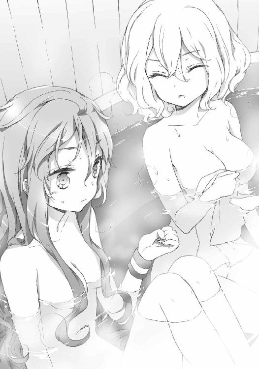

| アイドライジング！(4) (電撃文庫) | |
| 広沢サカキ | |
| (2014) | |
本書（電子版）に掲載されているコンテンツ（ソフトウェア／プログラム／データ／情報を含む）の著作権およびその他の権利は、すべて株式会社ＫＡＤＯＫＡＷＡおよび正当な権利を有する第三者に帰属しています。
法律の定めがある場合または権利者の明示的な承諾がある場合を除き、これらのコンテンツを複製・転載、改変・編集、翻案・翻訳、放送・出版、公衆送信（送信可能化を含む）・再配信、販売・頒布、貸与等に使用することはできません。
テレビ内から、時報と共に軽快なＢＧＭが流れ始める。
画面にはＣＧで作成された番組ロゴが躍り、その背景にあるのは白を基調としたスポーツ系のニューススタジオだ。ＣＧのロゴが拡散するように消えていくとそのスタジオ内、湾曲した机とそこに座る一人のアナウンサーが大きく映し出されていく。
整った顔立ちにアップにした薄緑の髪、座るふとももの色気は番組に華を添えている。そして細い肩にハッピを羽織る彼女の姿は、今までアイドライジングを見てきたファンならば見覚えがあるはず。
彼女は一礼すると、いつもどおり元気よく声を発する。
『みなさんこんばんは！ アイドライジング・ハイライトのお時間がやってまいりました！ 司会はお馴染み、アイドライジングアナウンサーのミツキ・マリノです！ さて昨晩はクリスマス、ホーリーナイトをみなさまはどう過ごされましたでしょうか？ 友達とパーティーナイト？ 恋人とアダルティナイト？ いえいえ、アイドライジングファンならばエリザベスマッチでフィーバーナイト！ これをおいて他にはありません‼』
ミツキ・マリノはいつものテンションで番組の開始を盛り上げていた。
『というわけで、今夜のハイライトは昨日決着したばかりのエリザベスマッチを大特集！ 凍える聖夜を熱くさせた可憐にて華麗なる天使たちの一戦、マツリザキ・エリー対ムラサメ・キジョウ戦を徹底解剖していきたいと思います！』
ここで、一区切りするとマリノはゆっくりと隣を見る。
『そしてなんと、今回は特別ゲストとして《オペラ・オービット》のタキ・ユウエンさんにお越しいただきました！ よろしくお願いします！』
『よろしくお願いします』
スタジオからの拍手を受けつつぺこりと頭を下げたのはタキ・ユウエン。ややフォーマル寄りの、小奇麗な格好をしている。相変わらず外っ面だけ見れば非の打ち所のない美人だ。
『では本日はタキさんの解説を混じえながら番組をお送りしたいと思います。さて、今年のエリザベスマッチですが、十二月二十四、二十五、二十六日の計三日間にわたり三試合行われる予定でした』
手元の資料を繰りながら、マリノは概要を解説する。
『しかし昨日の試合でエリーが二連勝を達成。そのため本日最終戦である三試合目を行うことなく、エリーが女王防衛という形で結末を迎える事となったわけですが──────タキさん、この女王マツリザキ・エリーの圧勝という形、同じ《オペラ・オービット》の目から見ていかがですか？』
軽く唸ってから、タキは言葉を発する。
『そうですねー。確かに結果だけ見るとキジョウちゃんが完封されてる風に見えます。でも私は技術面において、二人にそこまでの差はなかったんじゃないかなと思ってます』
『ほうほう』
『ほぼ同年齢のアイドルですし、お互い小さな頃から積み重ねてきたモノがありますから。事実熟達した技の応酬は見所の一つでしたし。勝負を決めたとすると......勝負勘と言いますか、センスみたいなものかなーと。漠然としてて申し訳ないんですけども』
『センス、と言いますと？』
『一番分かりやすいのは昨夜の第二試合ですね。決着の瞬間も素晴らしかったんですけど、その直前の行動の部分......あそこが顕著なんじゃないかと思います』
『なるほど。では、タキさんの指摘する部分をＶＴＲにまとめてあるので見てみましょう。ムラサメ・キジョウが、何度目かの接敵を繰り返していた部分からですね。どうぞ』
番組はスタジオから、試合の映像へと切り替わった。
★ ★ ★
綾時橋の白い舞台を、黒髪の美少女が駆ける。
（もう一度っ！）
幾度となく繰り返した真っ向からの攻撃を、ムラサメ・キジョウは再び仕掛けた。
同時に頭も働かせる。裏をかく奇策などといった小細工はこの試合において全く意味を為さないであろう。相手は、自分の行動その全てを読み切ってしまうのだから。
その身に纏うバトルドレスの特性によって。
《享楽天》
相手のバトルドレスから特性発動音が響く。未来予測を可能にする天下の装具。約束された未来のみを映し出す予言の機械。享楽天。それを頭上に戴くのは言うまでもなくアイドライジング最強の女王、マツリザキ・エリーだ。
《灯拳饗》
間合いに入る直前、キジョウは拳を振って自らの特性を発動させた。両拳に蒼い炎がゆらめき宿り、数多もの拳の幻となってエリーへと向かう。
『たあっ‼』
風雅でいて熾烈、幽玄でいて強力無比。人間の視覚では、この本物の拳と幻の拳を判別する事は極めて難しい。どんな相手だろうと幻惑され、古武術によって鍛えられた鉄拳をその体に叩き込まれることとなる。
しかし。
『見え見えよ』
エリーは事も無げに囁いた。
そしてキジョウと同じ和装タイプの振り袖をはためかせながら、舞い踊るかのように拳撃をかわしてしまう。
この上なく正確に、本物の拳だけを。
（やはりダメか......）
キジョウは軽く舌打ち。バトルドレスの相性で言えばどうしても灯拳饗の分が悪い。未来予測をされるという事はつまり、灯拳饗の幻を完全に見切られてしまうという事だからだ。
（そんな事は対策を考えていた時から承知していたこと......）
しかしキジョウは臆さず、攻撃の手を緩めはしなかった。
（本番は、ここからよ）
まず全く重さのない、速さを重視した軽いジャブを数発。これは簡単に盾にした下腕でガードされる。構わずにタイミングをずらしつつ散発的にジャブを放ち、ガードを固めさせたところで脇腹を狙った右フック。しかし、これは肘によって叩き落とされる。
その勢いのまま攻めこまれそうになるが、そこでキジョウはアクセルスマッシュの発動キーであるきんちゃくへと手を伸ばす。もちろんこれは牽制のためのフェイク。エリーの動きが止まる一瞬を利用し、キジョウは体勢を立て直して攻めを継続する。
攻撃に及ぶ動作、それを察知し防御へと移行するその見切り。
前兆と予測。
経験と直感。
拮抗する実力と、均衡する状況。
まるで、初めからそう段取りを決めてあったかのような二人だけの円舞曲。流れるかのように交わす一手一手は、なによりも美しくそして雄弁に二人を顕していた。しかし、これが僅かにでもずれるような事があればそれはそのままお互いの未来を分かつことになるだろう。
天国と────────────地獄へと。
（よし、ここで......）
そんな近接戦の最中、キジョウは落ち着いて一歩引く。そして撃ち放っていた灯拳饗の、幻の範囲とその数を一気に増大させた。
『..................』
ここでエリーの表情がやや歪む。享楽天のバイザー越しにも見えるほどに。
（接近した状態で細かく幻を出されるよりも、視界いっぱいが幻で埋め尽くされる方が混乱するでしょう？ 私の攻撃を全部読もうとしてしまうのならば、なおさらね）
たとえ幻であろうと本物であろうと、動的なものが視界に入ってしまうと自然と人間はその行方を目で追ってしまうもの。これは意思でどうこうなるものでなく視覚の機能である。意識しないように努めることは可能だが、その切り替えは即座に行えるものではない。
いくら享楽天が未来を読めると言っても扱うのは人間。抗えぬ人間の反射行動を利用してやれば────────────
（隙が出来るっ）
そして刹那の間隙にキジョウは見た。
エリーの視線が、本物の拳を捉え損なった瞬間を。
ここを狙えばエリーは防御も回避もアクセルスマッシュの発動すらも間に合わない。完全フリーになったあごを真下から捉えられる。
（ここだっ‼）
確信し、拳を握りこみつつすり足で相手の懐に一気に滑りこむ。ムラサメ流古武術独特の移動法だ。幾度となく体に叩き込んだ確かな動作。間違うはずもない。
限りなく速く行ったはずだが、なぜだか妙にゆったりとした動作に感じられる。
冴え渡る意識が、筋肉の動きすら余すところなく認識しているかのように。
まるで引き伸ばされていく時の中に身を置いているかのように。
それはまさに、極度の集中がもたらす刹那の極致。
（いける！）
そのまま流れるように、エリーのあごを狙ったアッパーカットを撃ち放つ。これが決まれば脳が揺れ、確実にダウンを奪えるはずだ。
そこから必殺技を決めてやれば─────────
《アクセルスマッシュ》
しかし、その音声でキジョウは一気に現実の時空へと引き戻された。
あまりにも予想外の発動音だった。１００％鳴り響くはずのない、アクセルスマッシュの音声なのだから。
（な、なぜ⁉）
あのタイミングからでは、エリーのアクセルスマッシュ発動はどうやっても間に合うわけがない。確実に詰んでいたはず。
事実エリーを見ても、ゴーグル横にあるアクセルスマッシュの発動キーには未だ手はかけられていない。
だがしかし、その代わりにエリーがその手に握っていたのは───────
（───────っ‼）
キジョウのバトルドレス、灯拳饗のアクセルスマッシュ発動キーであるきんちゃくだった。
そう、アクセルスマッシュの発動音を発したのは享楽天でなく灯拳饗。エリーは自分でなく相手のアクセルスマッシュを勝手に発動させたのだ。
（あの隙は───────きんちゃくを奪う行動に気付かせないよう、わざとっ⁉）
ここで理解するが、遅かった。
エリーに薙ぐような足払いをかけられて、キジョウは派手にダウン。打ち付けた体の痛みを無視して慌てて起き上がるが、既にエリーは間合いの範囲外にいた。
そしてキジョウの右腕に宿された必殺の光は弱々しく明滅し、やがて消えた。アクセルスマッシュの効果時間が切れてしまったのだ。
『.........っ！』
これでエリーはアクセルスマッシュを消費せずに、相手のアクセルスマッシュ回数を一回減らしたことになる。一試合中に使用できるアクセルスマッシュは一人につき三回まで。自身に全くの損失なしで、このアドバンテージを得られたのは非常に大きい。
『ああっと、ここでキジョウがエリーの策略にまんまと絡め取られたあっ‼ 接敵するたびに強引な攻めを行うキジョウでしたが、それが仇となった模様！ 一直線さを逆手にとられ、エリーにあまりにも大きなアドバンテージを与えてしまいましたっ‼』
実況者であるミツキ・マリノの声が聞こえ、次第に観客の声援などがキジョウの耳に入ってくる。
エリーは、悠然と近づきながら言葉を放つ。
『こんなものなの？』
珍しく、エリーは煽る。
これは試合の熱狂を手伝うためのものなのか、それともキジョウに実力以上のものを引き出させるためのものなのか......。
『......くっ』
それを聞いて、キジョウの心はざわめき立つ。
（これで......諦めたりはしない！）
その決意を全身に行き渡らせるように深呼吸してから、目を見開いた。
そして。
《灯拳饗・アクセルスマッシュ──────酔鬼落宴》
無数の幻拳に紛れアクセルスマッシュを放つ、灯拳饗の必殺技を発動させた。ここで一気に勝負を決める気なのだろう。
《享楽天・アクセルスマッシュ──────巡花芳亭》
対するエリーも必殺技で応じる。こちらは享楽天により未来予測をし、必ず相手にアクセルスマッシュを当てるという無類の必殺技。
『てやああああああああああああああっ‼』
キジョウが一直線に走りだす。
だが、迎え撃つエリーは微動だにしない。
泰然と穏やかに、ただ待ち受ける。
まるでこの試合の結末を知っているかのように。
やがて二人のアクセルスマッシュの光は交錯し......
そして────────────
★ ★ ★
『─────と、マツリザキ・エリーが相手のアクセルスマッシュを発動させた部分ですね』
『見てる分には簡単そうなんですけど、実際にやるのは難しいんですよね。仕掛けどころの勘の良さといい、やっぱ持って生まれたセンスがずば抜けて─────────』
アイドライジング・ハイライトは、室内にやけに強く反響を残しながら進行していく。
声の響き渡るそこは、浴室だった。
べつだん豪華な装飾や大理石などが使われているわけでなく、いたって一般的。広く清潔で、随所の細かな設計を見るに機能美を重視したつくりである事が分かる。
そしてその中央、浴槽に身を沈めているのはくすんだ金髪の美少女。
その水面に......水滴が落ちる。
────────────ぽつん、と。
「────────────ん」
マツリザキ・エリーは、その音で目を覚ました。
温かい湿気の中、ぬるま湯に沈んでいた体を起こす。いつもの半身浴の最中、ついうとうとしてしまったようだ。バスハーブにカモミールを使ったからだろうか、眠りが深かったような気がする。
「......あぶなかった......」
ぼんやりと、いつもの平坦な調子で呟く。エリーは現在一人暮らし。いくら半身浴とはいえ油断すれば溺れてしまう。気を付けねばなるまい。
すうっと息を吸って、ハーブの香りでしっかりと目を覚ます。
意識がはっきりして、まず耳に入ってきたのはテレビの声。
半身浴にての長風呂が習慣づいているため、暇潰しのために防水加工のものを設置してあるのだ。なんとなく、そちらに目を向ける。
『─────今回の防衛によりエリーはアイドライジング三連覇を達成。弱冠十七歳による三連覇はアイドライジングでも史上最年少の記録です！ この勢いで五連覇達成となればあの伝説のアイドル、スイレンドウ・ハナと並ぶことになります！』
『あー、確かにそうですね。エリーちゃんはデビュー以来アイドライジング関係のほとんどの賞を総なめにしてますし、まるであのスイレンドウ・ハナをなぞるような軌跡ですね』
『やはりタキさんとしては、来年辺り断固阻止のため大きく動いたり......なんて事はありえるんでしょうかっ？』
『うーん......《オペラ・オービット》の古株として、さすがに伝説のアイドルの再来をそうそう簡単に再現させるわけにいかないかな、とだけ』
『おやおや～、興味深いコメントをいただいてしまいましたっ！ 来シーズンの活躍に期待が高まってしまいます！』
『あ、でも確か............スイレンドウ・ハナが獲っていて、エリーちゃんが逃してしまった賞が過去にたったひとつだけありましたね』
『ほう、それは？』
『ええと、確か─────────』
そこで、テレビの声はぶつっと途絶えた。
エリーが電源を落としたのだ。
「.....................」
硬くなっていたその表情を解くように頭を振り、そっと立ち上がる。
その美しい裸身が、浴槽から外気へとさらけ出される。陶磁器のようにつるりとしていて艶やかな肌には、じんわりと汗の珠が浮かんでいた。
「あと二回......」
そしてぽつりと呟く。
まるで自分に言い聞かせるようにして。
「あと二回で、ママに......」
拳を強く握りしめながら、エリーはもう一度呪文のように繰り返した。
クリスマスも過ぎた十二月の末。
日本列島を絶賛襲撃中の大寒波は東京湾に浮かぶ人工島ニライカナイももちろん例外とはみなさず、その厳しい寒風で住民たちの体を震わせていた。
いつもは賑わっている綾時橋の駅前も人通りはやや少なめで、なにより本州からの観光客の姿がほとんど見当たらない。観光産業を主力とするニライカナイにとってかなり珍しい光景と言えるだろう。
しかしこれは例年のこと。
アイドライジングは、クリスマスに行われたエリザベスマッチの終了と同時に短いシーズンオフの期間に入っているからだ。
年末は基本的には綾時橋ドームから全国規模の生放送はなく、試合も行われない。アイドルたちの仕事もＣＭ撮影やＴＶ番組へのゲスト出演などといった業務のみとなる。それ故この時期は自然と足を運ぶ観光客が少なくなり、ニライカナイには穏やかな時が流れることとなるのだ。
そして、それはつまりアイドライジングに従事する者達にささやかな休暇の時期が訪れるということでもある。
「ふうむ」
一つの紙切れを前にしてうなり声を上げたのは、キムラ別室に所属するオウダ・サイ。
知性溢れるメガネにきっちりとした仕立てのスーツ、足下は高めのヒールとまさにキャリアウーマンといった出で立ちだ。低い背と豊かに育った胸のアンバランスな魅力は、確実にある一定の層のハートをきっちり捉えるであろうことは想像に難くない。
「協会の保養所......ですか」
サイはうなった原因であるその紙切れにもう一度目をやる。
印字されていた内容は、アイドライジング協会の管理する保養所について。これから年始にかけて保養所の料金を格安にするので是非ご利用を、といった宣伝のファックスがキムラ別室に送られてきたのだ。
「そ アイドル専用の保養所でね。いつも年末年始はそういうサービスするんだよ」
キムラ別室の室長であるユウガクはデスクで爪切りなんぞをしながら、サイに返答した。細めのベストにコーデュロイ生地のズボンなど冬服になっても傾向はやや若めだ。
「へえ......そうだったんですか......」
「もし年末余裕があるなら、モモちゃんを連れて顔を出しておくといい。アイドルが大勢集まる機会なんてそうそうないから。まあ強制ではないし、サイちゃんに任せるよ」
「うーん、参加したいとは思うんですが......」
サイは難しい顔をしてあごに手を当てる。
「あ、もしかしてご実家の方から早く帰ってこいって催促されてるのかな？」
そのユウガクの推測を、サイは困ったような表情で肯定した。
「今までずーっと帰らずにはぐらかしてきたものですから、今年の年末こそは仕事納めを迎えたらすぐにでも帰ってこいって言われちゃって......さすがに断れなかったんです。うちの親ホントに過保護で......」
ちなみに、本日十二月二十六日をもってキムラ別室は仕事納めだ。やや早めではあるがアイドライジング関係の部署は大体シーズンオフと同時に仕事納めが通例となる。
「まあ、親ってのはそういうもんさ。そういえば、モモちゃんの方は里帰りいつからだっけ？」
ちょうど爪を切り終えたユウガクは、キムラ別室のアイドルであるモモへと声をかける。
「ええっと、いつでもいいけど、アイドルのお仕事をちゃんと一段落させてから帰ってきなさいって言われてます」
ソファに腰掛けていた制服姿のモモは、湯吞から口を離し答えた。
モモは女子高生にして上京中の身。学校も冬休みに入り、アイドルの仕事もシーズンオフとなる年末年始はもちろん故郷である山形へと帰る予定だ。
「理解のあるいい親御さんね。はあ、私の親もそれくらいの距離感でいてくれるといいんだけどなあ......」
ため息をつきながらサイ。
「しかし......サイちゃんに予定があると、保養所に行くのは難しいかな」
「うーん、そうですね。せっかくですけど......」
「はう、サイちゃんと旅行行きたかった......」
モモはしょんぼりと肩を落としてしまう。
「ごめんねモモちゃん。今度埋め合わせはするから」
「残念だねえ。箱根の温泉で今年の疲れを癒してもらおうと思ったんだけど」
ユウガクのその言葉を聞いて、サイはぴたりと動きを止めた。
「......箱根で、温泉......？」
そして折りたたんだファックスをもう一度広げて詳細を確認する。
「そう。保養所ってのは箱根の旅館だよ。もちろん温泉の種類は豊富で......そこらの高級旅館も顔負けなほどなんじゃないかな」
「......温泉......」
サイの瞳はキラキラと輝きはじめる。
「あと、ここは出される料理も美味しいんだよね。小田原と早川が近くにあるから魚が新鮮でね。今の旬は河豚とか金目鯛とか......山の幸だと猪かな」
「............おいしいごはんに、温泉......」
その魅惑の単語を聞いて、サイの頭に想像が広がっていく。
まず、早めに到着したら大浴場にて汗を流して浴衣姿で温泉街をぶらり。湯畑を横目にお土産屋などを巡り、足湯ついでに温泉まんじゅうを頰張る。夕飯時には豪勢な舟盛りが部屋にてお出迎えだ。いや、季節を考えると牡丹鍋だろうか。ごちそうをたらふく食べた後は卓球や時代遅れな筐体ゲームに興じるのもいいだろう。
そして、夜も深くなってから再び露天風呂へ。熱めの湯に浸かり、箱根の尾根に降り積もる雪を眺めつつ地酒を熱燗できゅっと......。
おそらくそれは、このニライカナイに引けを取らぬ楽園であろう。
「────────温泉旅行、行くことにしましょうか。親は絶対に、是が非でも説得してみせるわ。だって温泉で熱か────────いえ、これも立派な仕事の一環だもの」
サイはぎりっと拳を握りしめ、強く決意を固めた。
「やったぁ！ 温泉旅行！ 色々準備しなきゃ！」
モモは子どもみたいに両手をあげて喜ぶ。
「あら、モモちゃんってそんなに温泉好きだったの？」
「温泉は好きだけど、それよりなによりサイちゃんと一緒にお風呂入れるし！ 最近は全然一緒にお風呂入ってくれなかったから、淋しかったんだもん。サイちゃんのもちもちおっぱいがどれくらい大きくなったのか触って確かめないとね」
「な、何を言ってるのこの娘は！」
一気に顔を真っ赤にしてサイ。
「えー、だって、夜寝てる時もイタズラしちゃダメだって言われたから。ブラのサイズだけじゃ細かいサイズは分からないもん。私の見立てでは、サイちゃんのおっぱいは絶対に大きくなったはずだよ」
モモが力強く頷くその隣に、すすっとユウガクは近寄っていく。
「ほう、モモちゃんその話もっと詳しく聞きたいね」
「んー、まあ室長さんならば特別に教えましょう。実はですね───────」
「ふ、二人ともいい加減にしなさーいっ‼」
そんなこんなで、モモとサイの二人は年末を箱根で過ごす事になった。
★ ★ ★
そして迎えた十二月二十八日、旅行当日。
見事に快晴となった空の下を、ロマンスカーは通常通り運行していた。
帰省シーズンに観光地である箱根へと向かう層は多くなかったのか、車両内は小田原を過ぎるとぐんと客席の空きが目立つようになった。
「ちょうどいい時期だったのかしら......無理して旅行決めてよかったわ」
サイは、手に持っていた文庫本をぱたりと閉じながらぽつり。
両親はやはり手強かった。三時間にわたる電話での大激戦の末なんとか一泊二日の猶予をもぎとり、今まさに短いバカンスへ向かっている最中というわけだ。
ちなみにサイが身につけるのは丸襟レトロワンピース。上に羽織るケープはワンピースの紺と差を出すための白で、もこもことしたシルエットが面白くも可愛い。頭にはベレー帽、足元はタッセルのローファーときっちりとしたクラシカルスタイルだ。
「ぷはー、駅弁おいしかった......」
隣に座るモモはペットボトルの緑茶を飲んで、恍惚の表情。
シックなイエローのピーコートの下はストライプのシャツにニットのベスト。裾を軽く折ったタイトなデニムが長い足を包んでおり、その終着点はベロアのショートブーツだ。
そして変装のため、大きな縁の伊達メガネと黒のハットも装備している。
「相変わらずいい食べっぷりねえ......」
窓脇の机には、五種類もの駅弁の空箱が積まれている。言うまでもなくこれらは全てモモが処理したものだ。
「そろそろ到着ですよね。私、箱根って初めてです。う～、楽しみ♪」
「あんまりはしゃいじゃダメよ。モモちゃんはアイドルなんだから、節度ある行動を心がけること」
アイドライジングで活躍するアイドルの人気は当然ニライカナイには留まらない。日本全国、いや場合によっては海外でもファンに囲まれる可能性はある。外出時はプロデューサーが細心の注意を払わなくてはならないのだ。
「はーい♪」
返事はしっかりしたものだが、そわそわと揺れ動く体を見るに興奮を抑え切れないようだ。
「あのあの、そういえば室長さんって今回の旅行には来ないんですか？」
「ああ、室長なら別の日に顔を出すって言ってたわ」
「そうなんですか。せっかくの温泉旅行なんだからキムラ別室全員で来たかったなあ......」
それを聞いて残念そうにモモ。
「まあ、確かにあの女好きの室長が温泉旅行に付いてこないのは意外ね。仕事なんて意地でも片付けて同行しそうなものだけど......」
思い返せば、この保養所の話が出た時のユウガクは随分と大人しかった。
なにせ今回は温泉旅行である。いつもならば『安心して。露天風呂付きの個室にバッチリ予約を取ってきたから。誰にも邪魔されない空間で三人、親睦を深めようじゃないか。おおっと三人一緒には入れないよ。まずはモモちゃんと俺の二人で、ね？』とかなんとか言い出しそうなものだ。
「んー......室長は昔の知り合いに囲まれちゃうのがイヤなのかも。ほら、保養所はアイドライジングの関係者ばかりだろうし、室長の名前を聞いたら大勢の人が集まってきちゃうから」
「室長さんのお名前......ですか？」
首を傾げるモモを見て、サイは思い至る。
「あ、そういえばモモちゃんに室長の話をしたことはあんまりなかったわね」
それはモモが積極的に知ろうとしなかったと言うよりも、ユウガク自身が自分のことをあまり話さなかったためだろう。
「室長はね、今でこそ私たちの監督役みたいなポジションだけど、昔は自身でアイドルをプロデュースしていたのよ。超がつくほどの敏腕でアイドライジングのクイーンを四人も輩出したんだから」
「クイーンを......四人も？」
「そう。その四人はね、それはもうものすごい強いクイーンたちだったの」
アイドル個人の持つ才能やセンスを最大限伸ばしていくには、プロデューサーという指導的存在が必要不可欠になる。いくら卓抜した才能を持っていようと、いくら努力の日々を積み重ねようと、その力を正しく見極め伸ばしてくれる指導者がいなければその全ては水泡に帰してしまうからだ。
手がけたアイドルをクイーンという最高の形で結実させたユウガクの手腕は、彼がその分野においてまさに天才的であることの証左と言えるだろう。
「その四人のアイドルはとっくの昔に全員引退しちゃってるけどね。風の噂じゃ今は弟子の育成に注力してるとかなんとか......」
「し、室長さんってそんなにすごい人だったんですか......」
モモはおぼろげだったユウガクの正体を知り、思わず感嘆の声を上げる。
「業界内の伝説としてはかなり有名な話なの。まあ、偉そうに言ってる私も知ったのは入社した後なんだけどね。プロデューサーって基本的に表に出なくて知られにくいから」
「ふえぇ～、そうだったんだ......」
そこでサイは少し口角を上げてにんまり。
「それで......これは室長にまつわるロマンチックな話なんだけど......室長はね、その四人のアイドルの一人と結婚したのよ。つまり、アイドルとプロデューサーで恋愛結婚ってわけね」
「え、室長さんって結婚してたんですか」
「そうよ。奥様はもう随分前にご病気で亡くなられているし、お子さんもいなかったはずだから今はもう長いこと一人暮らしのはずだけれどね」
「意外な事実です......」
確かにユウガクのあの年齢にしてあの軟派さからは、家庭的な要素は感じ取りにくい。独身という方がしっくりくる。
「室長と清い交際を続けていた彼女は、クイーン五連覇という偉業を達成した直後アイドルを引退。そして人知れずそっと入籍したそうよ。世間的には人気絶頂のアイドルが謎の電撃引退って形だけど、その裏には室長と結婚っていう真相があったっていうわけなの」
「ふわあ、確かにすごいロマンチックなお話かも......」
それを聞いて、モモの瞳の星がぐうんと大きくなっていく。
「でしょう？」
「だって......そういうことは......その......えと......ふえええぇぇ......？」
結婚について思い巡るものがあるのか、モモは頰を赤くしながら一人でぶつぶつと呟いている。いつもサイに対してセクハラな発言や行動の多いモモだが、なんだかんだこういう部分はうぶだ。根はまだまだ子どもなのだろう。
「なんていうか、その......なんだか、照れちゃうね......？」
モモは自分の中でその感情を処理しきれなかったのか、照れくさそうにサイにはにかんだ。
「あら、別にモモちゃんが照れることないのよ」
くすくすと笑いながらサイ。
「えー、だって......アイドルとプロデューサーで結婚するってことはさ......」
モモは自身の人差し指をつんつんと突き合わせながら、サイに確認した。
「私もサイちゃんと結婚するかもしれないってことでしょ？」
★ ★ ★
「やっと着いたー」
箱根湯本駅のホームに到着すると、モモはぐいっと背を伸ばした。
長時間座席に押し込められていたせいで、背中とおしりがすっかり硬くなってしまった。まずは軽く屈伸などして体をほぐす。
「まったくもう、この娘はホントに何を言い出すのか想像がつかないわね......」
続いて、サイがロマンスカーから下車する。その顔は先ほどのモモよりもよっぽど赤くなっている。
身長差の大きい二人は横に並びながら、改札口へと向かっていく。駅からは保養所への直通バスが出ているということなので迷うことはないだろう。
「うーん、いいお天気だなあ」
ホーム脇の景色へ視線を向けると、ニライカナイとはまるで違う独特の風景がモモの目に入ってくる。
今やってきた線路と並行するように道路が敷かれており、広めの川を挟んだ向こう側には常緑樹の山々が見える。奥まった細い道には土産物屋がずらりと軒を連ねており、観光バスの往来もひっきりなしだ。
レトロで独特な温泉街の風景がモモの心を躍らせてくれる。
「河川敷に立ち並ぶ旅館、舞う湯けむりに温泉まんじゅうの香り......うーん、まさに温泉街って感じでいいわね」
そこで、やや高めの少女の声が聞こえてくる。背後からだ。
「年末に海外でラグジュアリーなバカンスなんて二流三流の成金がやることよね。本物こそこういう由緒正しい歴史ある土地を選ぶもの。一年の疲れを名湯で洗い流しつつ、年の瀬をゆったりと慎ましやかに過ごす......これが本当の贅沢ってもんよ」
そこには長い黒髪をはためかせて仁王立ちをしている見慣れた美少女がいて─────
「は、早いよオリンちゃん」
息を切らせつつ彼女に近寄っていく中年の男性が一人。
「何言ってんの、ウダっちが遅いのよ。さあ、お土産を買いに行くわよ」
「えぇ？ 着いたばかりだよ？」
「帰る頃には体力を使い果たしてヘトヘトになってるし、電車の時間を気にしつつの買い物は大体の場合ロクな事にならないわ。物自体は宅配便で送ればいいし、お土産は先に選ぶのが鉄則よ。旅慣れてないわねえ」
「いやあ、僕は出不精なもんでね」
そこにいたのはハセガワ・オリン、ウダガワ・ジュンイチのラネイドペアだ。
「オリンちゃん！」
モモは大親友の姿を認識すると、瞬間移動したかのようなスピードでオリンへ向かっていき力いっぱいむぎゅっと抱きしめる。
「げっ！ 桃色ガリ────ど、どこ触ってんのよ！ 放しなさいよ！」
どさくさに紛れておしりを摑んできた手を払い落とし、オリンは苛立たしげに突き放す。
フード付きの水玉スウェットの上に細身でやや丈の長いツイードコートを重ねており、下はホットパンツに黒のレギンス、そしてプラットフォームのブーツだ。カジュアルなものを取り入れつつも、スタイルは細くスマートに見える。
どうやら変装アイテムは大きめサングラスのみであるようだ。
「ったく......なんであんたがここにいんのよ？」
「私はアイドライジング協会の保養所に温泉旅行に来たんだよ」
それを聞いた瞬間、オリンは重いため息。
「......宿泊先まで一緒とは......まったく、冬休みで毎日顔を合わせなくなってせいせいしてたところなのに......」
「え、一緒ってことはオリンちゃんも保養所に？」
「非常に残念なことにね」
「オリンちゃんと一緒にお泊まり出来るなんて......」
興奮は最高潮に達したのか、モモは両拳を胸のあたりでぷるぷる震わせる。
「一緒に温泉入ろうね！ あ、でも......サイちゃんとも一緒に洗いっこしたいし......ど、どうしよう......どっちかなんて私には選べないよ......」
「一人で悩んでるといいわ。出来ることなら永遠に」
真剣な面持ちで悩み始めるモモを見て、心底どうでもよさそうにオリン。
「あら、奇遇ですねえ。今年はうちのモモが本当にお世話になりまして......」
「いえいえこちらこそ仲良くさせてもらって。来年もよろしくお願いします」
サイとウダガワは深々と頭を下げあっている。
デビュー時の一悶着といいタッグマッチといい、モモとオリンは新人でありながらその破天荒さのおかげで注目度が高かった。アイドライジングの主目的である広告の役目を充分なほどに果たし、お互いの会社にとってまさに良好な関係を築けたと言っていい。ビジネスとして今後もこの関係を大事にしていきたいと思うのは当然のことであろう。
「そちらは休暇で？」
ウダガワの問いにサイは笑顔で返す。
「ええ。一泊二日の短い期間ですけれど、モモちゃんと二人で。そちらは？」
「うちも似たようなもんです。オリンちゃんのご両親は海外に行ってるらしいので、正月までこっちに宿泊する予定でして......あの、ところでキムラさんは来てないんですか？」
きょろきょろとあたりを見回し、ウダガワは一人足りないメンバーを探す。
「うちのキムラでしたら別件がありまして......今回は私とモモちゃんだけなんです」
「ふうん......なるほど」
そこでウダガワは思わせぶりな返答をひとつ。そして腕時計に目をやる。
「オリンちゃん、ちょうど時間的に直通のバスも来る頃だ。モモちゃん達もいる事だし、先に保養所に行って荷物くらいは置いてきたほうがいいんじゃないかな？」
「んー、仕方ないわね。また時間をみて選ぶことにするか」
「お土産かあ。私もお父さんとお母さんとナツキと......あと、ユキんちょとノゾミんの分を買っていかなきゃ」
その単語を聞いて、モモはお土産を用意する相手を指折り数える。
「あっ、ねえねえオリンちゃん、一緒に来た記念になんかおそろいのやつ買おうよ」
「貴重な冬休みを潰された記念にって？ 絶対に嫌よ」
「んもう、オリンちゃんの照れ屋さん♪」
「はあ、まったくなんでこんな事に......」
こうして一行は改札を抜け、保養所行きの直通バスの停留所へと向かっていった。
★ ★ ★
大きめの格子で構成された灯籠。
保養所である旅館の外観を一言で表現するとこんな感じだろう。箱根の景観を崩さないためか、背はそれほど高くなく横に広い感じだ。
中に足を踏み入れると、まずなにより目立つのは天井から吊るされた巨大な提灯。さすがに火は灯っていないが、インテリアとしてはインパクトがありなかなか面白い。ロビーはそこを中心として待合の椅子をいくつか配置しており、人が自然と中心に集合するように配慮されたつくりのようだ。
無闇やたらと豪華な調度品を置くでもなく、居心地の好さの基本となる清潔さと思い遣りが感じられる品のよい施設だ。やはりアイドルたちが使うだけあって質は高い。
そして等間隔に置かれた優しげな灯籠の灯を辿って廊下を進み、階段をきしませながら三階へ。その一番奥まったところにあるのが桔梗の間。
いわゆる一般的な間取りのこの和室が、モモとサイの泊まる部屋だ。
「ふぅ......お茶がおいしい......」
座椅子に座りつつ、ずずっと緑茶をひとすすりしてモモは一息。もう荷物分けも済み、紺の浴衣へと着替え済みだ。慌ただしさは鳴りを潜め、気分はもうすっかりリラックスモードに入っている。
「......あれ？ まだこんな時間だったんだ」
随分とゆっくりしているつもりだったが、時計を見ればまだ昼の三時。夕飯までこの部屋で待つには長すぎるし、かといって今から麓の土産物屋通りへ赴くには少々距離がある。
この隙間の時間を有効的に使う手段は、もはやひとつしかあるまい。
「じゃあ、夕飯前に温泉に入っておきましょうか」
障子で仕切られた窓際、籐で編まれた椅子に座っていたサイから、待ってましたの一言だ。
「ついにこの時が......」
モモはゆらりと立ち上がり、ぎゅっと拳を握る。いよいよパラダイスへと赴く時だ。
「じゃあ、準備をしましょうか。ちょっと待っててね。ええと、たしか小さなバッグの方に洗面具が......」
「むふふ......」
モモは待ち切れないのか、うずうずそわそわ。顔もなんだかにやけてしまう。
「今のうちに、オリンちゃん誘ってきちゃおーっと♪」
そしてうきうきステップのままスリッパを履き、紅葉の間へと向かっていった。
「オリンちゃん、こんな大事な時にいないなんて......」
モモは落胆しつつ、とぼとぼと大浴場へと向かう廊下を歩いていた。
オリンのいる紅葉の間を訪ねたところ返事はなく、隣室のウダガワに尋ねても行き先は知らないとの事だった。
「まあまあ。オリンちゃんはお土産を探したいって言ってたから、もしかしたらすぐに買い物に行っちゃったのかもしれないわね」
入浴道具を抱えたサイが優しくなだめる。
「はあ、せっかく一緒に体の洗いっこしようと思ったのに......」
そして二人は女湯と書かれた暖簾をくぐり中へ。
ほんのりと硫黄が香るその秘境は、なかなかに凝ったつくりだった。
まず広がっているのは休憩所のような空間。洗面台、扇風機、マッサージチェアに体重計などの定番どころはしっかり押さえてある。やはりこれらを外してはならないだろう。自販機の形式ではあるが、飲み物やアイスの販売もされているようだ。
奥に進むと脱衣場。衣服を入れる樫のロッカーは時代がかった雰囲気を醸し出しており、足元に敷かれた竹のフローリングはひんやりとしていて心地好い。清潔で明るいのはもちろんのこと、ツボを心得たインテリアはリラックス出来る空間を生み出している。
やはりアイドライジング協会が管理する保養所であるため大浴場、特に女風呂は相当力を入れて設計されているのだろう。
そして質の高さは、もちろん利用者にも言えること。
周囲にいるのは目を見張るようなとびきりの美少女ばかり。ロリ属性を備えるちびっ娘、対照的に豊満なグラビアモデル、包容力のありそうな母性溢れる身体の持ち主にスレンダーなアスリート───────
「おお......」
温泉に入る準備の傍ら、裸身を躍らせる多種多様な美少女達にモモの目はついつい引き寄せられてしまう。しかし、目的は彼女らではない。
「サイちゃん、さあ脱いで脱いで♪ たっぷり楽しいことしよ♪」
わきわきと手を動かし、周囲と負けず劣らずの美少女を催促する。彼女がどれだけの成長を遂げたのか、しっかりと観察─────いや、触って確かめなければ。
「......モモちゃん」
しかしサイは落ち着き払った様子で浴衣をはだけると............
「あれを見なさい」
そっと静かな動作で壁を指さした。
「あれ？」
目を向けるとそこには『公衆浴場心得』と書かれた板がかかっている。『飲酒中の方は入浴をお控えください』とか『刺青のある方はご遠慮ください』とか、いわゆる入浴マナーに関しての基本的なことが書き連ねてある。
その中に『お風呂は入浴をする場です。それ以外の行動は慎みましょう』とある。
「公衆浴場では入浴以外の行動はしちゃダメなのよ。つまりモモちゃんが望むいちゃいちゃぺろぺろな行為は禁止されているわ」
「ええっ⁉」
それを聞いてモモはぴしっと固まる。
温泉に入ることそれ自体をとても楽しみにしていたのは事実だ。
しかし、サイやオリンとのいちゃいちゃぺろぺろ行為もまた、温泉に対しての期待値を大きく底上げしていた事は言うまでもないだろう。それが禁止されてしまうとなると、モモにとって温泉の魅力は大幅に減じてしまうことになる。
「ここは公共の場なんだからルールは守らなきゃね。さ、行きましょう」
サイはタオルで体を隠しつつ、がらがらとガラス戸を引いて中へ。
「ええ～、そんなあ......」
ゴムバンド式のロッカーキーを手首につけ、モモもその後に続く。
大浴場は五階に存在し、そこからサウナ、滝風呂、屋上の足湯庭園、露天風呂などなど各々が望む浴場へと向かっていく形となっている。
まず眼前に広がるのは定番、檜の大浴場だ。
「ほわぁ......」
それは、モモの落ち込んでいた心を一気に昂揚させるほどに立派なものだった。
たっぷりと湛えられた白い濁り湯はこの宿自慢のものだろう、広々としたＬ字型の湯船に滔々と注がれたそれは檜の香りと相まって心やすらぐ香りを浴場全体に広げている。そして窓から望めるのは、青々とした山々の向こうに見える富士。ベタではあるが、まさに絶景だ。
モモは体をしっかりと洗った後、髪をまとめ上げ檜の湯船に静かに体を沈める。
冬場の冷えていた身体に、じぃんと痺れるように熱が染み入ってくる。そして強張っていた筋肉を緩めていき、完全に脱力。血管に、神経に、体の各所に湯が巡っていくようだ。思わずゆるーい表情になってしまう。
「はふぅ......」
やはり温泉はいい。緑茶を飲む時と温泉に入る時は、まさに日本人に生まれてよかったと思える最大の瞬間だ。そして日本といえば富士の山。好天に恵まれているため、しっかりとその姿を確認できる。至福のひとときだ。
軽く火照ってきたところで、周囲をぼんやり観察する。湯船にはもちろん数名のアイドルが浸かっており、その中に色っぽいうなじの持ち主を発見する。
黒髪で肌も白く、体格も細い。
（オリンちゃんだ......）
モモはすぐにピンと来た。
（私たちよりも早く温泉に来てたんだ......）
湯をかき分けてそっと近づく。ここは背後から声をかけて脅かしてやろう。いちゃいちゃぺろぺろ行為は許されなくとも、この程度なら許されるはずだ。
「オリンちゃん！」
「きゃあ！」
しかし、返ってきた声は予想に反してオリンのものではなかった。しかし、それはどこかで聞き覚えのある凜とした声で......。
「あなたは......アイザワ・モモ......」
振り返ったその顔を見て、モモは戦慄した。
彼女は《オペラ・オービット》の一人、ムラサメ・キジョウだった。
紆余曲折あって参加する事になった二ヶ月前のエリザベス予選で、圧倒的力量差でモモをフルボッコにしたまさにその人。まさかこの保養所に来ていようとは......。
「す、すみません。間違えました......」
一気に血の気が引いた。今までぽかぽかだった身体が急激に冷えていく。
「......お風呂は、静かに過ごす場所ですよ。あまりはしゃがないように」
そして試合で垣間見た、あの鋭い視線で射貫かれる。
「す、すみません......」
消え入りそうな声とともに、モモは顔半分が隠れるほどに身体を沈めていく。
もはやヘビに睨まれたカエル。ぷるぷると震えながらも、なるたけ自然な感じでその場からの離脱を試みるが......
「......この間は、ごめんなさい」
意外な事にキジョウから声をかけられた。その言葉に、棘はない。
「え？」
「エリザベス予選の時です。私としたことが、大人げなかったわ......」
振り向いて話を続けてくる。
「一試合目は、感情に任せてあなたを嬲ってしまった。タキさんの言うとおり、あそこまでやる必要はなかったのに......あれは私が未熟な証拠です」
「い、いえ、そんな......」
まさかあの時の事を謝られるとは思わなかった。
様々な事情があったとはいえ、エリザベス予選というハイグレードな戦いに新人のモモが出場してしまったのだ。あの時のキジョウの怒りは至極もっともであろう。
「でも二試合目は力不足ながらも、あなた自身のやり方を見つけてしっかりと試合を盛り上げていた。立派に役目を果たしたと思います。それを、言いたくて......」
見せる微笑はその希少さもあってか、ひどく美しかった。
「あ、ありがとうございます」
初対面の時から厳しい人だと感じてはいたが、それはおそらく自分にも他人にも等しくもたらされるものなのだろう。悪い人ではなさそうだ。
「あら、あなたは......ムラサメ・キジョウちゃん？」
声と共に湯波がそよぐ。モモとキジョウの間に交じってきたのはサイだ。
「あ、ご挨拶が遅れてしまってごめんなさい。私、モモちゃんのプロデューサーをしているミニテックスのオウダ・サイです。初対面がこんな場所でアレだけど、よろしくね」
「これはご丁寧に。私、クオリアルに所属するアイドル、ムラサメ・キジョウと申します。先日のエリザベス予選ではお世話になりました」
キジョウは静かに頭を垂れる。
「お世話になったのはこっちの方よ。モモちゃんにとてもいい経験をさせてもらったから。エリザベスマッチは残念だったけれど、来年頑張って」
「ありがとうございます。私はまだまだ精進が足りなかったようです......」
「あんまり気を張り詰めすぎないようにね。ここにはよく来るのかしら？」
「ええ、温泉は大好きなので......」
会話のキャッチボールをしつつも、キジョウの瞳はずっとサイを映している。
食い入るように、じっと。
「............」
やがて、キジョウは意を決したように口を開いた。
「あの......オウダさん。一つお尋ねしたいのですが......」
「はい？」
「......好きな食べ物とか、ありますか？」
「へ？」
全く意図の読めない質問に、サイは虚を突かれる。
「ええっと......果物とか好きかな......」
ひとまず普通に返答してみるサイ。
「肉とか牛乳とか......そういうものは好まれないのですか？」
「え、ええ。特にそういうのが好きってわけじゃないけど......」
「やはりあれらの効用は迷信なのかしら......」
キジョウはぶつぶつと一人真剣な表情で呟く。
「私、牛乳大好きです！」
そこでモモが元気よく主張する。
「ふむ。確かにあなたは背が高い」
納得したようにモモの顔へと目をやり、そのまま視線を下に。
「......しかしそこまで効果はなさそうですね......」
誰にも聞こえないように、ぽつりと一言。
「な、なんの話かは分からないけど、食生活ならば、バランスの良さを第一に考えればいいと思うわ。好き嫌いなく色んなものを食べないとね」
サイのその最大公約数的な返球は、キジョウに変化をもたらした。
「ほう......」
ぴくり、とキジョウの肩が震える。なぜかその背後には揺らめき躍る黒い炎。
「バランスの良い食生活を送ればいい......と」
「え、ええ」
不思議な迫力に押されつつもサイは頷く。
「そうすれば誰でもあなたのように豊満な胸を手に入れる事ができる......と」
キジョウはそこで悲しげに自らの胸を一撫でし、唇を嚙み締めた。その年齢にしては慎ましさに過ぎる、すとんとして直線的でなだらかな胸を。
キジョウはいわゆる『つるぺったん』な人なのだ。
「あ......」
そこでようやくサイは質問の意図に気付くがもう遅い。
「バランスの良い食生活だけで、胸は誰でも大きくなる。そうならないならばその人は女性として欠陥品であると、そう仰るんですか？」
鬼気迫るオーラを放ちつつ、キジョウはサイへとにじり寄っていく。
「えっ、と......そんなひどいことは言ってないけど......」
キジョウとは対照的にサイの胸は豊かだ。ふっくらまるまると育っており、描かれた胸の曲線は艶めかしい。そしてモモの予想通り少し大きくなったのか、谷間は以前より深くなったようにも見える。
「う、うーん......なんでかしら？ 私は学生時代アイドルを目指していたから、規則正しい生活を心がけてはいたけど......」
「それでしたら、私も心がけています。私はアイドルであり、同時に古武術の師範代。心身ともに鍛錬するために毎日規則正しい生活を送り、もちろん食生活にも最大限に気を遣って......それなのに............それなのにっ」
キジョウは拳を握り歯ぎしり。今にも悔し涙がこぼれ落ちそうだ。
「ええっと、ええっと......そうねえ......なにか特別な事をしたつもりはないんだけど......」
サイが回答に困り果てていたそんな時──────
「私が毎晩サイちゃんのおっぱいを揉んでたから大きくなったのかな？」
衝撃的な一言が飛び出した。
言わずもがな、モモである。
「........................」
「........................」
わずかな静寂の後、今度はサイが怒気をその背中に漂わせ始める。
「......やっぱり、私が寝ている間にそういうイタズラをしてたのね......」
「はっ⁉」
ついうっかり口を滑らせてしまったモモは、慌てて口を塞ぐ。
「モモちゃん、私が寝ている時はボディタッチ禁止って、言ったわよね？」
「あのあの、えっと......えっと......」
もはやモモはしどろもどろだ。
確かに就寝中のボディタッチは禁止されていた。だが、サイの眠りは非常に深く一度眠りに落ちるとなかなか起きないのだ。そうなると状況はもはや極上の水蜜桃が無防備に放置されているのと同義である。
とあれば、なんというかこう、ついつい手が伸びてしまうのも無理はない。
「たあっぷり叱らないと、分からないのかしら？」
サイの怒りは稲妻となり周囲に迸っている。モモにだけしっかりと認識出来るように可視化されているかのようだ。
「わ、私違うお風呂に行ってみよーっと」
モモは感電する前に、そそくさと檜の大浴場から退散した。
「あ、こらっ！ ......モモちゃんたら、あとでたっぷりお説教しなきゃ」
ぷんすかと怒るサイの横で......
「なるほど。マッサージで胸は大きくなる、と......」
キジョウは一人、納得したように呟いていた。
★ ★ ★
「ふう、危なかった......」
バスタオルを巻いたモモは、屋上の露天へと続く道を歩いていた。
なんとか窮地を脱したものの、これはただ問題を先送りしただけ。部屋に帰ればたっぷりこってり絞られることだろう。
ああ見えてサイのお説教はとっても長くて、とっても厳しいのだ。
「......うう」
モモの身がぶるっと震えてしまうのは、外の冷気にさらされているからだけではないだろう。
「......今はお説教の事を考えるのはやめようっと」
ひとまず体を冷やさないためにも、露天風呂へと入らなければ。
玉砂利の海に浮かぶ飛び石をぺたぺたと裸足で踏み越え、緩やかな昇り調子の小路を辿っていくと屋上へと到着した。
大きな赤い番傘が作る影の下には、ごつごつとした石造りの露天風呂がひとつ。寂寥とした冬空にぱっと映える番傘の朱が美しく、檜風呂とはまた違う風情がある。
「おお～」
近づいていくと、富士とは逆側に位置する相模湾が目に飛び込んでくる。この旅館、そこそこに小高い山にあるようだ。視界が開けて開放感に溢れている露天風呂だが、周囲には高い建築物もないので覗かれる事はないだろう。
さっそく身体を温めようとちゃぷっと足先を沈める。露天だからか、湯は檜風呂よりも熱めだ。水面が揺れていく様を目で追っていって、そこでようやく先客がいる事に気付く。
「エリーさん......」
モモは思わず彼女の名前を口に出す。そこにいたのはアイドライジングのクイーンたるマツリザキ・エリーだった。
「............」
エリーは特に返事をするわけでもなくモモを一瞥すると、そのまま風景へと視線を戻す。モモを見やったその目付きは一言で言うのならば、鬱陶しげだった。
（......お、怒ってるのかな？）
しかし、ここで急に背中を向けて逃げ帰るのもなんだかエリーを避けているようにみえるだろう。とりあえず深々と肩まで湯に浸かる。
「......あの、クイーン防衛おめでとうございます。すごいですね」
エリーは先日、アイドライジングでクイーン三連覇という偉業を達成したばかりだ。ここは礼儀かと思いひとまず祝福の言葉をかける。
「試合もちゃんと見ました。私なんかじゃフェイントとかどこでかけてるのか、一回見ただけじゃ分からないくらいで......ホントにすごかったです」
「ありがとう」
視線すら動かさず淡々とエリー。
（......エリーさんって、ほんっとにキレイな人だなー......）
モモはつい一糸まとわぬエリーの裸をまじまじと眺めてしまう。少し癖のあるシックな金髪に蒼い瞳。柔らかいクリーム色の肌には一切のムラがなく、血が通っているのか疑わしいほどだ。人形だと言われてもなんの不思議もない。
先の大浴場で見た数々の女性たちも、アイドルというだけあってそのクオリティはハイレベルであった。しかし、エリーの美しさはそれらとはどこか種類が違うように思える。それは美貌やスタイルのレベル差の問題ではない。
なんというか、孤高たるオーラを纏っている気がするのだ。その閉ざした孤独がまた美しくもあり──────────────
「失礼よ」
そこで唐突にエリーの声。
「人の身体をじろじろと眺めるものじゃないわ」
「あ、すみません......」
さすがに怒られてしまった。ひとまず視線を外す。
「...........................」
しかしエリーの身体から意識を外してしまうと、今まで全く気にならなかった静寂が雄弁に主張を始める。その静けさは飽和し、次第にモモにのしかかってくる。窮屈な感覚。そしてこういう時に限って誰も露天風呂にやってこない。
（えっと......なんか喋らなきゃ......）
以前何度か経験しているように、エリーとの会話は驚くほど続かない。質問と回答のみの断続的な繰り返しばかりで、全く弾まないのだ。ボウリングの球だってもう少し弾むだろう。
（で、でも、旅行って人の心を開放的にするって聞いたことあるし、怖がって何もしないよりは色々やってみるべきだよね。二人とも裸なんだから、今こそ生身でぶつからなきゃ！）
モモはこの温泉というロケーションの力に頼り、エリーと会話を試みることにした。
「あの、エリーさんもこういうところ来るんですね......」
先程のムラサメ・キジョウもそうだが、《オペラ・オービット》クラスのアイドルたちもこの旅館に来ているのは意外だった。まあアイドル専用の保養所なのだから、他の宿泊施設に比べて高いセキュリティや守秘義務は保証されているはず。おそらくその安心感でこの旅館を選んでいるのだろう。
「好きなの。この露天風呂が」
この保養所について話を振ったつもりだったが、エリーはこの露天風呂の話だと勘違いしたらしい。しかしせっかくエリーが話に乗ってきてくれたのだ。ここで訂正して勢いを削ぐのは得策ではない。流れの維持に努める。
「あ、確かにいい場所ですよねここ。海の、ずーっと遠くまで見渡せて気持ちいいし......あれは東京スカイツリーですかね？」
遠く彼方に、ぼんやりと屹立する塔を指さしてモモ。ここから見えるほど大きな建築物というとそれしか思い当たらない。
「全然違うわよ、あなた本当にバカね」
「は、はう......すいません......」
すっぱりと一刀両断された。
だが。
「......あれはニライカナイタワーでしょう。アイドライジングの生中継を日本全国に届ける電波塔よ」
意外なことに、その後に続く言葉がエリーから放たれた。
「え、すごい！ 箱根からニライカナイタワーが見えるなんて！」
思わず興奮して声が荒ぶる。
「日本最大級の電波塔だもの。ここからでも見えるわ」
ニライカナイタワーは、ニライカナイの建設と同時に建てられたものだ。今では東京スカイツリーを抜いて日本で一番高い電波塔としてその名を馳せており、ニライカナイの観光名所のひとつでもある。
「ニライカナイタワーってえと、確か５......いや６００メートルくらい......？」
「正確には９１２メートルよ。ニライカナイの象徴とも言える建築物なんだから、アイドルたるもの覚えておきなさい」
「は、はい！」
（え、エリーさんと会話出来てる......普通に！）
今までにない展開にちょっと感動してしまう。どうやら旅行だと人は開放的になるという噂は本当らしい。
（よし！ ここはもっともっとおしゃべりして、一気に仲良しになっちゃおう！）
この珍かな機会を逃してはならないだろう。畳み掛けるべき時は今だ。
「私、本当にアイドルの事とかニライカナイの事とか全然知らなくて......こうやって色々教えてもらえてよかったです。私も勉強しなきゃ」
そっと近寄りつつ、モモはぺこりと頭を下げた。
「......まあ、好きなだけ精進するといいわ」
「はいっ！ 頑張ります！」
なかなかに好調なやり取りだ。出来ればこの調子で会話を続けたい。
「それに向けて、しっかり温泉に入って骨休めしようと思いますっ」
ちゃぷっと肩まで沈み、深く息を吐く。
「ふう、本当にいい温泉ですねここ。お湯加減も絶妙だし、眺めもいいし......」
「まあ、それに関しては異存ないわ」
「ですよねぇ。体の芯からほっこりします」
エリーは口数自体は少ないが、雰囲気は悪くない。
モモはここでもう少し攻勢をかけることにした。
「えへへ、実はこの旅行、うちの室長さんがいいところだから行っておいでって後押ししてくれたんです。本当に、来てよかっ──────────」
瞬間、言葉を遮るようにざばあっと大きく水面が波打った。今まで彫刻のように静止の美を象っていたエリーが立ち上がったためだ。
「そう......」
そして、わずかに唇を動かしてぽつり。
「あ、あの......」
モモはそれに気付かないままエリーに声をかけるが─────────
「！」
ぞっとするほどに冷たいエリーの双眸に見下ろされ、その先を続けることは叶わなかった。
「頭に血が昇らないうちに、上がらせてもらうわ」
それはモモに言うようでいて、その実返答など期待していない独り言のようだった。そして湯をかき分けて風呂からあがり、大浴場の方へと歩を進めていく。
とても声をかけられる雰囲気ではない。
「..................いっちゃった」
結局進展はなかった。途中まではいい感じかと思っていたのだが......。
「なにか私、いけないこと言ったかな......」
圧力のなくなった静寂の湯の中に、モモはちゃぽんと浸かり直した。
★ ★ ★
「んっく────んっく────ぷはあっ！」
牛乳瓶の中身を一気に飲み干して、モモは大きく息を吐いた。
温泉の後といえばやはり腰に手を当てて一息に牛乳を飲む。これを忘れてはならない。日本の伝統と言ってもいい行為だ。
ちなみにモモのチョイスはフルーツ牛乳。普通の牛乳もコーヒー牛乳も悪くはないのだが、それらは日常生活でもよく目にする二種類だ。温泉旅館という非日常の場に来たのだから、ここは特別感を重視したい。
まあこの辺のこだわりは主張しすぎると血で血を洗うような大論争になりかねないのでこの辺にして......。
「なんか、エリーさん怒らせちゃったみたいだなあ......」
牛乳瓶を回収箱へと戻し、浴衣姿のモモは休憩所の長椅子に座る。普段接触がなさそうな彼女とこういう場で距離を縮めたかったのだが......
今までもずっとそうだが、エリーとの関係はなかなかうまくいかない。
このぎこちなさは相手の感情の読みにくさもあるにはあるが、なによりも接触時間の短さに起因しているはず。なにぶん相手はクイーン。学校で見かけても、常に遠巻きの群衆がいてなかなかに話しかけにくいのだ。
（だったら、こういう機会にちゃんと距離を縮めておけば......学校でも話しかけやすくなるはずだよね......）
モモはうんうんと頷く。
先ほどの別れはやや後味が悪かった。まずはちゃんと謝って、そこから関係を発展させていきたい。幸運にもここには卓球やゲームセンターなどのアミューズメントフロアもある。ちょっと誘ったりしてみよう。
そう思い、モモはしばらくこの休憩所でエリーを待つことにした。
「あ、そういえば、結局オリンちゃんもいなかったなあ......」
これも非常に残念だった。今回裸の付き合いをすればきっと親友（双方向性）へとランクアップ出来ると思ったのだが、姿自体が見当たらなかった。今夜、もしくは翌朝にでもオリンと温泉に入りたいものだ。
などと思い巡らせていると、まるでその願いが通じたかのように......
「オリンちゃん！」
ちょうど自販機の前に立つオリンを発見した。
「ああ、桃色ガリバーか」
しかしその姿は浴衣で頰は桜色、頭にはタオルを巻き全身は既にほかほかと茹だっている。
ということはつまり......。
「あ、あれ？ もしかしてオリンちゃん、もうお風呂入った？」
「そーよ。なんか文句あんの？」
平然とオリン。湯気の具合から見るとほぼモモと同程度。ついさっき上がったばかりだとみていいだろう。しかし、その姿は大浴場内では見当たらなかったはずだ。
「ど、どのお風呂に入ってたの？」
「ふっ、私の泊まる部屋には露天風呂が付いてるのよ。それが目当てで予約したんだから。快適だったわ～、個室用露天風呂は」
個室用の露天風呂！
やられた。どうりでいくら大浴場を探しても見つからなかったわけだ。
「湯上がりはやっぱコーヒー牛乳よね。これは譲れないわ」
そう言って、オリンは自販機のコーヒー牛乳のボタンを押す。ここへは単純に瓶牛乳を買いに来ただけのようだ。
「でも、せっかく旅館に来たんだから大浴場に入ればいいのに......」
「ま、そのうちね」
オリンはプラスチック製のフタをぱこっと外すと、コーヒー牛乳をくいっとあおった。なかなか様になっている。
「その時は私と一緒に......」
「なんであんたと一緒に入らなきゃいけないのよ」
「だって、友達、仲良くお風呂、洗いっこ......」
いじけたように繰り返すモモ。
「友達じゃなくてライバル。何度も言わせないで」
そこでオリンは小馬鹿にするような瞳を向ける。
「それに、あんたどーせまた温泉で私にいちゃいちゃぺろぺろな行為をするつもりだったんじゃないの？」
「いやー、えーっと、それは......」
痛いところを突かれ、思わず視線を逸らすモモ。
「ほらみろ。あんたの考えてる事なんて大体お見通しなのよ。今回の対策は万全。私の宿泊中あんたと一緒に温泉に入るなんてありえないと思いなさい」
「はう......そんなぁ......露天風呂、サウナ、岩盤浴......きっと一緒に入ったら楽しいよ？」
必死で説得を試みるが......
「じゃあ、モモちゃんは私と一緒にお部屋で楽しいことしましょうね」
そこで割って入ってくる女性の言葉。
「楽しいこと？」
そんな言葉につられて背後を振り返ると......よく見知った小さな美少女が一人。
温泉から上がったのだろう、浴衣姿のサイがそこにいた。
「さ、サイちゃん......」
見た瞬間、モモの体はぴしっと硬直する。
「モモちゃん、さっき逃げ出したわね」
「さ、さっきのは......その......」
「モモちゃんが約束を破ったんだから、これからどうするべきか分かってるでしょう？」
にっこりとした笑顔で巧妙に隠されているが、その裏にある感情をモモは痛いほど感じ取っていた。もう半年近く一緒に暮らしているのだ。程度だって手に取るように分かる。
完全に怒っている。これは相当だ。
「あ、あの、その......えとえと......」
もはやモモはしどろもどろだ。これから起こることを想像し、顔を真っ青にして涙まで浮かべてしまう。
「あらあら、あんた達は相変わらず仲が良いみたいねぇ」
オリンはその様子を見てにんまり笑う。
「そんじゃね～♪」
そして空になった牛乳瓶を回収箱に入れて、ひらひらと手を振りながら退室していった。珍しくモモに一杯食わされずに済んだからか、機嫌が良いようだ。
「さあ、私たちもお部屋に戻りましょうね」
サイは極上にキュートな笑顔をモモに向ける。
今夜のお説教は、長くなりそうだ。
★ ★ ★
そして桔梗の間。
夕飯の牡丹鍋もすっかり片付け終わった後のこと─────────
「うう、まだ足が痺れる......」
モモは座椅子にトンビ座りしつつ、足首を揉む。
部屋に戻ってから夕飯が運ばれてくるまでの三時間、厳しいお説教をずっと正座で受けていたのだ。夕飯を終えた今でもモモの足の感覚はいまだ戻らず、それに加えて誓約書まで書かされることになり、まさにモモにとっては地獄のような時間であった。
「当然でしょう。罰はしっかりと受けないといけないもの」
向かいに座るサイはぴしゃりと言ってのける。
「うう、ホントにごめんなさい......」
「んー、でもしっかり反省したみたいだから、今日は特別に食後のデザート好きなのを一品頼んでよし」
それを聞いて、モモはぱあっと顔を明るくさせた。
「わぁい！ サイちゃん優しい！ 大好き！」
ルームサービスで注文した品をお供にして、二人の間に落ち着いた時間がやってくる。残る夜は穏やかな旅館のひとときに身を委ねれば良い。
厳冬の寒さ張り詰める中、今年一年を振り返りつつ和室でほっこりと過ごす。なんとも年末らしいではないか。
「あ、モモちゃん。そろそろテレビつけてくれる？」
帆立の貝殻焼きを肴にちびちびと晩酌を続けていたサイが一言。
「はーい」
モモは栗とごま餅のぜんざいを征服する手を止め、テレビの電源を入れる。
ちょうど二人の真横にある小さめの液晶テレビが、僅かな沈黙の後明るく光を放つ。
『みなさまこんばんは！ アイドライジングアナウンサーのミツキ・マリノです！ 季節は師走。年の瀬、歳晩、年の暮れ......アイドライジングのシーズンオフ、静かな時間をいかがお過ごしですか？ アイドライジング・ハイライトのお時間です』
始まったのはアイドライジング・ハイライトだ。シーズンオフの期間にもかかわらずこの番組は放映されているようだ。
『さて、毎年恒例年末一番のイベントといえば大晦日に放送されるアイドライジング・ゴールデンアワー！ 今年のシーズンも振り返れば色んな事がありました。業界を揺るがした大ニュースから珍事件まで含めて、まるっとまとめて大放送しちゃいます！ もちろん今シーズン最も活躍したであろうアイドルに贈られる称号ＭＶＰも発表！ その他にもベストベビーフェイス、ベストヒールなどなど各受賞者も発表と内容は盛りだくさんです！』
「へー、年末にこんな番組やるんですね」
モモはテレビを見つめながらぽつり。
「そうよ。今シーズンのアイドライジングの内容を総評して放送する番組なの。シーズン締めくくりの年末特別番組ってことね。協会が戦績や貢献度とかを考えて特に優れたアイドルにそれぞれ賞とかをくれたりもするのよ。私は毎年これ見てたわねえ。いまや視聴率は紅白に匹敵するとかなんとか......」
「そんなに......」
モモはおお、と声を上げる。アイドルとなったからには、こういう番組もしっかりチェックせねばなるまい。
『そしてそしてっ！ 今シーズンにデビューし、最も活躍した新人アイドルに贈られる賞と言えば......そう、新人賞でございます！ 今年は特に新人の勢いがよかった年だという事には皆様も異存ないはず。協会も今年の新人賞は特にモメにモメて大モメして、ついには候補の二人からどうしても絞り切れないという前代未聞の事態に突入したのです！』
画面の中のマリノはさらにヒートアップ。今までにないほどの熱の入りようだ。
「うーん、今年は確かにランキングの上位陣に大きな動きがなかったのもあって、新人に注目が集まっていたかもね」
納得したのか、テレビに相槌を打つような形でサイ。
『と、いうことでビッグサプライズの発表ですっ‼ 今年のゴールデンアワーでは、新人賞の候補に挙がった甲乙付けがたいその二名のアイドルにエキシビションによって決着を付けてもらおうと思います！ 史上初、今年のゴールデンアワーは大晦日に綾時橋ドームからのアイドライジング生中継をお送りする超豪華版！ アイドライジングファンたるもの、これを見逃しては来年を迎えられませんよ‼』
「あ、今年ってまだアイドライジングの試合をやるんですね」
年内にはもう試合がない、と聞いていたが今年は特別なようだ。
エキシビションという事はシーズンの成績に関係のない、単純に新人賞を賭けて争うだけの特別試合ということなのだろう。
『その新人賞候補に選ばれた二人のアイドルとはっ......新人ながらもクセのある特性をもったバトルドレス、ウィスパーキスを使いこなし試合を盛り上げたアイドル、七岡製薬に所属するミジョウ・レンゲ‼』
「ミジョウ・レンゲ......聞いたことあるわ」
サイがその名前を聞いてぽつりと零す。
「やっぱり、強いんですか？」
「勝率は良かったはずよ。そこまで詳しくは知らないけど、バトルドレスの特性が面白いとかなんとかで......新人の中では確かに目立っていた印象ね」
帆立の貝ひもをちゅるんっとすすりながらサイ。
「それにしても......大変ねえ、年末に試合だなんて。協会はすぐ面白がって無茶なイベントやるんだから......」
やや愚痴気味に続けて、おちょこをくいっと。
『そしてもう一人は期待の新星！ デビューより波乱の連続、しかしその荒波をトリックアーツによって見事乗り切った──────────────株式会社ミニテックス社所属のアイザワ・モモだああああああああああっ‼』
それを聞いた瞬間、サイは口の中の地酒を思いっきり目の前のモモに吹きかけた。
はあっ、と。
吐き出した息はすぐさま白くなって霧散した。
何回やっても結果は同じだ。なんともあっけない。
代わり映えのしない吐息の変化を見るのにも飽きて、背負われながらも身じろぎを一つ。すると、ぐずったと思われたのかぐいっと大きく背負い直された。そんな母の反応が嬉しくて背中に頰をこする。大好きな母の背中から体に伝わる熱はじんわりと優しくて、周囲の身を切るような冷気をも溶かしてくれるようだった。
空は灰色。雲は厚く太陽は見えない。まるでお手本のように冬めいた空だ。その雲中はなにかを孕んでいるかのようにもごもごと蠢いていて、空の変化を予感させる。
そして、それはすぐに訪れた。
雷のように轟音もたてず──────────
雨のように唐突でもなく──────────
静かにゆっくりと、雪が舞い落ちてきた。
冷たい六花は頰に落ちると、ちりっと刺すような痛みを残してすぐに水へと変わってしまった。それをきっかけにして、ひらひらと粉雪が降り落ちてくる。
「エリー」
母が優しく名前を呼ぶ。
しかし目を向けても、後頭部が見えるばかりで顔は見えなかった。お気に入りの、少しくすんだ金髪。自分がしっかりと受け継いだ髪の色。
その黄金の草原の向こうから、再び声がかかる。
「ほら、見てごらん」
首を伸ばし、肩越しに見たその風景は箱根の山から見下ろす絶景であった。重なる山々の向こうに海が広がっており、白い雪がまばらにちらつくそれは、あたかも一枚の絵画のように初めからそう完成しているかと錯覚してしまうものだった。
そして、水平線の彼方に目立つ大きな建造物がある。
「あれなあに？」
指さすと、微笑を湛えながら母は答えてくれた。
「あれはニライカナイタワーよ」
「ふわあ......すごいね！」
ここからでも、ニライカナイのタワーが見えるなんて。
「あそこから、アイドライジングの試合が日本中に放送されるの」
アイドルの活躍する姿が、あの塔から電波にのって、全国に。
「ママの試合も？」
「うん。ママの活躍も、あそこから放送してたんだよ」
そう言ってようやく振り向いてくれた母の顔は─────よく見えなかった。
せめてもう少し......。
目をしかめたところで、この夢はいつも途切れるように終わる。
★ ★ ★
エリーは、ぼんやりと目を覚ました。
「.....................」
天井は焦茶色の木目。普段とは違うが、それでもどこか覚えのある光景を見て思い出す。自分が旅館の一室に宿泊していることを。
ここは年に何度か泊まりに来る、アイドライジング協会の管理する保養所だ。
「ん......」
ぐったりと、いつもより力の入らない体をもたもたと動かして上半身を起こす。
頭の中にもやがかかったようなまま、しばらくぼーっと。
「......よく眠れた」
そして満足そうに呟く。
エリーの日常的な眠りはいつも決まって浅い。それはクイーン故の仕事量の膨大さによる睡眠時間の縮小というよりも、エリー本人の問題であった。自身がどんなに疲労していても眠りは断続的で、二時間に一度くらい目が覚めてしまうのだ。
不眠症の事をうっかり会社の人間に話したら、慌てて医者に連れていかれたこともある。心因性のストレスではないかという曖昧な診断とそれらしい睡眠薬をもらったが、結局のところそれらも安眠を誘ってはくれなかった。
ただ不思議なことに、この旅館で眠るとおそろしいほどに熟睡できる。まるで今までの睡眠不足を一気に取り返すかのように。そのため、年に何度か睡眠貯蓄をするため連泊に来ているというわけだ。
ここでならば深く眠れる理由は、なんとなく分かる。
「─────ママ」
夢の内容を思い出し、反芻するように呟く。
雪の舞う中、母に背負われつつあの電波塔を眺めたあの光景。
自分が明確に覚えている、母との唯一の思い出。
もしかしたら自分は睡眠や健康のためでなく、この夢を見るために度々ここへ泊まりに来ているのかもしれない。
「..............................」
ぼんやりとしている間に、目は覚めつつあった。
空を見ると朝の気配がする。時間は五時。もう起きてもいいだろう。
体を起こし、目をしっかりと覚ますために、部屋に備え付けられたシャワールームへと向かう。布団の外に這い出ると、冷気が我先にとエリーの体を襲ってきた。
そして足早にユニットバスへと向かう最中、玄関でチラシを一枚見つける。ガラスの格子戸に設けられた新聞受けにチラシ......いや新聞が入っていたのだ。
「ああ、アイドラニュース......」
正体に思い当たり、それを抜き取る。
ここは協会の管理する旅館だけあって、宿泊者にはアイドライジングニュースが無料で配達されるのだ。しかし、シーズンオフの時期ならば大した情報はないだろう。ざっと見出しだけに目を通そうとした時───────
『速報！ レンゲ対モモ！ 新人賞をかけて年末エキシビション戦決定！』
その文字がエリーの動きを止めた。その場に立ち止まり、強張った表情でじっくりと記事を読み込んでいく。
「.........アイザワ・モモが、新人賞......？」
その呟きとともに、アイドラニュースの紙面はくしゃりと歪んだ。
★ ★ ★
それは誰にも聞こえないほどに小さく、しかし期待を含んだ弾む声だった。
「おはよーございます。《オペラ・オービット》のタキ・ユウエンです」
タキはその朝の挨拶を、自らが手に持つデジカメの集音マイク間近で囁いた。その後、レンズをくるっと自分の方に向けてピースサインを送る。
「ここは某所にあるアイドルたちの休息所、天使の泉、地上の楽園......もとい協会が管理するアイドルのみが利用可能な保養所でございます。今シーズンオフということで、たくさんのアイドルが泊まりに来ています......」
そして今度は旅館内の風景をゆっくりと映していく。デジカメでの動画撮影は順調だ。脇に付いた液晶を見るに、特にブレもなくきれいに撮れている。それを確認しながら台本通りに続けていく。
「今は早朝の六時。旅館内は寝静まっております。つまり、アイドルたちは今薄布一枚でその極上の体を隠し、甘くとろける寝息を立てているわけですねえ。想像しただけで......むふふ」
タキは自分の口許に手を当てて興奮の息を抑えた。
「みなさん、見たいですよねえ？ アイドルの寝起き、素の表情、あられもない格好、普段は見られないあんな姿やこんな姿を......」
そこでぐいっとズームアップ機能を使い自分の顔を映す。
「このタキ・ユウエンがそんなみなさんの期待にお応えしましょう。年に一度のお待ちかね。毎年恒例アイドライジング・ゴールデンアワーの人気コーナー『ドキドキ⁉ タキ・ユウエンの突撃モーニングコール‼』を今から開始していきたいと思いますっ」
そう、これはゴールデンアワー内のとあるコーナーの収録。タキはこの番組収録のために保養所に来ているのだ。しかもバレないように深夜にチェックインするという徹底ぶり。さすがというべきだろう。
周囲にスタッフはおらず、浴衣姿のタキのみ。確かにこのように隠密性の高さが要求されるドッキリ企画は高性能のデジカメを持った仕掛け人だけで充分であろう。
そして到着したのは─────────桔梗の間。
「さて、今回最初のターゲットは......今年デビューしたばかりの新人、アイザワ・モモちゃんです。ゴールデンアワーでも新人賞を賭けて試合をする事で話題沸騰中のアイドルですね」
なんという悲運。奇しくもターゲットはモモだ。
「さて、天真爛漫なところがとってもチャーミングな彼女、果たして寝起きの姿はどんなものなんでしょうかっ......私も期待が高まってしまいます♪ ではでは早速......じゃじゃん♪」
と、擬音を口に出しつつタキは懐からカードキーを取り出した。
「これはフロントから預かったスペアのカードキーです。これを使って早速お部屋に入ってみましょう♪」
それを使用し、タキはモモが宿泊する部屋のカードリーダーのロックを解除した。解錠の証として小さな電子音が鳴るが、こればっかりは気付かない事を祈るしかない。続けて、慎重にガラスの格子戸を横に引いていく。
そっと頭だけを入れて様子を窺うと、中は静寂だけが支配している。解錠音には気付いていないようだ。
「バレていないようですね......では中へ」
そおっと足を踏み入れて、戸を閉める。照明が使えないため薄暗い中での探索となるが、撮影自体はデジカメを夜間モードに切り替えれば問題ない。
さて、まずは玄関のチェックだ。
「うーむ、靴はしまってあるようですね。残念」
ここで靴目当てに下駄箱を漁るのは愚弄なる行為だ。玄関は暗いためミスをしやすく、その上音が響きやすい。こんな序盤でなにかのミスをしてモモを起こすわけにはいかないのだ。加えて靴というのは映しても絵的においしくない。これはあくまでテレビ番組の撮影。なによりもテレビ映えを第一に考えなければならないだろう。
もちろんモモの靴の匂いをくんかくんかしたいという欲求はある。だが、この先部屋の中にはもっともっと見るべきポイントが満載。ここは欲を出すべき部分ではない。
「ま、順当に洗面所から探索しましょうかね」
声を小さくして、玄関脇の洗面所へと向かう。
何の変哲もない洗面台。さすがに歯ブラシなどはアメニティグッズで済ませすぐに処分してしまったようで、使いかけのものは見当たらない。
その他で目ぼしいものといえば......
「おおっとぉ、タオルを発見しました」
ちょっと雑に折りたたまれたハンドタオルを見つける。
「しっとりと湿っているので使用済みですね。おそらく洗顔時に使ったのでしょう」
手にとってしっかりと具合を確認。
「と、いう事はつまりほっぺやおでこ、薄紅色の唇といった部分から抽出された天然のモモちゃん成分がたんまりと染み込んでいるはず......ああ、ワタクシもう我慢がっ」
タキはもふもふっとタオルに顔をうずめて何度か大きく深呼吸。そして恍惚の表情。
「はふぅ、この甘く芳しい匂い......たまりませんっ。テレビの向こうの皆様にこの香りを伝えられないのが残念ですっ」
コメントを残しつつタオルを首に引っ掛け、居間へ。
「さあ、次はいよいよお楽しみ。神聖不可侵たる寝室です♪」
襖を開け八畳間へと侵入する。
冬の特に日の出の遅い時間帯と、厚い雲のおかげで陽の光はまだ届いていない。これならばタキが大きな音を立てない限り目を覚ますことはないだろう。
部屋内には布団が二つ敷かれており、廊下側の布団からはプロデューサーであるサイの寝顔が覗く。そうなると自然に窓側の布団にモモが寝ているという事になる。
そのモモが丸まって寝ているであろう布団を見下ろしつつ、タキは想う。
（モモちゃん......こんな事をするのは、私だってつらいわ......）
タキはぎゅっと自らの胸を押さえる。
（でもね、これはお仕事なの......）
この『ドキドキ⁉ タキ・ユウエンの突撃モーニングコール‼』はゴールデンアワーの中でも一、二を争うほどの人気コーナーである。
今年もゴールデンアワーのファンたちがこのコーナーを待ち望んでいるのだ。
（お仕事であって決して私情などではないわ。決して......）
生粋のエンターテイナーとして、その期待には応じなければならない。視聴者を裏切るわけにはいかないのだ。
（だから......私がどんな事をしても許してね♪）
軽い弁解を終えると、まずは窓際へと向かいテーブルを観察。
そこには......！
「おおっと、これは飲みかけのオレンジジュース......」
昔ながらの瓶のオレンジジュースが置かれていた。栓抜きで開ける懐かしいタイプだ。
「貴重ですね。いただいておきましょうっ」
タキは瓶に口をつけると一気にオレンジジュースを呷った。そして最後にちゅっと瓶の口にキスするシーンも撮影しておく。
「きゃっ、モモちゃんと間接キスしちゃいましたっ♪」
きゃぴっとウインクをしつつ、舌をぺろっと出す。
ふざけているように見えるかもしれないが、サービスシーンというのは一番視聴者から求められるもの。そう、これはテレビの向こうにいる視聴者に向かってのサービスなのだ。
決してタキがモモと間接キスしたかったからやったわけではない。
「さてさて、他にはっと......」
視線を巡らせた時、タキは極上の獲物を枕元に発見した。
「あらあ♡」
脱ぎ散らかった下着だ。しかもパンツ。
「シルク地の淡いブルーです......学生が背伸びして買った勝負下着って感じがまた初々しくていいですねえ♪」
タキはそーっとパンツの端をつまんで持ち上げる。そしてじっくりと観察し確認。体温は残っていなかったが、穿いた形跡はある。
「ちょっとゴムがゆるいところを見ると愛用しているパンツみたいです。これも試しに」
タキは全く一切の躊躇もなく今度はパンツをもふもふっ。そして残り香をすうっと胸いっぱいに吸い込む。
「はふぅ......」
それはまさに、極上の芳香であった。モモという名に恥じぬジューシーな熟した甘さをたっぷりと湛えつつ、瑞々しいフレッシュさもしっかりと残している。まさに期間限定。この時のみ味わえる女子高生の半熟とろりんフレーバーだ。
「いやあ、たまりません......これはまさに国宝級。ああ、視聴者の皆様にお届けするという本分を忘れむしろこの香りを独占してしまいたい、という念に駆られてしまいますっ」
いっそ口に含んで味わってしまおうかとも思ったが、さすがに放送倫理的に引っかかりそうだったのでさりげなく自分の懐にキープしておく程度に留めておいた。
「では、いよいよ本命です。アイドルの無防備な姿を激写してみましょう♪」
枕とは逆側から布団をそっとめくり、足の裏をまずはチェック。
足の裏というのは女性にとって実は鬼門である。ふとももやふくらはぎなど人目につく部分のケアは欠かさないものだが、足の裏というのは滅多に晒さない部分。ついつい日々の手入れを怠りがちになってしまう部分だ。
しかし、この足の裏はどうだ。潔癖なほどに美しいではないか。乾燥もしておらず、ひび割れもない。まるで今まで自分の足で歩いた事が無いかのような赤ちゃん肌だ。よほどきちんと手入れしているか、天然でこの肌質を保っているのかどちらかだろう。
「むむう、素晴らしい足の裏ですね......では、上の方も見ていきましょう......」
これ以上布団をめくると寒さによって目覚めてしまうだろう。
まずは布団を元に戻し、上半身だけ布団の中へと潜り込ませていく。そしてデジカメに飛び込んできたのはほどよい肉質のふとももだ。
「いやーん、とってもキレイ♪」
まさにそれは、浴衣に包まれた純白のもちもちパン。ふっくらと焼きあがったそれに指を埋めればふわん、と悩ましげな弾力が押し返してくる。なんともいじらしい。はちみつが練り込んであるかのような甘い香りは食欲とは別の欲をくすぐり、一思いにかぷっと口に含んだ時の豊かな味わいを想起させてくれる。極上品だ。
「う～ん、我を忘れてむしゃぶりつきたいところですが、それをやったら企画はアウト。口惜しいですが観察はこの辺にして、ついに寝顔を激写ですっ」
そのままもぞもぞと布団の中を突き進んでいく。
この企画のラストはタキが寝顔を激写しつつ、ターゲットの横で添い寝のポジションをとり『おはよう。昨晩はとても楽しかったわ......』と意味深なセリフでモーニングコールするというお決まりのパターンがある。
もちろん、今回もそれにならうつもりなのだが......
（⁉ 起きそうだわ......）
身動ぎが多くなってきた。
これはまずい。
勘がよかったり、眠りが浅い場合はやはり途中でアイドルが目覚めてしまう時がある。
最悪寝顔が撮れなかったとしても、寝起きの呆けた顔を押さえる事と隣でセリフを呟く事だけは完遂しなければならない。
これがその企画成立の最低条件なのだ。
「んっ......？」
そしてあろうことか寝返りをしてタキにぶつかってきた。これは決定的だ。
（！ しょうがないわね。布団から抜け出た瞬間にモモちゃんにカメラ合わせて、セリフをすぐに呟くしかないわ）
窮地に追いやられつつも段取りを組み直す。見上げたプロ根性だ。プランが決まったとほぼ同時に、タキは布団から這い出る。
「ふう、モモちゃんたら昨晩は激しすぎよ。タキ壊れちゃう♡」
そしてセリフを呟きつつ、デジカメを向けたその先にいたのは─────────
「ふが......？」
寝ぼけ眼のオリンだった。
★ ★ ★
「やっぱり空気がキレイだなあ。山だからかな」
モモは白い吐息を散らしながら朝の散歩をしていた。
保養所に宿泊しているのだから朝食やサイのスーツの準備などは無用。モモが早起きする必要はないのだが、体内時計は変えられない。そのまま目覚めの散歩というわけだ。
山の朝らしく静かで霧は少し深め、遠くからキジバトの声なども聞こえたりする。天気は生憎やや曇りがちだ。このまま崩れなければいいのだが......。
「人いないなあ。ここ最近やたら寒いもんね」
モモはぶるっと体を震わせながら、ジャージの襟をぐっと引き寄せた。山形生まれのモモでさえ堪える寒さとなると、関東圏内に住む人にとっては極寒であろう。散歩コースに人がほとんど見当たらないのも無理はない。
今モモが歩いているのは自然を残しつつも整備された散歩コースだ。保養所から出発し、山中をぐるりと一周して戻ってくる一本道になっている。深い木々が作る屋根の下を歩いたり、穏やかな小川の橋を渡ったりと飽きさせないよう考えられたつくりだ。
「よっと」
ちょうどコースの半分あたりにまで差し掛かると、唐突に開けた場所に出た。
休憩所かと思ったが、屋根付きのベンチや遊具などは見当たらない。その先に踏み入りながらふと脇を見ると、そこには大きな建築物が存在していた。
「わあ、ずいぶん大っきいなあ......」
円柱を縦に真っ二つにして切り口の方を地面に置いたような......一言で形状を表すならばこれは体育館だ。
スライド式の鉄柵によって入口が塞がれているので立ち入ることはできないが、遠くから見るに建物にはアイドライジング協会のマークが印されている。協会が管理している施設なのだろう。
「うーん、なんの施設だろう？」
しかし用途が謎だ。保養所である旅館から歩いて来れる距離であることと、この広さを考えるとアイドルたちが利用するのではないかという推測は出来るが......。
辺りを見回していると、向かうべき散歩コースの先に人影がちらり。
気になってよく見ると、山の中に不自然な色合いを捉える。緑の木々のなかにちらつく、くすんだ金。いや金髪だ。
あの波打つ髪の持ち主には見覚えがある。
「エリーさん？」
はっきりとは判別出来なかったが、間違いないだろう。
エリーもモモと同じく早朝から散歩だろうか。
（そうそう、エリーさんに謝っておきたかったんだよね......）
昨日は色々とイベントが立て続けに起きてしまったため、謝罪するタイミングを逸してしまった。仲良くなる意味も含めてここは接しておきたい。
ひとまずモモはエリーらしき人影を追うことにした。
「よっと......」
足早に追いかけるが、エリーは結構先を歩いている。
土を踏み固めて木枠を付けた大幅の階段を一段一歩の勢いで昇っているが、なかなかに距離は縮まらなかった。しかし、山道の木々に紛れるには金髪は目立ちすぎる。見失うことはない。
やがてエリーはふっと体を揺らし、散歩コースから外れた道へと入っていく。
案内図によれば、この散歩コースには分岐路がたった一つだけあったはず。位置的にもおそらくエリーはそちらに行ったのだろう。小走りになっていたモモはそのスピードを落としながら、分岐路付近に辿り着く。
緩やかに山中へとカーブする散歩コースと、木々を抜けるやや急な坂道。確かに二方向へと道は延びており、坂道のかなり先にちらりと朝陽にきらめく金髪が見えた。
「エリーさんで間違いないな......」
背後からみたその姿は確実にエリーのものだった。
モモは散歩コースを外れて、エリーの後を追う。足を滑らせない様に注意しつつ急な坂道を着実に昇っていくと、終着点が見える。もうすぐだ。
「ふう、やっと着いたよ」
やや長めの勾配をようやく制覇し、足を踏み入れる。
そこは少し、変わった場所だった。
地面が細かなタイルで丁寧に舗装されているのだ。奥まったところには人間の背程度のミニチュアツリーが等間隔に植樹されており、キラキラとした朝陽はその濃緑を引き立てている。
やや手狭ではあるが、清潔で小奇麗な空間だ。どうやらここで行き止まりらしい。
「あれれ？」
モモは首を傾げた。
エリーがいないのだ。
ここへ辿り着くには今モモが歩いてきた道を使うほかない。エリーも間違いなくこの道を使って、自分よりも先にここへと向かっていたはずだ。
だがしかし、その姿はここにない。
かと言って、ここへ来る道中モモは戻ってくるエリーとすれ違いもしなかった。
どういうことだろうか。
「おっかしいなー......絶対こっちに来てたはずなのに......」
きょろきょろと辺りを観察する。
「まさか............ここから落ちちゃったりしたのかな......？」
モモが覗き見たのは、脇にある朝露に濡れた草が生え散らかった斜面。道を大きく踏み外せばそのまま滑り台の要領で転げ落ちてしまうだろう。
もしそうだとしたら大変な事故だが、エリーを追いかけてから今の今まで辺りは静寂そのもの。それらしい音は一切聞こえなかった。それにその付近の斜面の草もピンと背を伸ばしたままで、何かが転がり落ちたような形跡も見当たらない。
「うーむ......」
もしかして、エリーがここに来たという事自体自分の勘違いだったのだろうか。いや、そんなはずはない。確かに後ろ姿を見たのだ。
確認するように周囲をもう一度ぐるりと見回すと、端の方に綺麗に切り出された台形の石を発見した。明るく白い石で、妙に整然と設えてある。その前には花が供えられているではないか。
モモはゆっくりとそれに近づいて屈み込んだ。
「これ、お墓......？」
いわゆる仏式ではないがローマ字の名前と、生年と没年が刻印されている。間違いないだろう。どうやらここは墓のために作られた場所であるらしい。
墓石を見るに、たった一人のための。
「キムラ・ハナ......」
モモは名前を読み上げる。キムラと言えば室長のキムラ・ユウガクがぱっと思いつくが......キムラという名字は日本全国どこにでもあるようなもの。珍しくはない。
「こんなところに......お墓......」
ふと疑問に思う。
そもそも、自分が見たのは本当にエリーだったのだろうか。
後ろ姿と髪の色で判断していたが、顔をしっかり見て確認したわけではない。その姿を追ってここに来たら忽然とその人は姿を消し......そしてお墓があったわけだ。
ひゅうっと、冷たい風が吹き抜ける。
「も、もしかして幽霊だったり......？」
冷えた汗がぞわわっとモモの背中を寒くさせた。
「......散歩はこの辺にして帰ろっと」
モモは一応お墓の前で手を合わせてなむなむと唱えた後、急ぎ足でその場を後にした。
★ ★ ★
十二月二十九日、朝九時。
「だ・か・ら！ 仕事なんだからしょうがないでしょ！ 一泊二日じゃなくて、連泊になっちゃったの！ 大晦日まで抜けるわけにはいかないんだってば！ 年始には絶対帰るって！ 分かった分かった！ もう切るから！ はいはい！」
サイは珍しく強気かつ一方的な感じで携帯に言葉を飛ばすと、強引な感じでぶつっと通話を終了させた。おそらく相手は年内に帰郷を約束していた両親であろう。
「サイちゃん、どうだった？」
窓際で電話していたサイに、心配そうに声をかけるモモ。
「大丈夫よ、たぶん。それにしても試合当日が明後日だなんて......本当にもう、協会の組むスケジュールっていつも突然なんだから......」
答えつつもサイはがっくりと肩を落とす。
「まったく。朝から騒がしいわね」
もぐもぐと白米を頰張っているのはオリンだ。
現在桔梗の間には三人分の朝食が運ばれている。モモとサイ、それに加えて昨晩こちらに運ぶよう旅館に頼んであったオリンの分だ。
用意されたのは炊きたての白米になめこの味噌汁。そしてだし巻き卵、大根と鶏そぼろあん入り巾着の炊き合わせ、卯の花、ふきの煮付け、焼き海苔、納豆、温泉卵、梅干しなどといった旅館の朝食らしい小鉢のオンパレード。メインはアジの干物に、冬だからか湯豆腐まで付いている。
「よく食べるね、オリンちゃん」
意外な食欲を見てモモはぽつり。そういうモモももう三膳目ではあるが。
「食べなきゃやってらんないわよ、まったく。トランプくらいならって付き合った私がバカだったわ。もう絶対この部屋に遊びになんてこないんだから」
オリンは温泉卵をつるんと飲み下しながらも文句をやめない。
彼女は昨晩、お風呂がダメならせめて......というモモの強い希望によりこの桔梗の間に遊びに来ていたのだ。なんだかんだ楽しく過ごし、そのまま遊び疲れた勢いで眠ってしまい......結果こうなったわけだ。
「えー、明日からも一緒に夜遊んだり寝たりしようよー。朝食も一緒に食べたほうが楽しいでしょ？」
モモは不満の声を上げるが、それはオリンの鋭い視線によって止められる。
「あんたねえ......さっきのこともう忘れたわけ？」
ぱりっと焼き海苔の割れる音が響く。
「あんたがのほほんと散歩に出かけてる時、私はタキ・ユウエンの寝起きドッキリの被害に遭ったのよ？ パンツくんかくんかされるわ、飲みかけのジュースで間接キスされるわ、布団の中に潜り込まれるわ......地獄のようなおぞましさだったわよあれは」
「う、うん......それは想像しただけでも怖すぎるよ......」
ぶるぶるとモモは身を震わせた。
たまたま部屋にいなかったからいいようなものの、もしそんな被害に遭っていたらトラウマになっていたことだろう。
「だから、私は今日以降部屋で一人優雅に過ごすわ。邪魔しないでよね」
「うう......」
何も言い返せなくなり、モモはもそもそと卯の花を嚙み締める。
「さて、モモちゃん。とりあえず今後のお話をします。食べながら聞いてちょうだい」
サイは手帳への記帳が終わると、ぱたんとそれを閉じて話を始めた。
「まず、モモちゃんは大晦日に行われるゴールデンアワーにて新人賞をかけてアイドライジングの試合をすることになったわ。エキシビションというシーズンの成績に関わるような試合ではないけど、気を抜かないで頑張りましょう」
「はい！」
「なんで私が新人賞じゃないのかしら......協会の連中は見る目がないわね」
だし巻き卵を食べつつ不愉快そうにオリン。
「なので、今日から大晦日までこの保養所で過ごします。幸運にも部屋の延長予約は取れたしね。ここに来た事はかえって好都合だったわ」
「好都合、ですか？」
意味が分からずにモモは聞き返す。
この保養所はただの旅館。アイドライジングの試合を控えている今、綾時橋ドームが使えるニライカナイにいた方が準備もしやすいはず。
ここにいるからと言ってなにか都合がいいことがあるとは思えないが......。
「あんた、パンフレットとか取説読まないタイプなのね」
呆れ顔でオリン。
「旅館を出て、橋を渡って少し歩くと大きな建物があるでしょ」
「あ、うん。体育館みたいなところ」
早朝の散歩で見つけた不思議な施設を思い出す。
「あれは協会が管理してるアイドライジングの練習場なのよ。ここは休養できる保養所でもあるし、同時に特訓もできる練習場ってこと。部屋のカードキー使って中に入れるから、色々と自由に使えるはずよ」
「あ、そうだったんだ！」
アイドライジングのための練習場ということならば、あの規模も納得できる。ここは思った以上にアイドルのために色々と整えられた場所というわけだ。
「そういうこと。この辺一体は協会が所有してる私有地なの。モモちゃんには新人賞に向けてそこで練習してもらいたいんだけど......今回はちょっと問題があるのよね......」
サイはそこでうむむと腕を組む。
「問題？」
「対戦相手であるミジョウ・レンゲちゃんなんだけど......はっきり言って、モモちゃんと相性が悪いわ......」
「そ、そうなんですか......」
ごくりと唾を飲むモモ。
トリックアーツの特性は一回限りのアクセルスマッシュの無効化。相手の決定力を強制的に一度無効化するこの特性は、誰にでも強力に働く気がするが......。
「そのレンゲとやらの特性はなんなのよ？」
湯豆腐をほふほふと頰張りながらオリンは先を促す。
「レンゲちゃんのバトルドレスはウィスパーキス。七岡製薬という製薬会社が開発、所有しているものよ。その特性はずばり、触った相手を痺れさせるというもの」
「痺れ、ですか？」
モモは繰り返す。
「そう、分かりやすく言うと痺れ薬の使い手ってことね。特性を発動したレンゲちゃんに触られたら、バトルドレスがその電気信号を取得して着用者に痺れ薬の効能を与えてしまうって仕組み。その痺れ薬の効果は攻撃を喰らうたびに蓄積されていき、やがて行動不能に陥る。この特性は非常に厄介なの。アクセルスマッシュを使わずに、試合を決めることが出来るから」
サイの口から飛び出した言葉は、信じられないものだ。
「アクセルスマッシュを使わずに......試合を決める？」
「ウィスパーキスという特性はそれが出来るわ。徹底的な接近戦を仕掛けて、相手に痺れダメージを与えて行動不能に追い詰めれば......それだけで─────────」
そこで、モモははっと閃く。
「そうか。後は動けなくなった相手に、アクセルスマッシュを撃ちこめばいいだけ......」
痺れて行動不能になっているのならば相殺される心配もない。アクセルスマッシュの応酬を行うことなく、この上なく決定的かつ安全に勝利をもぎ取れる特性だ。
「その通り。そしてこの特性は、モモちゃんのトリックアーツとそれを利用した戦闘法そのものを封殺してしまうものなの」
沈痛な表情のまま、サイは続ける。
「トリックアーツ最大の利点は、なんと言ってもカウンターが出来ることよ。どんな相手であっても試合を決めるために必ずアクセルスマッシュを撃ってくるはずだし、そこに勝負を賭ければどんな強い相手にでも勝ち目はある。相手のアクセルスマッシュを撃つ瞬間こそが、こちらの最大のチャンスでもあったわけね」
「でも、今回は相手がアクセルスマッシュを撃ってこないから......」
「そう。ましてやカウンターが強力なモモちゃん相手なら、なおさら特性攻撃に徹底するはずよ。だから今回の試合には今までのようなチャンスが、勝負の仕掛けどころがないの」
そして、いくらトリックアーツがアクセルスマッシュを一回キャンセル出来る特性であっても、自身が痺れてしまっていてはなんの意味もない。アクセルスマッシュを二回撃たれればそれで終わりなのだから。
「これが他のバトルドレスならば話は別だったの。例えばナイトライダーならば、接近戦に付き合わずにミドルレンジから超高速移動で飛び込めばいい。享楽天ならば、未来予知できちんと攻撃を避け切って渡り合える。でも、トリックアーツではどうしようもない。これが相性が悪いっていう理由よ」
サイはモモから視線を外さずにぴっと人差し指を立てる。
「つまり、今回はトリックアーツに頼った猪突猛進な戦闘法が成立しないということ。今までとは全く違う動きが必要なの。細心の注意を払って特性攻撃を食らわないようにして、丁寧に試合を運ぶ動きが。でも、この短い期間でそういう動きを習得出来るかと言ったら......」
暗い静寂が食卓を包む。
「万事休すってやつね」
味噌汁をすすりながら、オリンは呟いた。
「んー......でもまあ、なんとかして攻略法を考えてみるわ」
サイはそれでも明るく振る舞って、自分の朝食にも手を付け始めた。
「モモちゃんは練習場で基礎練習、いつものメニューをこなしてちょうだい。今日はエキシビションの連絡と準備、そしてレンゲちゃんの試合動画の全てに目を通してみるわ。ずっとこの部屋にいると思うから、なにかあったら連絡してね」
「は、はい。分かりました」
それを聞いて、モモは本格的な朝食の制覇に取りかかる。
済みしだい、まずは練習場に行かなければ。
★ ★ ★
散歩コースのほぼ半ばにある練習場の中は、まさに体育館のつくりそのものだった。見た目以上に中は広く、シーズンオフのせいか利用者はかなり少なめだ。外周を使ってランニングを行う者、端でストレッチを行う者、中央で試合の型を練習する者......各々鍛錬を重ねているそのアイドルの中に、モモの姿もあった。
「ふう......」
基礎練習最後の走り込みを終え、モモは首にかけていたタオルで汗を拭う。
練習場にやってきて一時間ほど、いつもより時間をかけてじっくりと基礎練習を行っていたがそれもたった今終わってしまった。
「うーん、今回の相手は相性が悪い、かあ......」
モモはどこかそわそわと落ち着かない様子で呟いた。
単純に強いアイドルならば今までにモモは何度も相手をしてきた。わずかな隙を見極め、そこに全てを懸ける。そんな一発逆転のチャンスを見事成功させてきた。
だが、今回は毛色が違う。モモの虎の子、無敵の甲冑であるトリックアーツとその戦法が封じられてしまうのだ。自らの特性を基礎として成り立たせてきた戦闘方法が今回はまるで通じない。あまりにも相性が悪すぎる組み合わせだ。
そうなると定番たる作戦が組めなくなり、そして具体的な作戦が決まっていないとなると練習のしようもない。結果この現状なわけだ。
「サイちゃんから連絡は......来ないか......」
ポーチに入れておいた携帯を確認して、また元に戻す。サイはサイで急に設定された試合の準備でてんてこ舞いだ。急かすわけにはいかない。
「あと、私だけでもなにか出来ることはないかな......」
少しの休憩がてら、モモは考えてみることにした。
ここには地下階もあるらしいので、とりあえずそちらへ向かう。
地下には各種トレーニングルームの他に、綾時橋ドームと同じクッション性に優れた床で出来た試合場がある。試合場ではバトルドレスを使用しての練習が許可されており、実戦を想定した訓練も可能だ。まさにアイドルのための施設だと言えるだろう。
「トリックアーツがあったら、着て練習しててもよかったけど......」
今回は一泊二日の完全な休暇の予定だったので、トリックアーツはニライカナイにある。サイに尋ねたところユウガクが持ってきてくれる事にはなっているが、それは明日の話。今はやはり自分で出来ることは少ない。
とぼとぼ歩きつつ、トレーニング器具が色々と用意されている部屋を覗いてみる。ルームランナー、ベンチプレス、サイクリングマシン、レッグエクステンションなどなど......充実した取り揃えだ。
「私もああいうのやった方がいいのかな......」
思いついてみるものの、実はこれらの器具の使用はサイから禁止されている。
勝手に筋肉量、ウェイト、体脂肪率、フォルムなどを変化させ、体の価値を失わせてはならないからだ。この調整は非常にデリケートなもの。使用はプロデューサーが厳密に管理するスケジュール内のみ。安易な使用は許されていないのだ。
「あっ」
モモはそのトレーニングルームの一つ、ルームランナーの上で躍る金髪を見る。
マツリザキ・エリーだ。表情も変えずに、やや早めのランニングを淡々と続けている。
（よし、今度こそ謝るチャンスだ！）
そして、ここを足場にしてよりよい関係を築き上げるチャンス。これは逃せない。
ゴテゴテと林立する器具の間をすり抜けて、モモはトレーニングルームへと入っていく。
しかし、近づいてはみたもののエリーの耳にはイヤホンが。それは自己の世界に没入するための道具であり、邪魔をするなと周囲に知らしめるための拒絶の象徴でもある。エリー本人のオーラも加われば完全なる孤城だ。
果たしてこのトレーニング中のエリーに話しかけられる剛の者がいるだろうか。少なくともモモには無理だ。斜め後ろに立ち、そのまま硬直してしまう。
（......ど、どうしよう......）
ひとまずおろおろしながらもエリーを眺めていると、ぴょこぴょこ跳ねる髪の毛に目を奪われる。運動するためにポニーテールにしてあるのだろう、それがよく似合っている。意外性もあってとても可愛い。露わになったうなじと、首筋に流れる汗がまた色香を添えている。
（やっぱり可愛い娘を見ると心がホクホクするなー......）
そんなモモのほんわかした時間を遮ったのは、ピピピッと甲高い電子音。
「......何か用？」
それは、エリーがルームランナーの動作を停止させた音だった。同時にイヤホンを抜き取りつつじろりとこちらに目を向けてくる。
「ご、ごめんなさい。邪魔しちゃったみたいで......」
「犬みたいに待ち構えられれば、そりゃあね」
ルームランナーに乗ったまま、エリーは携帯をいじって音楽も停止させる。
「あの、私謝りたくて......」
「謝る？」
「あの、昨日露天風呂で一緒になった時......その、もしかして私機嫌を悪くさせるような事言っちゃったかもって思って......それを......」
「......別に。あれはのぼせそうだったから、ただあがっただけよ」
返答に淀みは一切なかった。
「それで、用事はそれだけなの？」
「えーと......そ、そうです」
それだけはどうしても伝えておきたかったのだ。
「ずいぶん余裕ね」
突き放すようにそう言って、エリーはルームランナーから降りた。
「あなた、大晦日に新人賞のエキシビションが控えてるんでしょう。こんなところでふらふら遊んでていいの？」
そして手すりに引っ掛けてあったタオルで汗を拭いながら問う。
「あ、あのそれが......今ちょっと大変な事になってまして......動けない状況というか......」
なんとも痛いところを突かれ、モモはしょんぼりと体を小さくした。
「そうは言っても、プロデューサーから指示くらい出てるでしょう」
「基礎練習だけをとりあえずって感じです......作戦も今考えてもらってるんですけど、あまりにも急にエキシビションが決まったからサイちゃ──────プロデューサーが試合の準備にかかりきりで......」
「ふうん」
興味があるのか、珍しく声のトーンが高くなる。
「......じゃあ、そういう時こそ室長とやらの出番じゃないの」
目を伏せながらエリー。
「室長さんは明朝来るって言ってました。バトルドレスを持って来てくれるって」
「明日の朝、ね......」
それを聞いて、エリーはなにか考えこむかのように腕組みをした。
「......つまりあなたは今日いっぱいはフリーなわけね」
「えと、そういうことです」
サイのあの様子だと、今日中に指示が来るとは思えない。そう考えて問題はないだろう。
「...........................」
それを聞くと、エリーは少し考えこむように腕組みをした。
「......私でよければ」
そしてぽつりと──────
「見てあげるわ。あなたの練習」
まるで自然な流れであるかのように、エリーは申し出た。
「え？」
「私はこの時期、完全に休暇をとっているから特にやることもないし。暇つぶしよ」
「え、エリーさんが、私の練習を？」
意外な、いや意外過ぎる言葉を聞いてモモは思わず問い返してしまう。
一度その言葉を聞いただけでは、とても信じられなかった。今までずっと距離を測りかねていた人物から、まさかのお誘いだ。
「不満ならばいいわ」
「い、いえ。ぜひお願いします！」
相性が非常に悪いアイドルと唐突な日程での対戦を控え、参謀であるサイも忙殺され対策すら立てられない状況。この窮地にクイーンの助力は願ってもない僥倖だ。このまま時間を持て余しているよりも、絶対になにかしら得るものはあるはず。
「そう。それなら......」
エリーはきょろきょろと辺りを見回して、くいっと出入口を指した。
「まずはシャワールームに行きましょう」
「シャワー......ですか」
意図の読めない発言にモモは首を傾げる。てっきり効率的な作戦のための練習をするかと思ったのだが............。
しかし、よく考えればエリーは今までトレーニングをしていたのだ。まずはさっぱりと汗を流したいと思うのも当然だろう。ここはとりあえず付き合うことにしよう。
「早く来なさい」
「はい！ よろしくお願いします！」
モモは勢いよく頭を下げて、エリーの後についていった。
シャワールームにやって来て開口一番『一緒のシャワールームに入りなさい』と誘われた時点で正直嫌な予感はしていた。えっちなコトをされるのではないのか、と。
いや、少し落ち着いて考えてみよう。
相手はマツリザキ・エリー。あのお色気お姉さんタキではないのだ。一緒のシャワールームに入りなさいと言われただけで、えっちなコトをされるというのは少し早計ではないか。普通であればただの軽いスキンシップ程度のことを想像するはず。もしかして自分はタキに責められるあまり、タキと同じような発想しか出来なくなっているのではないか。
それはよくない。非常によくない。これはエリーなりの距離の縮め方なのだ。うんうんそうだ、そうに決まっている......と、強引に納得していた。
「じゃあ、あなたの裸を余すところ無くよく見せなさい」
このセリフが放たれる、ついさっきまでは。
「えっ......と」
シャワールーム内で全裸になっていたモモは、さっと自分の体を両手で隠した。
対するエリーは自信があるからなのか、体を全く隠さない。
「一度しっかり見てみたかったの。あなたの体」
「ええっ⁉」
エリーのストレートな物言いに思わずモモの頰が染まる。
「誰にも見つからないようにシャワールームを選んだのよ。はやく」
「で、でも......」
もはや抵抗の言葉など聞く気はないのか、エリーは強引にモモの二の腕や肩、首などをぐにぐにと揉みしだいていく。
「ひゃんっ」
適度な力加減のそれが気持ちよく、モモは思わず嬌声をあげてしまう。
「ほら、おまたを閉じない」
「いやです！ そこはさすがに！」
「いいから」
エリーは、モモのぴったりと閉じたふとももの間に手を差し込んでいく。まるでそれ自体が意思を持った生き物であるかのように、ぬるんと。
「ふえええっ⁉ あっ、あんっ......だめっ！」
モモは必死でエリーの手を押さえているが、もぞもぞと蠢き突き進んでいくその勢いはまるで止められない。
「やっ......んっ！ ホントにダメっ！」
あっという間にふとももの付け根のあたりに到着する。
「だめっ！ だめですって！ 指をそんなにっ！ んんっ！」
モモは今までになく頰を紅潮させながらもなんとか力を振り絞って抗う。
「静かになさい」
冷徹に告げながらエリーの手はくにくにとしっかりふとももを揉みしだく。そして次はおしりへと手は伸び、その次は上半身にまで及んでいく。
「そ、そんなっ......むりっ......ですよぉ......」
「あまりうるさいと人が来るわよ。こんな姿を見られるのはイヤでしょう？」
顔を近づけて告げる。もはや脅迫以外のなにものでもない。
「はうぅ......」
自分の口許に手を当てて、モモはただひたすらに耐えた。エリーの手によって自分の体のあらゆる部分がまさぐられ、弄ばれ、紐解かれていくのを。
「む、むぐぅ......むぅ......んっ......んんっ......」
モモの手からはくぐもった喘ぎだけがただ零れ落ち、だがそれはシャワーの味気ない水音によってかき消されていく。
まるで、その行為自体を隠していくかのように。
そして────────
「ふむ......もう充分よ」
エリーはそう言って立ち上がると、入れ替わるようにモモはその場にへたり込んだ。
「筋肉、特にふとももの付き方がいい......牧場で育まれたものなんでしょうね......」
エリーはシャワーを止めてその場からすたすたと退室しながら、一人でモモの身体の解析結果を呟いて納得している。
「素質......ね」
そして、忌々しそうに吐き捨てる。
「ほら、いつまでへたってるの。さっさと体を拭きなさい」
エリーはシャワールームで自分の体を抱きしめているモモに、ふわっとタオルを投げかけた。
「う、うう......い、今までで一番スゴイことされたかも......」
そして二人はジャージへと着替えると一階の体育館、その隅っこへとやってきた。
「ミジョウ・レンゲ。確かに新人賞候補に選ばれるだけあってなかなかの勝率ね......」
プリントアウトしたその情報を見つめながらエリー。さきほどパソコンでレンゲに関する資料をひと通り印刷してきたのだ。
「バトルドレスはウィスパーキス。特性は痺れ......」
あごに手を当てながら、その性能欄に目を走らせていく。
「ふむ......」
「プロデューサーは、私ととても相性が悪い特性だって......」
一応サイから聞いた事を伝えてみる。
「そうでしょうね」
あっけなく肯定するエリー。
「トリックアーツの特性はアクセルスマッシュの無効化。ガチンコ勝負してくる正道の相手ならば力量差が大きくてもワンチャンスある特性だけれど、こういう状態異常を狙う搦め手の相手には滅法弱いわ。ウィスパーキスで動けなくされたら、ひとたまりもない」
さすがはクイーン。一目しただけでバトルドレスの相性を見極めてしまったようだ。
「これを攻略するには────────────そうね......」
資料を一度床に置いて、エリーは自分のスポーツバッグの中をあさり始める。そして取り出したのは、平凡なグレーのリストバンドだった。
「重さは......これくらいかしらね」
埋めこまれたパネル部分でなにかの設定をしてから、モモへと手渡される。
「⁉」
受け取ったそれは、見た目によらず重かった。三キロくらいはあるだろう。エリーの操作を見るに、どうやら設定で重さをある程度変えられるモノらしい。
「今日から試合当日まで、手足にそれを付けて過ごしなさい。あまり時間がないのだから付け焼き刃で色々覚えるよりはそれに賭けたほうがいい」
「こ、これは......！」
モモはすぐさまそのリストバンドの意味を理解した。
これはいわゆる有名なアレ。格闘系のマンガやアニメで主人公が目の前の強大な敵を倒すため、今の力を格段に上昇させる時に行う───────
そう、『修行』だ。
この『修行』というものは滝に打たれたり、崖から落ちてくる岩を避けたりするバージョンもあるが、どうやら今回は体に負荷をかけるタイプのようだ。
「つ、つまりこれを外した時、私はすごいパワーを身につけてるってことですね！」
むふー、と興奮のあまりモモは鼻息が荒くなる。この系統のノリは性に合うようだ。
「とりあえず、それは私の指示した時以外は外さないこと。いいわね？」
「はいっ！」
まずは下準備が整い、二人はいよいよ練習を行う。
最初はスパーリングだ。
★ ★ ★
「ふひぃ......かなりのスパルタだなあ、エリーさん」
エリーにみっちりとしごかれたモモは、ややふらつく足取りで散歩コースを歩いていた。
リストバンドのせいでいつもより重くなっている四肢はまさにおもしだ。疲労度が高くなっていく毎に負荷が倍増していくのが実感できる。
「まあ、その分効果は期待できるってもんだよね」
そしてなによりも、相手がいて試合の形式での練習が出来るのは大きい。
とある状況の時にどうするべきかを知識として知っておくのと、実際に体験しておくのとではまさに雲泥の差。経験は余裕となり、余裕は正確な判断を生み、ひいては勝敗を分かつ瞬間に影響を及ぼすのだから。
「さて、午後も頑張るためにしっかりお昼ごはん食べて力つけなきゃ」
現在は昼の三時。思い出せば昼食を食べていなかったということで、遅めではあるが今から旅館にて済ませに行くところだ。ついでにサイから状況を聞いておく必要もあるだろう。
ちなみにエリーも昼食に誘ってみたもののにべもなく断られてしまった。残念だ。
モモは地を踏みしめながら旅館へと続く幅の広い階段を降りていく。常緑樹が隠す空は曇天。今にも泣き出しそうだ。しかし、空気の感じからして雪にはならないだろう。
「あ、そういえば......朝エリーさんってここ歩いてたよね......」
まさにこの散歩コースを歩いている最中に思い出す。後ろ姿からしてほぼエリーで間違いはないはずだ。
はずだが......彼女は忽然と姿を消してしまったのだ。
「ゆ、幽霊なわけないよね......あとで本人に確認しておこーっと」
そう言いつつもなんとなく足早に坂を下り終えると、木造の、やや古びたアーチ型の橋が出迎える。下を流れる川は清流のようで、イワナなどの川魚が岩陰に潜んでいるのが窺える。
散歩コースは、旅館から出てまずこの橋を渡らなければならない。そして山中にある練習場の周囲をぐるりと歩いて、またこの橋を渡って旅館へと戻る形だ。つまり、旅館と練習場を行き来するにはこの橋を渡る以外に方法はないということだ。
モモはその橋を渡り旅館へと入っていくと、中には見知った人物が一人。
「あれ、オリンちゃん。こんなところでなにしてるの？」
声をかける。浴衣姿のオリンが待合の椅子に腰掛けていたのだ。
「......別に。湯あがりの散歩よ」
しかし、そう言う割には体から湯気は立っていない。これは温泉に入ってから相当時間が経っているはず。まるでずっと誰かを待っていたかのようではないか。
「あんた、今の今までずっと練習してたわけ？」
「うん。今回はやっぱり相性が悪い相手だからね。たくさんがんばらなきゃ」
モモはそこでガッツポーズ。
「ま、あんたのとこのプロデューサーも忙しそうだし、まだ本格的な対策も立ってないみたいだしね......」
そしてオリンはこほんと咳払いを一つ。
「だ、だから─────────」
「あ、でもねでもね！ 今エリーさんが私の練習を見てくれてるんだ！ だから、ずっと二人で練習してたの！」
モモはこれ以上ないほどに満面の笑顔でそう告げた。
その瞬間、緩みかけていたオリンの表情が再び凍りつく。
「ほら、みてみて。これ付けて修行してたの。試合当日にこれを外したら、私きっとすごいパワーアップするとおもうんだ！」
リストバンドを見せつけて、はしゃぐモモだが......。
「......ふうん」
オリンは途端に興味がなくなったのか、待合の椅子から立ち上がった。
「......ま、そういうことならエリーと仲良くやってればいいんじゃない？ 新人賞目指して二人でさ」
そして絶対零度が如く表情でそう言い放つと、そのまま旅館内へと進んでいってしまう。
「あ、待ってよオリンちゃん」
慌てて追いかけながらモモ。
「私お昼ごはんまだ食べてないんだ。一緒に食べようよ」
「はあ？ 今何時だと思ってんのよ。私もう食べちゃったし。そもそもなんであんたと一緒に食べなきゃいけないわけ？」
振り返り、厳しい言葉を言い放つと同時に───────────
ぐうぅとお腹が鳴った。
間違いなくオリンのお腹からだ。
「......オリンちゃん？」
「あ、あんたのお腹の音でしょ！ 人のせいにするなんて品のないやつね！」
「え、今の私だったかな......？」
モモは自分のお腹をさする。
自身の、特に腹の虫の音というのは確かに分かりにくい部類のものではあるが......。
「『かに亭』でご予約のハセガワ様～、ご予約のハセガワ様～」
その時旅館の奥から、和服を来た中年女性が声をあげながらフロントへとやってきた。そしてそのおばちゃんはオリンを見つけると、楚々とした仕草で近づいてきた。
「お待ちのお連れ様いらっしゃいました？ どうぞどうぞ、二名様でお席取ってますので」
「い、いや、それは......その......」
わたわたと慌てたようにオリン。
「ランチタイムのカニ食べ放題コース、まだ大丈夫ですよ。お連れ様がたくさん召し上がる方だって伺って、たんと用意しておきましたから」
「え、私ですか？」
モモは意外そうに尋ねた。
「ええ、お連れ様が来るまで待ってほしいとのことで。やっぱりお食事はお友達と一緒に食べたほうがおいしいですものねぇ」
にこにこと笑いながらおばちゃんは手を合わせる。
どうやらオリンは、モモとお昼を一緒に食べるために店の予約を取っていたらしい。そしてこのフロントの待合の椅子に座りながら、ずっとモモを待っていたのだろう。湯上がりの体が冷めてしまうまで、ずっと......。
「───────────オリンちゃんっ‼」
もうたまらなくなって、モモはオリンをかつてないほどに強く抱きしめた。
「だ、抱きつくなバカ！」
「ごめんね！ さびしい思いさせて、気付いてあげられなくてごめんね！ オリンちゃんが私のために予約取ってくれてたのに！ 私のことをこんなにも気遣ってくれてたのに！ 大丈夫！ オリンちゃんの気持ち、私は全身で受け止めるから‼」
オリンのほっぺたに自分のそれをすりすり。もう放すもんかと言わんばかりだ。
「か、勘違いしないでよ！ カニ食べ放題のレディースコースを二人前で頼むと料金が割引になるからよ！ 別にあんたと食べたかったわけじゃないっつーの‼ こ、こら！ さりげなく浴衣の中に手を入れるな！ ちょ、ちょ、この─────────いい加減にしろっ！ このセクハラガリバーっ‼」
★ ★ ★
「ふう......」
旅館一階にある『かに亭』にて昼食を済ませた後、オリンは待合の椅子へと腰掛けペットボトルのジャスミンティーを一口。そしてお腹を撫でる。カニが美味だったせいか、ちょっと食べ過ぎてしまったようだ。特にカニ鍋の締めの雑炊。骨太なカニの出汁が出た煮汁で白米を炊き、卵でとじたそれは珠玉の出来であった。
「それにしてもまったくあの桃色ガリバーは......お店のストックを全部たいらげるなんて、恥ずかしいったらありゃしないわ......」
赤面しつつオリン。
なんとモモとオリンはお店側がたっぷりと用意しておいたと宣言したカニを見事二人で食べきってしまったのだ。とは言ってもオリンはお腹に入る分しか食べておらず、その消費にさほど貢献していない。事実上モモのみで達成されたようなものだ。
それを見た時の店員の大口を開けた顔と言ったら......。
「ふっ」
思い出して少し笑ってしまう。
「さーて、この後どうしようかしらね......」
ぐーっと伸びをする。時間はたっぷりあるのだ、のんびり予定を決めよう。
旅館内にあるエステやマッサージなどを巡り美しさに磨きをかけるのがいいだろうか。大浴場のコーナーにあった岩盤浴も悪くない。部屋の露天風呂にゆっくり浸かるのも手だ。
「桃色ガリバーがいれば、一緒にお土産選びに麓に降りてもよかったけど......」
モモは今プロデューサーのサイに状況の確認をしに行っており、戻ってきたらまたエリーと特訓だと言っていた。新人賞に向けて忙しいようだ。
「......まあ、バトルドレスの相性が悪い相手との戦いってのは、確かにきついかもね......」
相性として不利な対戦カードというのは戦う前からハンデがあるようなもの。当然厳しい試合を強いられることになり、それに立ち向かう精神的負荷も大きいはず。
そして現在アイドライジングはシーズンオフ、試合がないため対戦相手のコンディションも把握しづらく最新の情報というのが取得しにくい。
エリーの考えた対策があるとはいえ、現状であの圧倒的不利を覆せるのだろうか......。
「うーん、少しでも情報は欲しいはずよね────────ってなんで私があの桃バカの心配しなきゃいけないのよ。あほくさ」
はっと我に返ってオリンはぶんぶんと頭を振った。
「うわあ、とっても広いのですっ」
そこで、やや高めの甘い声がフロントへとやって来る。
目を向けると、そこにいたのは一人の女子。年齢は大体オリンと同じぐらい、女子高生だと考えていいだろう。銀髪のふわっとしたボブカットの髪と猫みたいな瞳が特徴的だ。
「温泉もあるし、きれいだし、来てよかったのです。さすがアイドライジング協会の保養所なのです」
淡い桃色のシフォンワンピースに落ち着いたグリーンのウールコートを重ね、足元は茶色のロングブーツだ。胸元のピンクを主役とし、他を地味なカラーにして引き立てている。
目を惹く美貌とそのファッションは非常によく似合っており、まるでこの世界とは違うところから来たような幻想的な雰囲気を漂わせている。独特な美しさだ。
「ああ、ここが憧れのアイドルだけが泊まれる旅館......はわわ、あまりの興奮に私、卒倒しちゃいそうなのです～！」
しかしその幻想的なのは容姿だけでなく、頭の方にもかなり多く含まれているようだった。
（あまり関わらないほうが良さそうね......）
横目に見つつ、オリンは非常に的確な判断を下した。そして我関せずといった体でジャスミンティーを一口。
せっかくの休暇なのだ。まったりかつ有意義に過ごす予定を考えねば。
だがその数分後、不幸なことにオリンのその逍遥たる計画にヒビが入ることになる。
「はあ⁉ 一つの部屋に二つ予約が入ってた⁉」
オリンはその言葉を聞いて、思わず声を荒らげる。
想像以上にフロントに大きく響いた自分の声と、びくっと震えた目の前の従業員一同を見てさすがに咳払い。
「ま、まことに申し訳ございません。宿泊管理ソフトのエラーで、ダブルブッキングが起きてしまいまして......これは私どものミスです。本当に、お詫びのしようもございません......」
従業員の代表らしき男性がハンカチで汗を拭いながら状況を説明する。
「それでその、非常に申し訳ない形なのですが、お客様のどちらかにお部屋を移動していただければと思いまして......」
そう告げて、旅館の従業員一同もう一度深々と頭を下げた。
オリンと────────そのブッキングした相手に。
「私はイヤなのです。だって、せっかく憧れのアイドル専用の保養所に来たんだからいいお部屋に泊まりたいのですっ」
しかし、相手は銀髪を横に揺らして明確な拒否を示す。
そう、ブッキングした人物とは先ほどの幻想少女だったのだ。
「私だってイヤよ。個室用露天風呂目当てで予約取ったんだもの。目当てのものを手違いの一言で奪われるのは納得いかないわ」
当然オリンも張り合う。こういう場で引くタイプではない。
「も、もちろん移動していただいた場合お代は結構でございます。お食事もご希望に添った最高級のものを無料でご用意させていただきますし、各種サービスも宿泊期間はすべて無料とさせていただきますので」
つまり、オリンが泊まる正月までは旅館施設を無料で使いたい放題だという事だ。
かなりの好条件である。そういう条件を出されれば......まあ、個室用露天風呂は惜しいが部屋の移動には目をつぶってもいい。しっかりとしたフォローがある以上、旅館の人間を困らせる事はオリンとて本意ではないのだから。
だがしかし。
（こいつに譲るのはなんか癪なのよね......）
ちらりと横を見ると......
「お願いなのです。私、ここの個室用露天風呂をホントにホントに楽しみにしていたのです。どうかお部屋を譲ってほしいのですっ。うるるんっ」
幻想少女は両手拳を胸元に持ってきて、オリンを見つめていた。
「......あのさあ、アイドルだからキャラ付けしてんのは分かるけど、そういう媚びた真似やめてくれる？ イラッとくるから」
オリンは自分のことをまるっと棚にあげて告げた。
「媚、び......？ 何を言ってるのか、全然分からないのです。これが私の普通なのです」
ピースを横にして、その間から瞳をウインク。どうやらこれが彼女の決めポーズらしい。
「『なのです』を語尾に付ける奴が普通なわけないでしょ」
声を低くしながらオリン。
「本当なのです。そうやって人の言うことを信じない悪い子は、妖精の世界へと連れ去られてしまうのですよっ。そして二度と人間界には戻ってこれないのです。ううっ、怖いのです......」
そう言って幻想少女は身を縮こまらせる。
「ああ、はいはい。天然キャラにありがちな脳内独自設定ね」
さらりと受け流すようにオリン。
「うう、信じてくれないなんてひどいのですっ」
銀髪の少女はイヤイヤをするように体を左右に振る。
その行為自体もイラッときたが、それによってふるるんと揺れる胸がまた拍車をかける。しかもオリンよりもサイズが大きいとあっては......。
「......ほほう、天然キャラの形成だけでなく、ケンカを売るのもお上手なようねえ......」
オリンがその細眉をぴくぴくっと動かしているところで、状況に新たな要素が加わる。
「どうしたの？ オリンちゃん」
桔梗の間にてサイとの打ち合わせが終わったのか、モモがフロントへとやってきた。これから練習場へと向かうのだろう。
「あれ、その娘は？」
モモは見知らぬ少女に目を向ける
その途端、幻想少女の瞳の色が変わった。
「わー！ あなたはアイザワ・モモちゃん！ 私、会いたかったのです！」
そして一気にモモへと近づくと、両手を握ってくるくると回り始める。
「？ えっと、あなたは？」
突飛な行動に翻弄されながらも、モモはいたってノーマルな質問を投げかけた。
「あ、自己紹介が遅れたのです」
問われ、幻想少女は手を離しながらくるりと一回転。
再びピースを横にして、その間から瞳をウインクして決めポーズ。
「私の名前はミジョウ・レンゲ。今年デビューした新人アイドルなのです！」
それを聞いた瞬間、モモとオリンに衝撃が走った。
「ミジョウ......レンゲちゃん？ ってことは......」
モモと同じく新人賞の候補に選ばれている、もう一人。
そう、大晦日ゴールデンアワーにてモモと戦う予定のアイドルだ。
「こいつが......」
それを知り、オリンは腕組み。
今まさに自分から露天風呂付きの個室を奪おうとしている目の前の人物、彼女こそがトリックアーツに優位を付けられるバトルドレス、ウィスパーキスの所有者だったのだ。
「............ふむ」
幻想少女の正体を知り、オリンの心はここに決まった。
「......ちょっと！ そこのエセ天然アイドル！」
オリンは溜まったうっぷんを晴らすかのように大きく声を張り上げ、こう続けた。
「私と今から露天風呂付きの部屋を賭けて、アイドライジングで勝負しなさい！」
「この上ない好機ね」
オリン対レンゲのマッチングを聞いて、エリーはいつもと変わらぬ調子で言った。
「本番を明後日に控えた今、対戦相手の試合を生で見られるなんて最大のチャンスよ。相手のコンディションやクセ、様々な最新の情報が収集できるはず」
「な、なるほど！ オリンちゃんの応援だけじゃなく、相手の動きも注意してみなきゃダメですね......」
モモはそれを聞いて納得したように頷く。
二人がいるのは机の置かれた広めの個室。練習場の二階、エリーの予約しているリフレッシュルームのひとつだ。机にはパソコンやテレビ、ゲーム機などが一式用意されており、飲み物や軽食も頼むことが出来る。アイドル専用の予約制ネットカフェと言うのが一番近い表現だろう。さきほどのレンゲに関する資料もここで印刷したのだ。
「あなたのプロデューサーは？」
椅子の肘掛けに頰杖をつきながらエリー。
「ええっと、今は時間が惜しいから知り合いに試合の録画を頼んであるって言ってました。だから直接試合場には行かないって」
オリン対レンゲの試合を報告しにいったものの、サイは相変わらず試合への連絡手続きとレンゲの過去試合の洗い出しにてんてこ舞いであるようだった。余裕は全くないらしい。
「ま、このスケジュールじゃ無理もないわね。ゴールデンアワーの段取りじゃ、足並み揃える関係各所の数も膨大でしょうし......先に私とあなたの二人で向かいましょう。それで、試合は何時から？」
「ええっと、あと十分後には。あ、でもオリンちゃんもレンゲちゃんもバトルドレスを持ってきてるんでしょうか......？」
「ここにやって来るアイドルは、休暇よりもむしろ練習場目的が大半だわ。連泊するアイドルならば持ってくるのは当然よ」
ぎっと椅子を鳴らして、エリーは立ち上がる。
「さて、じゃあ注目の一戦を観に行きましょうか」
「は、はいっ！」
★ ★ ★
「見てなさい。こてんぱんに叩きのめしてやるんだから」
両肩をストレッチでほぐしながら、オリンは憎々しげに呟く。
フェアリーテイルは今日もそのふわふわフリルで優美にオリンの体を飾っている。一見するとただの純正な白ロリファッションだが、その正体は擬似斥力によって空中浮遊を可能にする変わり種のバトルドレスだ。
「勝てば私にお部屋を譲ってくれるのですね。がんばるのです」
レンゲは変わらぬ調子で告げる。
バトルドレスの名はウィスパーキス、オレンジのノースリーブワンピースにロングブーツを合わせたものだ。頭にちょこんと載った小さなハット、凝ったデザインの長い手袋、差し色の白を使った大きなベルトなどの小物がまた可愛い。
そしてそのベルトの脇にあるボタンが、おそらくアクセルスマッシュ発動のボタンかと推測される。
「えーっと......」
準備運動をする二人の新人アイドルを見て、ジャージ姿のタキは思わず腕組み。
「なんでこうなったの？」
ここは練習場地下にあるバトルドレスが使用可能な試合場。現在その領域は試合のために使用禁止になっており、周囲にはすでにたくさんの見物客たちがひしめいている。なにせこれは話題性の高い新人アイドル同士の試合。噂は噂を呼び、保養所＆練習場を利用しているアイドルたちが集まってきたわけだ。
「今朝私の寝込みを間違えて襲ったんだからその分の詫びとして働きなさいよ。試合の審判はそれなりの実力者じゃないと務まらないんだから」
オリンは屈伸をしつつタキに告げる。
今回は練習試合、綾時橋ドームのようにカメラが回っているわけではない。なので普段協会が行っているはずの業務......アクセルスマッシュがほぼ同時だった場合の判定、危険性のある技への注意、ドクターストップによる試合の中断、その他もろもろ多岐にわたる状況の監視と正確な判断を第三者が行う必要がある。タキはそのための審判役だ。
「いやまあ審判するのはいいけど、私が聞きたいのはなんであなた達二人が戦うことになってるのかなーってところよ」
「まあ、部屋の問題とか行動が癇に障るとか色々あるけど......」
オリンはばさっと黒髪をかきあげて、びしっと指さす。
「なによりも────────────こいつが私とキャラ被ってるからよ！」
「キャラ......被り？ 言ってる意味が分からないのです。私はこの等身大の姿を、ファンの皆様に応援してもらっているだけなのです。きらりんっ」
レンゲはまたもきらっと星を散らしながら決めポーズを取る。
「......キャラ、被ってるかなあ？」
タキは首を傾げた。
「媚び媚び系アイドルは私一人で充分よ！ 目障りだわ！」
「え、あなたはギャグヒールでしょ」
「違うわよ！」
タキの疑う余地のない正答をオリンは真っ向から否定する。
「そんな事言っても、世間の評判はもう変わらないのです。ハセガワさんはその身を粉にしてお客さんから笑いをとる立派なギャグヒールなのです」
「ああん？」
レンゲのその一言を聞いて、オリンの額にぴしっと青筋が走る。
「そっちこそ、私のような卓抜した美貌もないくせにそんな天然キャラやって通用すると思ってんの？ 特殊なキャラ付けしたいんなら、カラコンでオッドアイにした片目に眼帯でも付けて前世で生き別れになった同じ瞳の色をした堕天使の姉を探してるってくらいの厨二設定を突っ走れっつーの。もしくは常に七岡製薬謹製のおクスリを携えて、事あるごとに手を震わせつつ服用しまくればいいわ。労せずしてトんでるドラッグキャラのイメージが自動的に出来上がるわよ。良い宣伝広報担当になるんじゃない？」
すらすらと淀みない毒舌を聞いて、さすがのレンゲも顔色が変わる。
「なんでそんなひどい事言うのですか？ レンゲ泣いちゃうのですっ」
そしてわざとらしく「えーん」と泣きまね。
「まったく、なんでエセ天然ってのはうっとおしいのかしらね......」
オリンがそう言ってため息と共に視線を外した時─────────
「......東京もんは品がないん言うんはほんまやね......」
隠されたレンゲの口許から、ぽつりと言葉が漏れる。
「あん？ なんか言った？」
「いいえ、なんでもないのですっ」
オリンに問われると、レンゲは明るい表情に戻ってはきはきと答える。
二人の煽り合いの甲斐あってか、周囲のアイドルたちの期待は熱となりざわめきとなって大きく膨らんでいく。
そして、それはとある一人のアイドルの登場によって一層強くなった。
「さて、見物するとしましょう」
「はい」
アイドライジングのクイーンたるマツリザキ・エリーだ。そして、その傍らにはモモ。
「ちょ、ちょっとあれ！」
「エリーだわ......」
「まさか新人の小競り合いをクイーンがわざわざ見に来るなんて......」
「隣にはアイザワ・モモが......」
「モモは大晦日にエキシビションがあるもの。見に来るのは当然よ」
今までのざわめきに、緊張、思惑、予感、様々なものが波紋となり混じり合っていく。
「じゃあ二人とも、そろそろ始めましょうか」
タキの一声により、準備運動を終えた両者は試合の開始線につき対峙する。
「よーし。では......」
軽い咳払いの後、タキは片手を上げる。
「えー練習試合、ハセガワ・オリン対ミジョウ・レンゲ、試合開始！」
それが振り下ろされると同時に、試合の幕は切って落とされた。
その瞬間────────────
すぐさまオリンは走りだした。真っ直ぐに、最短距離で接敵を図る。
（そのバトルドレスの特性は触った相手を痺れさせるんでしょ！ 分かってんのよ！）
今朝、桔梗の間でモモ、サイと共に朝食を食べたことは幸運だった。あの時会話を聞いていたおかげでウィスパーキスの特性はだいたい把握している。遅れをとることはない。
そしてその情報から、オリンは有効たりえる手段を一つ思いついていた。
（要は特性を発動した手で触られなきゃいいんでしょ！ それなら、特性発動前にこのまま速攻で決めてやるわ！）
それがオリンの導きだしたレンゲ攻略法だ。
通常の試合ならば、相手の特性使用を待たずに決着というのはまず考えられない。アイドライジングは各所属企業の広告であり、バトルドレスは宣伝活動の最たる部分だ。アイドルたちにとって、お互いの特性発動はある程度暗黙の了解になっていると言っていい。なので、この特性発動を無視した速攻は練習試合ならではの手と言える。
しかし、レンゲは特に焦ることなく自らの手の甲へと口づけた。どうやらこれが発動方法であるようだ。
《ウィスパーキス》
機械音声が鳴り響くと、両手を覆う手袋が紫色の光を放つ。これでもうレンゲの両腕には触れられぬ猛毒が宿ったようなものだ。
あの禍々しい光を宿す手に触られたら、痺れてしまうはず。
（......ま、そうそう簡単にはやらせちゃくれないか）
オリンは舌打ちをしつつも納得し、相手の間合いぎりぎりで飛んだ。
《フェアリーテイル》
そして自分の特性を発動させる。
ふわりと軽いその身を浮かせてレンゲのストレートをかわしつつも背後に回りこみ、背中にドロップキック。
その勢いでレンゲは床に叩きつけられ、何回転かして止まる。
「ふっ、単純な猛進だけなんて桃色ガリバーじゃあるまいし」
どよめく観衆の中、オリンは不敵に笑う。
速攻はあわよくば勝ちが得られれば、といった程度のものだ。そのまま突っ込んでカウンターを食らって終わりだなんてバカみたいな真似はもちろんしない。
「ふう、油断してしまったのです」
レンゲはゆっくりと立ち上がって衣服をはたくと、もう一度キスを。
《ウィスパーキス》
今度はレンゲからの攻撃だ。
迷いのないダッシュで近づき、フックから始まる近接戦。自身のキャラクターに似合わぬ堅実な格闘スタイルだ。ついつい普通に格闘戦で相手をしたくなるが、相手の両腕には触られたら痺れる特性が織り込まれている。相手がいくらオーソドックスな戦闘法であってもそれに付き合ってはならない。
オリンとしてはガードすら出来ない状態だ。なんとか間合いを見計らって少しずつ後退していくほかない。だがそれは背後の距離を消費していくということ。ジリ貧だ。
そしてついに試合領域の端まで追い詰められた時、正中、鳩尾に向かって鋭い正拳が向かってくる。
オリンは身をひねってそれをかわすと、そのままレンゲの懐に入り相手の両肩に手を置いてジャンプ。身体を浮かせて相手の背後へ。これで仕切り直しが出来る。
レンゲもさすがに二度同じ事をされるヘマはしないのか、振り返りながら素早くアッパーカットを打ち放つ。
《フェアリーテイル》
しかしそこで特性の発動音。
オリンの体は、レンゲの攻撃が及ばない範囲へとあっという間に跳ねた。そのまま試合場の中心付近に体操選手のようにすたっと着地。
「お得意のキスが決まらないみたいねえ？ ま、あんたのキスで骨抜きにされる私じゃあないけれど」
技も口も冴え渡っている。
オリンのコンディションはかなりいいようだ。
「なかなか手強いのです......」
レンゲは口調すら変えなかったものの、その表情にはやや真剣味が増しているように見えた。
★ ★ ★
「オリンちゃんが、いい感じだ......！」
意外や意外。ウィスパーキスという特殊なバトルドレス相手に優勢に試合を運ぶオリンを見て、モモは思わず呟く。
「まあ、当然でしょうね」
しかし、エリーにとっては想定内のことであったらしい。
「え、でも試合の勝率はレンゲちゃんの方がいいはずですよ？」
「よく考えてみなさい。ウィスパーキスは相手を痺れさせるという特性の奇抜さに気を取られがちだけど、結局リーチは普通の人間と変わらない。つまり接近戦に持ち込まないと話にならないバトルドレスということよ」
「！ そうか、オリンちゃんのフェアリーテイルは空中戦が本領だから......」
モモはそこで気付いたようだ。
「自然、リーチの及ばない空中戦はやりづらくなるわ。その上フェアリーテイルはその機動力で回避行動にも優れている。ウィスパーキスに対して有利に働くバトルドレスと言っていいはずよ」
モモ、オリン、レンゲともに《ビスケット・アベニュー》の新人。三人とも格闘技の経験はないため、単純な実力だけで言えばそこまで大きな差はない。差が出るとしたらバトルドレスの相性。オリンは、その要素でレンゲに対して有利を付けられる。
これはなによりも大きなアドバンテージと言えるだろう。
「がんばれ！ オリンちゃん！」
モモは声援を飛ばす。
★ ★ ★
《ウィスパーキス》
レンゲは特性を発動させながら、ダッシュで近づいていく。
そして接敵するや否や、攻撃力の低く素早い小技を放つ。当然だろう、レンゲは相手に触りさえすれば痺れを与えることが出来る。触れるような小技で充分。隙がでかい大技を振っていく必要はどこにもない。
オリンはそれをしっかりと見て、安全な間合いへと移動し避ける。やはり手は出さない。隙があったとしてもそれを無視する。そしてまた端に追い詰められると、空中浮遊して距離を取るという行動を続けていた。
もう何度も、ずっと。
「くっ」
レンゲはオリンが飛ぶ瞬間に手を伸ばすものの、フェアリーテイルの浮遊高度にははるか及ばない。どうしてもこの行動を止める手段がない。
試合の流れは完全にオリンのペースだった。
果たしてこの一貫した行動は格闘戦に引きずり込まれることを警戒しての慎重な判断なのか、もしくはそのパターンしか思いつかなかったがための愚直な反復なのか。
だが、意外な事にこれは悪手ではない。
フェアリーテイルによって反撃を受けない優位な立場にいて、その行動をたっぷり繰り返す事はレンゲに対して大きなプレッシャーを与えることになるからだ。
手出しの出来ない圧倒的不利な立場の中で、レンゲはいつかやってくる審判の一撃、アクセルスマッシュに備えなければならない。その瞬間にきっちり相殺できるよう、オリンの一挙手一投足を注視しなければならない。
気を張り詰めながら、神経をすり減らしながら......
試合の緊張も相まって、これは相当な負担になるはず。やがてレンゲの精神的な糸が切れたところを狙われれば、この試合はあっけない幕切れを迎えることになるだろう。
そして、何度目になるだろうか─────
「新人賞を前にして、別の新人に負けるなんて最大の屈辱でしょう！」
空を舞いながら、オリンは叫ぶ。
「私が、今からそれを味わわせてあげるわ！」
オリンはその煽りを告げながら、フェアリーテイルで何度目かになる跳躍をこなし───
《アクセルスマッシュ》
チョーカーを指でなぞった。
「そうはいかないのですっ」
《アクセルスマッシュ》
そこでレンゲはベルトに付いているアクセルスマッシュのボタンを押す。煽り台詞があったおかげか、これにはすぐさま対応出来た。せっかくの攻撃チャンスをわざわざ宣言してしまうのは、あまりにも迂闊だろう。
レンゲは振り返り、上空からの一撃に相殺の構えをとるが────
目を向けた空中には誰もいなかった。
「⁉」
オリンの体は既に地面にあり、しゃがみこんでいたからだ。
（あの流れと煽りなら、上空からのガードを固めちゃうでしょ？ 残念！）
フェアリーテイルを地面へ向けて推進させ、素早く着地していたのだ。
「胴狙いよ！」
そして立ち上がりながら、光り輝く回し蹴りをレンゲの胴に放つ。
レンゲはフェアリーテイルで上昇し回避するオリンを今までさんざん見ていた。アクセルスマッシュも空中から放たれると思い込むのは当然であり、それ故に地上からの鋭く唐突な攻撃に反応するのは難しい。ましてやプレッシャーで疲労した精神状態ならばなおさら。
オリンの狙いはフェアリーテイルでの回避行動を相手に印象づけさせ、決着の瞬間にその裏をかくことだったのだ。これは見事な策だと言える。
しかし、オリンの渾身のアクセルスマッシュはレンゲの体に触れた瞬間、バヂッとその光を霧散させた。狙った脇腹にはレンゲの右手。
相殺されたのだ。
（⁉ うそっ！）
「今なのですっ」
声と共にオリンの足が摑まれる。そこはもう片方の足で体を強く蹴り飛ばすことでなんとか振りほどけたが、いかんせん距離が近い。近すぎる。
《ウィスパーキス》
レンゲは素早く特性を発動させ、すぐさま小ぶりなリバーブローを放つ。
身を捻るものの、さすがにかわすのは難しく──────────
「かはっ」
ついに、オリンの脇腹にウィスパーキスを宿す拳が突き刺さった。そして続けざまに二発の連撃をもらう。
地面に吹き飛ばされつつもオリンはその勢いを利用してごろごろと転がった。なんとかレンゲと距離を取って、ゆっくりと立ち上がろうとして──────────
「っ......」
オリンは思わず膝をつく。拳自体のダメージはいたって普通なものだ。だがしかし、この全身を駆け巡るようなびりびりとした痺れは......
（三発食らっただけで......これか......）
身を以て味わう、ウィスパーキスの特性。
まるで電気が神経の中を流れているかのような、煩わしく不快な感覚。ただ立っているだけなのに勝手に手足が震えてしまう。
（これを喰らい続けたら......）
動けなくなるほどの痺れというのは、あながち過大な表現でもなさそうだ。
「私のキスは痺れるほどに甘美なのです。さあ、ショータイムはここからなのです」
レンゲは大きく手を広げて笑う。
その作られたキャラクター通り天真爛漫であるはずのその笑みは、なぜかひどく不気味だった。
★ ★ ★
「ああっ！ オリンちゃんが！」
劣勢へと追い込まれたオリンを見て、モモは悲鳴をあげる。
「これが決定打かしら。ウィスパーキスを喰らった状態で、今までのような軽やかな空中戦を行えるとは思えない。そうなるとウィスパーキスを喰らう状況も増え、確実にオリンの体は痺れに蝕まれていくはず。その先は......まあ言うまでもないわね」
エリーの冷静さは変わらずだ。
「そ、そんな......オリンちゃん！」
（しかし、あのレンゲというアイドル......よくあのアクセルスマッシュを相殺したわね。最後まできちんと動きを見てあのフェイントに反応するなんて。忍耐強い娘なのかしら。戦い方も堅実だし......）
ふむ、とあごに手を当てながらエリーは思考を続ける。
（でも、その割にキャラクターはぶっ飛んでたりして......なんだかチグハグなアイドルね）
試合はいよいよ佳境を迎えようとしていた。
★ ★ ★
「てりゃあっ！」
オリンは痺れる体に鞭打ちながら、気丈にも攻めていた。
まずは低い姿勢で懐に飛び込みつつのジャブ連打。細かく刻んでひたすらにガードに専念させる。連撃に次ぐ連撃。とにかく攻めに攻めて相手に防御以外の選択肢を与えてはならない。
「いろいろと動きが甘いのですっ」
レンゲは強烈なフックで、オリンのキレのなくなったジャブを打ち払う。さすがに痺れの状態ならば、今まで伯仲であった格闘戦もレンゲに優勢となるだろう。
《ウィスパーキス》
そしてまたも特性の発動。
（まずいっ）
それを見て、オリンが間合いを大きく取ろうと動き出した瞬間──────
足元を大きく払われる。そのまま尻餅をつくようにダウン。
（しまっ！）
レンゲはここまで狙っていたようだ。
「これで終わりなのです！」
飛びかかるような形で、レンゲは右ストレートを振り落としてくる。
オリンは左手でそれを防御するように差し出しながら──────
《アクセルスマッシュ》
右手でチョーカーに触れる。そして左手に宿る必殺の光。
「！」
それを見て、レンゲの顔色が一瞬にして変化する。
オリンがウィスパーキスに対抗するにはこれしかない。いくらウィスパーキスが相手を痺れさせる特性であっても、アクセルスマッシュとぶつかり合ってしまえばその時点でレンゲは敗北。痺れさせても意味が無いのだ。
《フェアリーテイル》
オリンはアクセルスマッシュの宿る左手を盾にしてレンゲをなんとか牽制しつつ、特性を発動させる。痺れた状態ではあるがなんとかして空中戦に持ち込めば、まだ試合は分からない。
「今度は逃さないのです！」
しかしそこを逃すほどレンゲも愚かではない。
《アクセルスマッシュ》
レンゲもアクセルスマッシュを発動させ、すぐさまオリンのそれを相殺。
「とりゃあ！」
そして今まさに跳躍しかかっているオリンのフェアリーテイル、その推進機の片方をジャンプしながらもなんとか捕まえた。
体重がかかり、オリンの高度はぐっと下がる。
「！ あんた重すぎんのよ！」
毒を吐くオリンを無視して、上手く飛び立てなくなったフェアリーテイルの推進機の付け根に強烈なフックを叩き込む。
その瞬間、オリンの体を浮かせていた擬似斥力は消失した。
「きゃっ⁉」
二人は同時に地面へと落下し、もみくちゃになりながらも体を転がしてお互いに距離を取った。
そしてレンゲはむくりと起き上がると、手にした戦利品をぴっと掲げる。
「これでもう、空中に逃げることはかなわないのです」
それはフェアリーテイルの推進機のひとつだった。
いつかのエリー戦のように、フェアリーテイルの尻尾はもぎ取られてしまったのだ。フェアリーテイルはもともとがトリッキーなバトルドレス。こうなるともはや満足な動作は期待できず、空中戦もこなせない。加えてオリンは痺れた体のまま。絶体絶命だ。
「こいつっ......」
オリンは憎々しげに呟くが、その表情が歪んでいるのは煽りにイラついたからという理由だけではないだろう。立場の悪さを理解しているのだ。
おそらく次の接敵で、勝負が決まる。
「これで終わりなのです」
レンゲはフェアリーテイルの尻尾を投げ捨てると、今までになく艶めかしくキスをした。
《ウィスパーキス》
レンゲは両腕を煌めかせながら、オリンへと走り迫っていく。
《フェアリーテイル》
発動音声が響く。片翼になっても、オリンが頼れるのはやはりそれのみだ。
しかし、発動したものの空中には浮遊しなかった。
ただ待ち受けるように、その場を動かない。
（あきらめるん？ 性格的に最後まで抗うんかと思うてたけど......）
レンゲは静かに笑う。
そして、右ストレートを落ち着いて放つ。やはりオリンは飛び立たずに、ゆっくりと横へと流してそれを避ける。
（これは予想通り......）
レンゲはすぐさま右手を横薙ぎの手刀へと変化させそれを追う。
そこでオリンは特性を利用して大きく跳ねる。空中で、体を丸めてくるくると風車のように滞空。その下を、レンゲの手刀が通りすぎていく。
（ここや！）
レンゲは手刀を振りぬく勢いのまま、左フックをオリンへと撃ち放つ。オリンが特性の力を失って落下するであろうはずのその位置に。
空中制御もままならない不安定なフェアリーテイルの片翼では、これを避けることは出来まい。完全な状態であれば避けられるか、もしくはアクセルスマッシュを合わせられる可能性もあったが現状ではまずあり得ない。
これでこの試合はレンゲの勝利。
勝負は確定だ。
しかし。
その時、丸まっていたオリンの体からぶわっと花咲くように脚が広がった。バトルドレスのふわふわなフリルスカートを使ってたっぷり空気抵抗を作り、下半身の滞空時間を稼ぐ。そして上半身だけを自由落下させてわずかな落下速度の差をつけつつ、それを利用し引き絞るように腰を捻って下半身を浮かす。
その見事な体さばきにより、当たるはずのレンゲの左フックはオリンの腹をかすめるだけに留まった。
「⁉」
オリンは空中でレンゲの攻撃を避けたのだ。
特性に頼らない、ただのボディコントロールのみで。
（か、体軽いからかて、ありえへんやろ！）
予想外の事態にレンゲは動揺を隠せない。そしてそれは隙となる。
「とりゃあっ！」
その隙を突いて放ったオリンのフックはタイミングとしては絶妙であった。
しかし。
「─────────くっ⁉」
さすがに痺れがあったせいだろう、相手を捉えていたはずのフックはあらぬ方向へと逸れていき、体勢を制御しきれなくなってそのまま地面へと墜落した。
レンゲは予想外のタイミングで落下してきたオリンに一瞬虚を突かれるものの......
「！ ここでっ！」
《アクセルスマッシュ》
即座にアクセルスマッシュを発動させて足に効力を宿す。
「たあっ‼」
そして────────────終焉の一撃をオリンへと打ち下ろした。続けて練習場に鳴り響くシンデレラ・ベル。
これにて決着。
熱い駆け引きはあったものの、その結末は一瞬であった。
「終ぅ了おぉー！ 勝者はミジョウ・レンゲ！」
審判であるタキはそこで片手を上げて、試合の終了を告げた。
そこで練習場を包んでいた緊張も、ぱあっとほぐれていく。
「うーん、さすがに勝者はレンゲかあ」
「下馬評通りってとこね」
「賭けは私の勝ちよ」
「ちぇっ、ざーんねん。大穴狙いだったけれど」
「まあいい線いってたとは思うよ」
「でも、やっぱり新人賞候補とギャグアイドルじゃあねぇ」
観戦していたアイドルたちは話に花を咲かせながら、練習場から去っていく。新人同士の練習試合ながらもそこそこの余興として楽しんだようだ。今までの熱は人々と共に出口から逃げていき、だんだんと閑散とした空気が練習場を支配していく。
「勝負あり、なのです。これで露天風呂付きのお部屋は私のものなのです」
ピースを横に向けてぱちりとウインク。決めポーズを取りつつ、レンゲは高らかに自らの勝利を告げる。
「......勝手にすれば！」
その場で立ち上がっていたオリンは、ぷいっとそっぽを向いて答える。
「では、私は旅館の人にその旨を伝えてくるのです。あ、お部屋の移動はなるべく早めにお願いするのです」
捨て台詞を残して、レンゲはギャラリーと共に出入口へと吸い込まれていく。彼女が出ていく頃には、試合場からはほとんどの人間がいなくなっていた。
「ちっ......最後までいけ好かないやつだったわね......」
オリンが不機嫌そうにぶちぶちと呟いていると......
「オリンちゃん大丈夫⁉ ケガしてない⁉」
そこに全速力で駆け寄ってきたのはもちろんモモ。おろおろしながらオリンの体を心配そうに見つめている。
「ケガなんかしてないわよ。普通に試合しただけなんだから」
「でも......体が震えてて、痺れがまだ残ってるみたいだから......」
まだウィスパーキスの効果が残っているのか、オリンの手は軽く震えている。
「......バカね。こんなの時間が経てば回復するわ。まったく早とちりなんだから」
「そ、そっか。よかった......」
モモはほっと胸をなで下ろす。
「そんな事より──────────────三発が限度だと思いなさい」
「え？」
モモからは間抜けな声が返ってくるが、オリンは構わず続ける。
「ウィスパーキスを喰らってもまだなんとか体が動かせる回数よ。三発以上喰らったら、ほとんどまともに動けなくなるわ。少しでも相手の情報が必要なんでしょ？ ちゃんと覚えときなさいよね」
そう言って、オリンは人差し指でモモの鼻をつつく。
「......もしかしてオリンちゃん、私のために？」
モモは自らの鼻をさすりながら、ぽつりとつぶやく。
その予想に結びついた途端、その表情はみるみるうちに輝きを増していく。モモの事だ。こうなったらもう我慢は出来ないだろう。
「オリンちゃ──────────」
「はーい、そこ勘違いしないように」
オリンに抱きつこうとしたところ、おでこをぺしんっとはたかれる。
「はうっ⁉」
「初めに言ったでしょ。あのエセ天然アイドルと私が媚びキャラで被ってたから、ぶっ飛ばしたかっただけよ。アイドルにとってキャラ被りは最大の懸案事項だもの。きっちりアイドライジングで雌雄を決しとかないと、後々禍根を残すことになるわ」
「えー......そうだったの？」
モモはおでこをさすりながら、残念そうに尋ねる。
「決まってんでしょ。断じてあんたのためなんかじゃないわ」
回収したフェアリーテイルの尻尾で肩をトントンと叩きながらオリン。
「とりあえず、私が今回『偶然』入手したレンゲの情報......細かい部分でも色々と気付いた点とかを特別に教えてあげるから、ちゃんと忘れないようメモでもしときなさい」
「あ、うん！ ちょっと書くもの取ってくる！」
モモは力強く頷くと、慌てて隅っこへと荷物を取りに走っていく。言われた通りメモ帳でも取りに行ったのだろう。
「なかなか興味深い試合だったわ」
そこでモモと入れ替わるようにして近づいてくる人物が一人。エリーだ。
「そりゃどーも」
皮肉ととったのか、オリンの返事はそっけない。
「ハセガワ・オリン............あなた、どうして当て馬役なんかを？」
「はあ？」
「だって、今の試合はアイザワ・モモのためでしょう。ミジョウ・レンゲの情報を引き出すために仕掛けた私闘」
それを聞いて、オリンは大きなため息。
「あんたまで勘違い？ クイーンの雷名も地に落ちたもんね。私はあのエセ天然アイドルがキャラ被ってたからぶっ飛ばしたかっただけよ」
「アイザワ・モモに、そこまでのなにがあるって言うの？」
エリーは透き通る瞳で見つめながら、質問を重ねる。どうやら純然たる疑問として言葉を投げかけているようだった。
「..................」
きっと、彼女に噓は通じない。
「..................ちっ」
オリンはモモがまだ戻ってこないことを確認した後、頰をかきながら口を開く。
「......あんなバカでも一応私のライバルだもの。私以外の新人に敗北する姿を見るのもなんか癪だったし......なんていうか、そんだけよ」
「..........................................」
エリーはただ静かにその言葉を聞き......
「.........そう」
か細い一言だけを残した。
「あ、なんのお話してるんですか？」
そこでちょうどモモが戻ってくる。
「な、なんでもないわよ！」
オリンはそこでわたわたと慌て、エリーからモモを引っぺがす。
「ほら、あんたは早く私の貴重な情報を残さず余さずメモしなさいよね！」
「う、うん。ウィスパーキスは三発までなら耐えられる......と─────────」
そして二人は顔を突き合わせながら、その他の情報を書き留めておく。まさに今とれたての新鮮な情報だ。これに勝るソースはないだろう。
「あとでコロちゃんにも見せてきっちりまとめんのよ。無駄にしたら承知しないんだから」
「うん！ どうもありがとう、オリンちゃん！ すごく助かったよ！」
モモはぎゅっとオリンの両手を握った。
今までにないくらい、力強く。
「......べ、別にあんたのためじゃないって言ってるでしょ」
「うん。でもね、それはそうかもしれないけど、私のためじゃなかったとしても、あの試合を見れたおかげで私はすごく助かったから。だから、どうしてもお礼言いたくてさ。本当にありがとう」
真っ直ぐな瞳でそう告げられて、オリンは頰を赤らめつつそっぽを向く。
「ま、まあそういう事なら.....................せいぜい感謝するといいわ」
「うん、だからあとで一緒にお風呂入ろうね！」
「なんでそうなんのよ！」
オリンは思わず突っ込みながらモモの手を振り払う。
「え、やっぱり感謝の証は必要だと思うし、背中くらい流さないと......」
「それはあんたがやりたいだけでしょうが！」
「だって、試合で体も傷ついてると思うし、痺れも収まってないでしょ？ 私がオリンちゃんの背中と言わず全身をたっぷりいたわってあげるから。まかせて」
「必要ないっての！ なによその不穏な言葉の響きは！ そもそもあんたと一緒にお風呂なんて入らないっつーの！」
二人がいつも通りの騒がしい会話を展開し始めた時......
「アイザワ・モモ」
そこでエリーが名前を呼ぶ。
「今日の練習はここで切り上げることにするわ」
「え、もういいんですか？」
モモは意外な展開に呆気にとられる。
てっきりこれからも厳しい練習が続くものかと思っていたが......
「練習メニューを組みたいところだったけど......時間が中途半端になってしまったもの」
壁掛け時計へと目をやり時間を確認すると、既に夕方の五時を大きく過ぎている。夕飯は七時からなので、確かに中途半端だ。
「練習は終わりだけど、そのリストバンドを外さなければそれでいいわ。充分よ」
「な、なるほど。日常生活も修行ってコトですね！」
改めて意味を確認しモモは興奮気味に頷く。
「あの、今日は本当にありがとうございます。あ、もし良かったらエリーさんもこれから一緒に温泉どうですか？ 練習に付き合ってくれましたし、お背中も流しますよ」
ここでモモはエリーにも誘いをかけてみるが......
「結構よ」
しかし、返ってきたエリーの言葉は冷たいものだった。
「私は疲れたから部屋に戻るわ」
そう言い残して出入口へと進んでいく。
「あ......」
モモは、その小さな孤高の背中に声をかけることは出来なかった。
★ ★ ★
エリーは試合場を抜け、練習場の廊下を一人歩いていた。
バトルドレス使用可能な試合場、トレーニングルーム、シャワー室などなどの各種施設をぐるりと取り囲む長い構造のものだ。
エリーの足音だけが響いていたその廊下に、新たな音が加わった。
「あら？ エリーちゃん」
女性の声。エリーが振り返ると、
「タキさん」
そこには赤髪の美女、タキ・ユウエンがいた。どうやら向かう方向は一緒らしく、タキはエリーと合流する。
「審判、お疲れさまでした」
「いえいえ。エリーちゃん、さっきモモちゃんと一緒に試合観てたでしょ？」
「今日はちょっと、アイザワ・モモの練習に付き合っていたものですから」
「......へえ、そうだったんだ」
それを聞いてタキの口許は興味深そうに歪む。
「今もモモちゃんとなにか話してたの？ 試合場でさ」
その言葉を聞いて、エリーはわずかにタキを見やった。
「いやあ、覗き見するつもりはなかったんだけど、試合場にモモちゃんとハセガワ・オリンもいたみたいだからさ」
「私が話していたのはハセガワ・オリンの方ですよ」
そしてエリーはそっと視線をもとに戻す。
「ああ。確かにさっきの試合、彼女の体さばきには目を見張るものがあったわ」
うんうんと頷きながらタキ。
「空中でのボディコントロールって才能だからね。訓練でもある程度は伸びるけど、生まれ持った身体的なセンスがないとあんな動きはできない。痺れた状態でなかったら試合の結果も変わってたんじゃないかな」
「ええ、面白い素質の持ち主です」
同意見らしく、エリーも静かに首肯する。
「なかなか今後が楽しみだよね。でもエリーちゃん、モモちゃん以外のアイドルに浮気していいのかな？」
にんまりとしたタキの問いに、エリーは平然と答える。
「私が今アイザワ・モモに手を貸しているのは別の事情からです。タキさんのような期待だとかそういう類のものではありませんから」
「ふうん？ なかなか難しい関係だね」
「タキさんは、休暇でここへ？」
階段に差し掛かったところで、今度はエリーから話を振った。
「だったらよかったんだけどねー。ゴールデンアワーの仕事よ」
「？ ゴールデンアワーはほとんど収録終わってるはずですが......」
毎年ゴールデンアワー自体は綾時橋ドームにて事前に収録される。今年の新人賞エキシビション生中継というのは異例中の異例なのだ。
「ほら、私はモーニングコールのコーナーがあるからそれ関係でさ」
「ああ、そういえばそうでしたね」
「ユカリちゃんもゴールデンアワーの温泉ロケのために、旅館に来てるみたいよ。ぴったりよね～、ユカリちゃんに温泉は」
ぼんやりと思い出したようにタキ。
「アイドルの中で一番大きいみたいですしね、胸が」
「エロい身体してるからねー、ユカリちゃんは」
エリーとタキ、二人してうむうむと頷く。
やがて一階のエントランス部分へと到着。
「ユカリちゃんに挨拶がてら、拝みに行く？」
タキは誘いをかけるが......
「いえ、私は部屋に戻ります」
「あらそう？ 残念」
「申し訳ありません。では、お先に失礼します」
そう言って、エリーは練習場を出て旅館へと向かっていった。
「ふむ......」
タキは夕暮れに染まるその後ろ姿を見送りながら呟く。
「───────────逃げられたか......」
そしてぽりぽりと後ろ頭をかいた。
「今回エリーちゃんがモモちゃんにここまで接近したからには......なーんかあるはずだと思ったんだけど......探りも入れさせてもらえないとはね......」
★ ★ ★
女湯の大浴場、檜の湯。
正面の窓から見渡せる空は、今まさに夕焼けに染まっていた。やや雲が多いのが難点ではあるものの、その鮮やかな紅さに淀みはない。そこにぽっかりと抜け落ちたかのように黒く佇むのは富士。そのずっしりとした存在感は寡黙ながらも力強さを感じさせてくれる。
晴天の富士も良いが、夕暮れの富士もなかなか趣がある。
「すごいきれいな景色だなあ」
モモは檜の湯に肩まで浸かりながら手持ちのタオルでそっと桜色の頰を拭う。
「やっぱり大浴場に来てよかったでしょ？」
そう言って、モモは隣の人物にこれ以上ないほどの笑顔を向けた。
「まったく......結局あんたと入るハメになるとはね......」
やれやれ、と言った感じで答えたのはオリン。
二人は今、一緒に大浴場の温泉に入っていた。
試合後の汗を流すためにお風呂は不可欠。しかし、オリンの露天風呂付きの個室は先の試合によってレンゲに奪われてしまった。と、なればここは大浴場を利用するほかない。
結果、このような状況となったわけだ。
「ま、広いお風呂もたまには悪くないけどね......」
さすがのオリンも今は眉間のしわを緩めている。檜の湯を結構気に入ったようだ。
「体のほうは大丈夫？」
「もう痺れもないし、平気よ」
「そっかぁ、よかった。なんともなくてなによりだよ。攻撃を喰らって思いっきり吹っ飛んでたりしたから......ちょっと心配だったんだ」
モモは胸をなで下ろす。
「私は軽いし、フェアリーテイルで空中に浮いているから吹っ飛びやすいだけよ。いつものことだわ。そんな事より、あんたは自分の心配してなさい」
「自分の心配か......」
なによりも今は目の前の新人賞だ。
レンゲの情報自体は色々と集められてはいるが、それらがなかなか攻略法に結びつかない。
「そういえば、あんたのプロデューサーは？ 試合場でも見なかったけど......」
「サイちゃんはずっと部屋だよ。さっきの試合はウダガワさんに録画してもらって、今それをチェックしてるんだ。今夜はじっくり研究するって」
サイが録画を依頼していたのはウダガワだったようだ。彼にとってもオリンの非公式試合は記録しておいて損はない。ナイス人選といえる。
「ま、さすがにあの進行じゃ無理があるでしょうしね。旅館にいるのに仕事に追われるとは不憫なもんね」
「んー、でもエリーさんの修行もあるし、なんとか新人賞は頑張ってみるよ」
「エリーねえ......」
オリンはその言葉を拾い上げて繰り返す。
「......エリーってさ、あんたに絡む事多いわよね。新人アイドルなんて歯牙にもかけなさそうな感じなのに」
「そうかな？」
「そうよ。思い返してみなさい」
オリンに言われて今までの状況を振り返ってみると、確かに思い当たるような節はある。アイドルデビューして間もない頃牧場を賭けた指名試合を申し込んできたり、煌輝星祭の最終日に車で送ってもらった時にアドバイスをくれたりと、この五ヶ月間モモのここぞという重要な場面にはエリーがいつも絡んできていた。
しかも、エリーの方からモモに働きかけるようにして。
それは今回の新人賞も同じことだ。
「そういえば、そうかも......」
「まあ今回は新人賞だから、色々思い入れがあんのかもね」
首筋を流れてきた汗を拭いながらオリン。
「思い入れ？」
「エリーはね、新人賞が獲れなかったのよ」
オリンはぐっと伸びをしながら続ける。
「エリーは数あるアイドライジングの賞を全て獲得してるけど、唯一新人賞だけは獲れなかったの。しかも新人賞って獲得時期がデビュー初期に限られてるから、一度逃すともう二度と獲れないのよね」
モモにとっては初耳だった。エリーがそこまでの成績を残すほどに優れたアイドルであることも、そして新人賞にそんな因縁を持っていたことも。
「やっぱり......エリーさんは悔しかったのかな？」
「あと一個取れればフルコンプなんだから、まあ悔しいんじゃない？」
「今回私に手を貸してくれたのには、なにかあるのかな......？」
「うーん、私の無念を晴らして新人賞を獲って......とか？ なーんかそれもエリーという人物からは考えにくいけど......」
オリンは唸り声で応じる。
「仲良くしたいけど、エリーさんは気持ちとか分かりにくい人だから......」
「ま、気難しそうだしね」
「オリンちゃんとはすぐ仲良しになれたのになあ......」
「......それ、私が分かりやすい人間って言いたいわけ？」
そんな会話をしつつ体がそこそこ温まってきた時、不意に言葉が降り落ちてきた。
「おやおや、またもお二人を発見したのですっ」
甘めの声に特徴的な語尾。間違えるはずもない。振り返ると、バスタオルを巻いた銀髪の天然アイドルがそこにいた。
「あ、ミジョウ・レンゲちゃん......」
モモはそのアイドルの名を呟いた。
「先ほどぶりなのです。お二人は仲良く温泉なのですか？」
決めポーズをとりつつ、レンゲは尋ねる。
「......ふん」
そこで不満気に鼻を鳴らしたのは言わずもがなオリン。
「私、ハーブサウナに行ってくるからっ」
誰に告げるでもなくオリンは言葉を放つと、ざばりと風呂からあがった。そしてレンゲと視線すら合わせずにサウナ室へと向かっていく。
「あ、オリンちゃん......」
呼び止めようとモモも立ち上がろうとするが......
「モモちゃん、私と一緒にお話しませんか？」
まるで進路を遮るようにしてレンゲが檜の湯に入ってきた。
「えっと、でも......」
「私、モモちゃんとは仲良しさんになりたいのですっ。モモちゃんは、私のことが嫌いなのですか？ うるるんっ」
レンゲ得意の泣き落としだ。安易ではあるものの、モモがこれを断れるわけもない。
「う、ううん。そんなことないよ。私も仲良くなりたい」
「それはよかったのですっ」
二人はゆっくりと湯船に腰を落として、仲良く並ぶ。
「モモちゃんは、オリンちゃんと仲良しなのですか？」
「うん。一番の友達なんだ」
「そうなのですか。確かに友達は大事なのです」
レンゲはにっこりと笑い、瞳を妖しく光らせながら続ける。
「......エリーさんとも、仲良しなのですか？」
「うーん......私は仲良くしたいんだけど、エリーさんはどう思ってるのか分からないかな。悪い風には思ってない.........はずだけどね」
モモは腕組みしつつ、ちょっと自信なさげに答える。
「......ふうん。そうなのですか」
レンゲはそう言ったきり黙り込み、会話は途切れてしまう。
（うーん......何を話せばいいかな......）
モモは悩んだ。
先ほど知り合ったばかりのほぼ初対面の人間にどういうネタを振るべきなのか、これはなかなかに難しい問題だ。なにぶん趣味も好みも分からない。自分のカバー出来ない事柄でも質問して話を続けることは出来るが、ただ聞き手にまわるだけというのもなんだか間抜けだ。
（むむ......）
などと頭をひねっているモモの目に飛び込んでくるものがひとつ、いやふたつ。
レンゲの胸だ。
ふっくらたゆん、と育った瑞々しい果実が湯に浮かんでいる。大きさといい張りといい、極上品だ。柔らかそうなもちもちさを感じさせつつも、まるまるっとした形は崩れていない。この圧巻たる大きさにもかかわらずだ。それにこのはちきれんばかりに実の詰まった重量感。指をゆっくりと埋めれば押し返してくる弾力の強さが容易に想像できる。
（Ｅ......いやＦはある......ウエストが細い事を考えるとＧもあり得るな......）
真剣な眼差しでモモは分析を始める。モモは見ただけで相手のバストサイズが分かるという特殊能力を持っているのだ。こういう白眉の品こそ鑑定力の振るいどころと言える。
「......レンゲちゃんて、年はいくつ？」
「十六歳の高校一年生なのです。もちろん鳴谷鶯なのです」
「わ、私と同学年......」
衝撃の事実に愕然とするモモ。
「...............」
そしてそっと、自分の胸を見てみる。
そこには育ちかけの若々しい谷間があった。
（うう、キジョウさんの気持ちが分かるかも......）
モモはキジョウほどの『つるぺったん』な絶壁ではないにしろ、しかし目の前のレンゲが持つ広大なグランドキャニオンには到底敵いそうにない。
サイも胸は大きめではあるが彼女はなんだかんだで年上、同年代でここまでの差を見せつけられると......さすがにへこむ。
「はう......」
モモが自分の胸に手を当てていると、今度はレンゲがモモの胸を凝視し始める。
「ど、どうかしたの？」
その視線はなぜか訝しげなものだ。
もしここで巨乳のレンゲに『身長の割にお胸が小さいのですね』とか言われたらショック過ぎる。ショック過ぎて死んでしまうかもしれない。
「......あの、気になっていたのですけど、それはなんなのですか？」
レンゲが指差したのは、モモの両腕に付けているリストバンド。どうやら胸の話ではないようだった。
「これ？ これはエリーさんから教わった『修行』だよ」
「『修行』......なのですか」
「うん。私はこれで強くなれると思うからね」
リストバンドをさすりながらモモ。
「......それはリストバンドを外した時に筋力がアップしている、という系統のですか？」
「うん。試合の当日はパワーが解放されて私はものすごく強くなってると思うんだ。大晦日は、負けないよ」
ぐっとガッツポーズを取るモモだが、なぜかレンゲの表情はどんどん曇っていく。
「............」
しばらく腕組みをし、なにかを考える素振りを経て────────眉根をひそめながら言葉を放った。
「............えっと、その修行はよくないと思うのです」
「え？」
意味が分からずに、首を傾げるモモ。
「あの、モモちゃんの着るトリックアーツは、私のバトルドレスであるウィスパーキスにすごく不利なのです。理由は分かりますか？」
「あ、うん。ウィスパーキスの相手を痺れさせるっていう特性は、私のトリックアーツじゃ対抗しようがないから。痺れて動けない状態でアクセルスマッシュを連発されたらオシマイだからね。相性が悪いっていうのは分かるよ」
サイから朝教えられたのだ。それはしっかりと覚えている。
「その通りなのです。だからモモちゃんは今回は特性に頼れないため、単純に戦闘技術を高めるしかないのです。即ちひたすら組手の練習などをして戦闘勘などを高めていくのが、私への対策だと思うのです」
一度区切ってから、レンゲはその先を続けた。
「だけど、そのリストバンドの修行はただ筋力を強化するだけなのです。単純なパワーはアップするかもしれないですけれど、それってウィスパーキスへの根本的な対策になっていないと思うのです......」
「あ......」
言われてみて、モモは初めて気付いた。
確かに単純なパワーの底上げをしても、レンゲへの対策にはならない。ウィスパーキスは状態異常を引き起こす言わば搦め手のバトルドレス。筋力という単純な攻撃力を高めたところで結局痺れてしまったら、その増大した攻撃力は相手には届かないのだから。
「う、うーん、もしかしたらエリーさんは相性とか特に考えてなかったのかな......？ ひとまずパワーアップという意味でこの『修行』を......」
「アイドライジングの試合対策を考える時に、バトルドレスの相性を無視するとはちょっと考えにくいのです。しかも今回は相性が分かりやすいバトルドレスなのですから......」
「そ、それもそっか......」
自分で言ってみたものの、確かにあり得ない。そもそも思い返してみればエリーはバトルドレスの相性を一発で見抜いていた。
エリーは相性を理解した上で、モモにこの筋力アップのリストバンドを渡してきたのだ。
「それどころか、それがもたらすのはよくない要素ばかりなのです......」
言いづらそうにレンゲはその先を続ける。
「おもしを付けた訓練というのは無駄な筋肉が付いてしまいがちなのです......筋肉量などは綿密な計算をしてくれるプロデューサーの調整が必要不可欠なのです......」
モモがサイからトレーニング器具の使用を禁止されているように、フィジカルの調整はデリケート極まりないもの。ただ単純にリストバンドを身に付けるだけで放置しておいてそれで万全、というようなお手軽なものではないはずだ。
「試合が明後日に迫ったこの短い期間に無闇にそういう事をすると、パワーアップどころか当日のコンディションに影響が出てしまうはずですから......だからそれは『修行』というよりむしろ逆効果に働く可能性が────────────────モモちゃん、この『修行』はエリーさんからどういう効果があると聞いて渡されたのですか？」

「......えっと............それは、聞いてないや......」
問われて、モモは後ろ頭をかく。エリーからはただ『日常生活でも身に付けておけ』と言われただけだ。
「......状況からの推測で申し訳ないのですけど、これはモモちゃんの能力を低下させてしまうよくない『修行』だと思うのです......もしかして、モモちゃんはエリーさんに騙されているんじゃ......？」
「そ、そんなはずないよ。エリーさんが私を騙すなんて......」
モモは慌てて否定した。
エリーが自分を騙す理由がない。今まで彼女からの接触はあったものの、それは明確な好意や悪意を抱かれるほどの深い関わりではなかった。それにエリー自身そういう小狡い働きをするタイプにも見えないし、なにより親切で接してくれた人を疑うのはよくないことだ。
「エリーさんが、そんなこと......」
「あ、あの、なんだか、きつい事を言ってしまって、ごめんなさいなのです......」
思い悩むモモを見てレンゲは申し訳なくなったのか、ぺこりと頭を下げた。
「気になるなら、エリーさんに直接確認しておくのがいいと思うのです。やっぱり、試合はお互いベストな状態で戦いたいですから」
「あ......うん、そうだね！」
無理くり元気な声で同意しながらモモ。
「じゃあ、モモちゃん。私は露天風呂に行ってくるのです。あとでまた」
レンゲはそう言って、湯からその艶やかな肢体を晒す。
「うん。あとでね......」
軽く手を振って、レンゲを見送った。
そしてその後ろ姿が見えなくなったあと......
「............」
モモは自分のリストバンドを、じいっと眺めた。
「......いや、そんなわけないよ。私、エリーさんを信じてるもん」
そしてぶんぶんと頭を振って、嫌な想像を振り払った。
★ ★ ★
「ふう......かなわんなあ......」
レンゲは外気に触れると、ふうふう言いながら手で自分を扇いだ。
「こっちの人は熱い湯に長く浸かり過ぎやて......付きおうてられへん......」
流暢な関西訛り、周囲に人がいない時はついつい素に戻ってしまうようだ。やはりあの天然アイドルは設定にしか過ぎなかったようだ。
「体冷まさんとな......」
火照る身体を冬の空気で冷やしながら、レンゲは露天風呂へと向かう。身を切るような冷え込みも、今の彼女にとっては好都合だ。
「まさか、モモがあのエリーから修行を受けていたなんてな......さっきの試合、二人で観戦しとったから、なーんかアヤシイ思うてたら......ビンゴや」
独り言をつぶやきつつ、飛び石をひょこひょこと渡っていく。
「あの『修行』にどんな意味があるのかは分からへんけど、きちんと釘刺しとかなこっちも安心できひんからね......」
どうやら、エリーの作戦について一石を投じたのは作為的なものだったようだ。
「でもま、あの『修行』にウチ対策としての意味がないんはほんまやで............恨むんならエリーを恨んどいてな......」
レンゲの笑みは、その肌のように不気味なほど白かった。
★ ★ ★
翌、十二月三十日は朝から雨だった。
日付が変わる頃から降りだして、飽くことなく今も地面を叩いている。土砂降りというほどではないが一向に止む気配がない。旅館としてはこの雨は大打撃だろう。しかし気温は下がる一方であったものの辛うじて雪にならなかったことは、不幸中の幸いと言える。
そんな雨音だけが聞こえる保養所のロビー、一番隅っこにある待合テーブルの席に桃色の頭がちらちらと見え隠れする。
（忘れてた......）
モモだ。
（エリーさんに朝のお散歩してるかどうか、聞いてなかったんだった......）
昨日の朝、散歩コースで見つけたエリーらしき影。あの正体を確認することをすっかり忘れていたのだ。聞こう聞こうと思っていたものの、オリン対レンゲの試合などが舞い込んだりしてそのまま機を逸してしまった。
（でも、あれは絶対エリーさんだと思う。私、目は結構いい方だし）
そんなわけで、モモは今散歩に出てくるはずであろうエリーを待っているのだ。こういうのも、いわゆる出待ちというのだろうか。
（二人でお散歩しながらお話するっていうのは、いい手だよね......）
なので、モモの服装はもちろんジャージにスニーカーだ。
エリーの散歩の理由といい、あのお墓の意味といい、今回は話の膨らませようはいくらでもある。それらを足がかりにたくさん話をして、やはりエリーとの距離を縮めたい。
きちんと向きあえば、エリーとだって絶対に仲良くなれるはずなのだから。
（......それに）
ちらりと、自分のリストバンドを見る。
（これが......私にとってマイナスになる『修行』って、レンゲちゃんは言ってたけど......）
昨日聞いた話は確かにもっともだった。だが。
（エリーさんがそんなことするわけないよ......）
そう信じている。
だからこそ、直接本人に確かめたいのだ。
そう思い、早朝五時からこのロビーで待つこと三十分─────────
しかし、エリーは一向に姿を現さない。ちびちびと時間をかけて飲んでいた缶のホットココアもついに飲み干してしまった。
（うーん、雨だからお散歩に行かないのかな......）
今朝は生憎の空模様。
体づくりのジョギングにしてもリフレッシュのための散歩にしても、雨ならば中止の可能性は高い。そもそも毎朝散歩するという保証だってどこにもない。
この出待ち自体、ある種の賭けのようなものなのだ。
（ううむ、あと三十分だけ......）
そう思って背もたれに体重を預けたところで、
（あっ）
軽いきしみを立てながら、ついにエリーがその姿を見せた。纏うのは浴衣ではなく簡素なジャージ。やはり散歩に行くのだろう。
モモはエリーを見かけた瞬間、なんとなく身を伏せて隠れてしまう。悪い事をしているわけではないが、ついなんとなくだ。
（よし、そーっと自然に近づいて、偶然を装って挨拶、それで一緒に散歩の流れだな......）
計画を確認し行動を開始するが、なぜかエリーは外には出なかった。ロビーを横断し、反対側の客間が並ぶ別棟へと移動していく。
（あれ？ 散歩......しないんだ......）
目的は散歩ではなく温泉だろうか？ 確かにこの旅館の温泉は早朝から入れはするが、大浴場はこの棟にはない。それにまず温泉に入るだけならジャージでなく浴衣のままでいいはずだ。不思議に思いつつも、モモはバレないように尾行する。
エリーは迷うことなくずいずいとさらに奥へ。何回かの右折と左折を繰り返すと、妙に入り組んだ場所に出る。小さな部屋がいくつも並んでおり、さすがにこの早朝だからか人の気配は一切しない。
そして辿りついたのは襖で閉じられたひとつの個室。
エリーは襖の奥にその姿を消した。
（き、気になる......）
モモはごくりと生唾を飲んで、その部屋の前までやって来る。果たしてこの中で何が行われるのだろうか。
「────トリックアーツをね────────」
「──────そう──────────」
（......トリックアーツ？）
わずかに襖の隙間から聞こえてくるのは、モモのバトルドレスの名前。
（私のバトルドレスが、話題になってるのかな？）
いや、それよりもエリーでない声の主の方に気が向いてしまう。
その、男の声に。
（......聞いたことのある声だったな......）
どうしても気になって、モモは音を立てないようにその場にしゃがみ込んだ。
（の、覗き見はいけないことだけど......ちょっとだけ......）
襖をそっと、わずかに開ける。そして片目で中を拝見。インテリアは真ん中に机の置いてあるだけの、ごく普通の和室だ。
「──────で、アイザワ・モモにバトルドレスを届けにここに来たわけね」
そんな馴れた感じの言葉を放ちながら、座布団に腰を下ろしているのはエリー。
向かいに座る相手は......
「ああ、もっと早く来るつもりだったんだけどね。結局今朝だ」
モモの所属するキムラ別室の室長、キムラ・ユウガクだった。
声が合致する。間違いない。
（え............室長さん⁉）
なぜ、ここにユウガクがいるのだろうか。そして二人はどうやら見知った感じ。
全く意味が分からなかった。
（ど、どういうこと......？）
どことない不穏の空気と秘密の香る部屋の様子は、ほんの軽い気持ちで覗いたモモを食いつかせるには充分だった。
「外すごい雨だけど、墓参り平気かな？」
ユウガクの問いに、エリーは鋭い視線で返す。
「ママのお墓参りは出来る限り二人で行くって約束したはずよ。夏の命日の時もそうだったでしょう」
「そうか......そうだったね」
詫びるように、ユウガクは繰り返す。
（ママ......お墓参り......？）
気になる単語が飛び交うものの、それだけではなかなか状況と関係が推察できない。
「しかしこの雨だと、供える花も無駄になるな」
「今日はお参りだけでいいでしょう。花は私に預けてくれればいいわ。いつか晴れた日に、供えておくから」
「ってことは、今年も年越しはここで？」
「ええ。年末年始に寝貯めしないと、後に響くから」
「ここだとやっぱ、眠れるかい？」
その問いに、エリーは口角を上げて答える。
「ええ、ママがいるっていうのが分かると......やっぱり安心出来るみたい」
「だとしたら、なんか今日早起きさせて悪かったかな......」
「別にいいわ。いつも似たような時間に起きてるし、寝る時間が早いだけだから」
二人の会話にはどこか独特な間があった。
男女の仲にしては二人の間に流れる空気は妙に距離があって、しかし仕事というにはお互いの事を知りすぎているような────────────────
（知り合い、なのかな......）
きっとそれは間違いないだろう。会話の感じからすると、よほど気心の知れた仲であるのだろうと察せる。
別れたカップル、というのがなんとなく一番近い雰囲気ではあるが......。
（でも室長さんとエリーさんじゃ年が離れすぎてるよね......）
ユウガクは緑茶をすすり、続ける。
「それで......昨日は、モモちゃんの練習を見てくれてたんだって？」
「......誰からそのことを？」
じっと睨めつけるようにエリー。
「モモちゃんのプロデューサーからさ。メールで」
「......別に、練習を見たっていうほどのものじゃないわ。暇だったからよ」
一言でその話を終わらせると、エリーは部屋を見回す。
「もしかして、わざわざこんな部屋をとったのってこの話のため？」
「それもあるけど、今年から俺が業界に戻ったからね。復帰したキムラ・ユウガクと現クイーンであるマツリザキ・エリーが人目のつく所で話してたら、プレスの連中はそれだけで記事にしかねない。用心のためさ」
そして、続けた。
「秘密にしておきたいんだろう？ 俺らが親娘ってこと」
（え？）
瞬間、まるで時間が止まったかのようだった。
聞き間違いかとも思ったが、しかし脳内でどうリピートしようともそれ以外の単語には聞こえない。
（エリーさんが、室長さんの娘......？）
動悸を激しくしながらも、モモは部屋内の観察を続けていく。
「ええ。スイレンドウ・ハナの娘ってだけでもてはやされたら不服だもの。私は、私自身の力だけでママに追いついてみせる」
「ハナの幻影をまだ追ってるからこその、クイーン連覇か」
ずっと緑茶をすすりながらユウガク。
「そう、三連覇。歴代最年少なんておまけ付きでね」
エリーは誇らしげな笑みを浮かべながら、二本指を掲げる。
「あと二回。私がママに追いつくまで、あと二回よ。私は来年と再来年クイーンの座を防衛すれば、ママと同じアイドライジングのクイーン五連覇の記録を達成することになる。この調子でいけば、確実に私はママのようなアイドルになれ────」
「エリーは新人賞が獲れなかっただろう？」
ユウガクのその言葉で、エリーは表情を曇らせる。
「......あれは、私のデビューと集計期間の問題よ。時期があっていれば獲れたわ。まさか、アイザワ・モモならば確実に獲れる、とでも言うつもり？」
自分の名前が出て、びくりと体が震える。
「ああ、なるほど。だからあなたは実の娘の私よりも、アイザワ・モモを選んだってわけね」
モモの名を口にしてから一転、エリーの表情は歪んでいた。
今までにないほど、大きく。
「？ な、なんの話だよ。俺はただモモちゃんにアイドルとして見込みがあるから拾っただけの事で────────」
「前から思っていたけれど、あの娘がなんだって言うの？ 練習を見たけどフィジカル以外にそれほど突出した部分はなかったわ」
ユウガクの言葉に被せるようにして、エリーは告げる。
「これからぐんぐん成長するさ。俺はモモちゃんの才能を信じてる」
「......才能？」
ユウガクの言葉は真摯そのものであったが、エリーは呆れたかのように笑みを零す。
「......まさかあなた、アイザワ・モモに才能を感じたから選んだ、とか言うつもり？」
「そうだ」
ユウガクの真っ向からの即答を─────────
「はっ」
エリーは一笑に付した。
「才能？ 笑わせないでっ」
そして、エリーは両手のひらをずだんっと思いっきり机に叩きつけてユウガクの真正面に顔を寄せる。急須と湯吞がわずかに浮いて派手に鳴った。
（ひゃっ‼）
瞬間、モモはその音で飛び上がり......
「あなたがアイザワ・モモを選んだのは─────────」
ガタンと鳴らした襖で、エリーの言葉を遮ってしまった。
（や、やっちゃった......！）
モモは反射で自分の口許を両手で覆う。
「.....................」
当然気付いたのだろう。エリーとユウガクがいる部屋の中には、静寂が訪れていた。
「......誰かいるの？」
そして、エリーが訝しげな声と共にこちらへとやって来る。
（！ こ、こっち来ちゃうっ！）
モモが気付いたときには遅かった。
覗いていた襖はがらりと開かれ、その勢いで尻餅をつく。
「あ、あの......！」
モモが視線を上に向けると......そこには、部屋からの逆光を浴びるエリーの冷たい双眸があった。
「......覗き見とはいい趣味ね」
「その......聞くつもりは......なくて......ご、ごめんなさい......」
必死に両手を振りつつ、モモは弁解を試みる。
「本当、気に障ることばかり......」
エリーはぎりっと歯ぎしりをして......
「大嫌い」
すれ違いざまに、そう吐き捨てた。
「‼」
モモは地面にぺたりと座ったまま、背後へと遠ざかっていくエリーの足音を聞いていた。
「え？ ......も、モモちゃん？」
続いて顔を出したユウガクは、モモを見るなり声を裏返す。
「と、とりあえずこっちに......」
ユウガクはモモの手を引いて、ひとまず部屋の中へと入れる。そして周囲に人がいない事を確認した後、そっと襖を閉じた。
「......まさか、モモちゃんに見られてたとはなあ......」
「............あ、えと、ごめんなさい......その、盗み聞きなんてしちゃって......」
モモは、混乱しながらもまず頭を下げた。
「......いや、俺の方こそずっと黙っていて......すまない。頃合を見ていつか話そうと思っていたけど、まさかこんな形になっちゃうとは......」
困惑しつつもユウガク。
「モモちゃん......今の話、全部聞いてたかい？」
モモは正直にこくんと頷いた。
「そうか......」
そう言って、ユウガクは頭をがりがりとかきながらしばらく唸った後......
「......このままなにも説明しないってわけには、いかないね......」
腹を括ったかのように息を吐いた。そして、襖を開けて廊下に出る。
「......モモちゃん、ちょっと付き合ってくれるかな？」
「は、はい」
ユウガクの手招きに連れられて、モモは敷居をまたぐ。
「あの、でも......どこへ？」
「傘を持って、雨の中のデートさ」
未だ困惑したままのモモに、ユウガクはいつもより少し硬めの微笑を向けた。
★ ★ ★
凍えるような気温に加えて、物理的な冷たさが混じる朝。外はやはり雨だ。この分だともう年内に好天へ転がることは期待できないであろう。
案の定旅館から延びる散歩コースにも人はおらず、なだらかな階段を往くのは色の違う二つの傘だけだ。
「モモちゃんは、もう俺の昔の事とか知ってるのかな？」
ユウガクは隣のモモに話しかける。鬱陶しい雨ではあったが、傘に跳ねる雨音は会話をかき消すのにちょうどいい。
「......はい。クイーンを四人も育てた凄腕のプロデューサーだったって......サイちゃんから」
スニーカーで地面に軽い足型を付け続けながら、モモは返事をする。
「そっか。じゃあ、俺の話は省くね。さっき聞いた通り、俺とエリーは親娘なんだ」
歩みを続けながら、ユウガクは切り出した。
「エリーの母、つまり俺の嫁さんはもう他界していないんだけどね......」
「それも、聞きました。確か、アイドルの人だったって......」
「そう。スイレンドウ・ハナっていう、俺が担当した中でもトップクラスに優秀なアイドルでね。本物の逸材だった。アイドライジングに関わる賞という賞を全て獲得したっていう伝説まで持ってるほどの、ね」
自身の思い出話は恥ずかしいのか、いつもの軟派な口調ではなかった。
「そのハナと俺の間に出来たのが、エリーなんだ。まあ、俺たちの間に子どもはいないってことになってるけどね」
「え？ どうしてですか？」
「ハナはちょっと有名な人間だろう？ それによって子どもに負担を掛けたくはなかったから、エリーの事はずっと隠していたんだ。なるたけ普通の環境で育てようって、二人で決めてね。ハナは結婚と同時に引退だから表に出ることもないし、協会も協力的だったから助かったよ。今も、こうしてバレていないし」
確かに当時人気絶頂であったアイドルの娘となれば、悪い意味で標的になりやすい。いわれのない誹謗中傷、嫉妬などの対象にもなるし、最悪誘拐される可能性だってある。
それらを未然に防止するためには情報を表沙汰にしない、という手段しかないだろう。
「じゃあマツリザキっていう名字も、そのカモフラージュのために？」
「ああ、いや違うんだ。それは母方の......遠縁の親戚の名字だよ。戸籍としてはそっちに入ってるんだ。片親、特に男親で女の子を育てるのは難しいだろうからって向こうが気を使ってくれて、そのまま......」
名字の説明を終えて、ユウガクは続ける。
「エリーは小さい頃からハナにずうっと懐いていてね。子どもが母親に懐くのはやっぱり当たり前かもしれないけど、本当に、昔からなんでもかんでもハナの真似ばっかする娘だった。父である俺から見ても、二人の間には入る隙間もないくらい」
くるり、と傘を軽く回す。
「エリーがアイドルを目指すきっかけも、ハナへの憧れからだったんだ」
「お母さんへの、憧れ......」
繰り返すように、モモは呟いた。
「こっちからは、特にアイドルという職業を勧めた事はないんだ。出来るなら、むしろ全然関係ない職種に進んで欲しかったくらい。だけど、ハナの活躍する映像とかを見ているうちに惚れ込んじゃってね。物心つく頃には、自然とアイドルを目指すようになってた。いつか私もママみたいなアイドルになるって、いつも目を輝かせてたよ............こういうのも血筋っていうのかな」
その頃を思い出してか、薄く笑う。
「だけど............そんな折、ハナは病気で亡くなってしまってね」
わずかながら声のトーンが落ちた。
「ハナに夢中だった分、そして幼かった分、俺以上にエリーは辛かったと思う。当時通ってたアイドルの養成学校でもいい成績を残していたんだけど、そこからさらにアイドライジングに没頭してめきめき成長して......あっという間にデビューした。『天才アイドル現る！』なんて売り出されて、若くして大活躍を始めたんだ。まるであの伝説のスイレンドウ・ハナの軌跡をなぞるかのように。賞という賞を総なめにしながら。そして......」
言葉を区切って、ユウガクは続けた。
「今は、ハナが達成した未だに誰にも破られない記録であるクイーン五連覇を狙ってる。これが俺とエリーにまつわるお話の、ほとんどかな」
「...............」
それを聞き終わって、モモは少し大きく息を吸った。頭に酸素を回して状況を整理する。
（エリーさんの父親が凄腕プロデューサーの室長さんで、母親が伝説のアイドル......）
繰り返してみると、スケールが大きくて突拍子もない話ではある。だが、ゆっくりと話を飲みこんでいくと関係はしっかりと把握できる。
（......エリーさんは伝説のアイドルであるお母さんを目指していて......）
そして先程露わにしていたエリーの感情を考えれば......
（─────────それを、お父さんに認めてもらいたい......きっと、そういうことなんだよね......）
ストレートに、両親がエリーの指針となっているということなのだろう。
（それなのに......私が、室長さんに拾われたから......エリーさんのお父さんを、横から奪うような形になっちゃってるから......）
だからこそ、モモの名前が出た時にエリーは不快感を示したのだろう。
母を目指し、父に認められたいがために邁進してきたエリー。名実ともに申し分ない活躍をしてきたはず。しかし父はなかなか振り向かないまま、別のアイドル──モモをスカウトしたのだ。
エリーが、自分に良い感情を抱いているはずはないだろう。
「さて、着いたよ」
ユウガクの言葉ではっと意識を戻し周囲を見ると、そこは見覚えのある場所だった。
地面に貼られたタイルが特徴的な、手狭で小奇麗な空間。ここは、散歩コースから外れた道の突き当たり。昨日の早朝、エリーを追いかけてきて見失った場所だ。
そこに存在するひとつの墓。墓石に刻まれた名前はキムラ・ハナ。
今ならば、これが誰の眠る墓なのか分かる。
「ここは......エリーさんのお母さんのお墓だったんですね......」
やはり、エリーはあの朝ここに来ていたのだろう。
「うん。保養所に泊まる時、毎朝お参りに来てるはずだよ」
ユウガクは肯定を返した後、墓前で手を合わせた。それを見て、モモも隣にしゃがみ込みそれにならう。
ただ、雨音だけが静かな間を埋める。
しばらくの黙禱の後、二人は同時に立ち上がった。
「ごめんね。うちの事情に巻き込んじゃって......エリーは普段はああいう風に感情を爆発させるような娘じゃないんだけど......」
「い、いえ......」
「まあ、そんな事言っても......長いこと一緒に住んでなかったし、今のエリーなんて俺から見たら分からない事だらけだけどね......」
そう言って自嘲した後に、モモに柔らかく尋ねる。
「明日の試合......大丈夫かい？」
それを聞いて、びくっと身体が震えた。
「あ......えと、はい......」
雨音にかき消されてしまいそうなほどの声音でモモは答えを返した。
「......レンゲちゃん対策も見つからないままだし、その上こんな話まで聞かされたらモチベーションが保てない、よね......試合に関しては最大限配慮するつもりだから、今日はゆっくり休んで考えてみて────────」
ユウガクの言葉は、段々と聞こえなくなっていく。
（試合......）
モモはぼんやりと、自らのリストバンドを見つめていた。
（新人賞を賭けた......試合......）
そして思い起こされるのは、不安げな響きを残す心ぐらつかせる言葉。
───これはモモちゃんの能力を低下させてしまうよくない『修行』だと思うのです......もしかして、モモちゃんはエリーさんに騙されているんじゃ......？ ─────
すうっと水面から浮かび上がってくるようなレンゲの言葉を、必死に振り払う。
（エリーさんは、そんな事しないよ......そんなこと......！）
歯を食いしばるように、モモは強く念じた。
だが、嫌な想像だけはひとりでに、勝手に、むくむくと膨らんでいく。
──────エリーはね、新人賞が獲れなかったのよ──────
新人賞。
エリーが獲り逃してしまった、唯一の賞。
目指しているスイレンドウ・ハナに追いつけない、たったひとつのピース。
それを、ましてやモモが獲ってしまったとなれば......
（──────そんな、ことっ......）
エリーがモモの事を快く思っていなかったのは、ユウガクに選ばれたデビュー当初からのはずだ。今までエリーと交わしてきた会話も、スキンシップも、食事も、試合も、お風呂でのことも......きっと、なにかしら気持ちに含むところがあったのだろう。
そして今回、新人賞というトリガーによって......
（......っ）
気持ちとは裏腹に、要素と状況のピースだけがきれいに整っていく。
────────大嫌い────────
抗う気持ちをあざ笑うかのように、その言葉だけが頭の中で繰り返す波のようにさざめいている。
モモの懊悩を塗りつぶすかのように、雨はただ強く降り続いていた。
「そう、でしたか......」
サイは、ゆっくりと息を吐いた。
「まさか、エリーちゃんが室長の娘さんだったなんて......」
ここはユウガクの泊まる藤の間。
正座するサイと向かい合っているのは今さっき話を終えたばかりのユウガクだ。
「今まで黙っていてすまない。伝えるのならばもう少しこのチームが落ち着いてからって思っていたんだ。それが、逆に不信感を抱かせるような形になってしまって......」
「い、いえ、こればっかりは......確かにタイミングが難しいかと思いますし......」
「......モモちゃん、どうやら気持ちが不安定になってるみたいなんだ。対策が見つからないような難しい試合の前だっていうのに、俺とエリーの話をしちゃったからね。でも、中途半端に聞きかじった状態でなんの説明もしないわけにはいかなくてね......結局話すことにしたよ」
「そう、ですね......」
サイは重く頷きつつも、顎に手を当てる。
「......でも、これで謎めいていたエリーちゃんの行動の意味が分かりました。デビュー時の牧場をかけた指名試合も、煌輝星祭でもらったというアドバイスも......モモちゃんが室長の関わるアイドルだからこそ、だったんですね......」
そして、今までに起こった事実を思い出し咀嚼していく。
「あの......そういえば奥様が引退されてからは、一時期室長は業界の表舞台には立たずに鳴りを潜めてましたよね。たまに綾時橋ドームでアイドル向けのコーチングをやるくらいで......どうして、そこからミニテックスに？」
ちょうどいい機会だと思ったのか、サイは疑問に思っていた事を尋ねた。
「あの間は、いいアイドルをずっと探してる期間でね。なかなかピンと来る娘を見つけられないでいた時、ミニテックスからお声がかかったんだ。ここの技術部に昔バトルドレス関係で世話になった人がいて、その人から直々に頭を下げられちゃったから断れずにそのまま......って感じかな。モモちゃんを見つけたのは、本当に幸運だと思うけどね」
「なるほど......そうだったんですか......」
会話も一段落したところで、サイは意を決して核心に触れた。
「その──────────今回の新人賞は......どうしますか？」
「本当に最悪の場合......辞退の事は考えておかないといけないと思う」
渋面を作りながらもユウガクの回答は早かった。今回は自分が原因の一端であるためだろう。
「それに、今回の新人賞エキシビションも協会自体初めての試みだろう？ セッティングもあまりにも急過ぎたし、ちょっと無茶があったよ。俺が協会にその辺をつつけば、うまく取りなしてくれるとは思う」
そこまで言って、ユウガクはサイを見やる。
「今、モモちゃんは？」
「私の部屋でおとなしくしていて......やっぱりショックで落ち込んでいると思うんで、今日明日は側にいてあげようかと......」
「そっか......」
ユウガクは座椅子の背もたれに体重を預ける。
「ひとまずは、今日中にモモちゃんの考えがまとまる事を祈るしかないな......」
その会話を最後に、和室の中には静寂が降り積もっていく。
ただ外では雨だけが、その存在を騒がしく主張していた。
★ ★ ★
十二月三十一日。新人賞エキシビション当日。
早朝六時。
「......ふう」
ジャージに着替えたモモは、重いため息を漏らす。夜を越えても、その瞳にまだ惑いは残っているようだ。
現在桔梗の間にはモモ一人。サイは藤の間にてユウガクとずっと仕事をしているはずだ。
そしてそっと桔梗の間を抜けだす。そしてロビーへと向かい正面玄関からそのまま外に出ると、出迎えたのは雪だ。夜更けの気温によって変化したのだろう。
モモはもう歩きなれた散歩コースへと足を向ける。まずは橋を渡って練習場側へ。
昨日までの雨のせいか、川は増水し勢いが強くなっていた。木製の橋もぎしぎしとあちこちがきしんでおり、なんとも頼りない。
（今日は一段と冷えてる......風もあるし、気をつけなきゃ）
寒さを肌で感じながら、ぬかるんだ道を往く。
（エリーさんはここに宿泊している間は毎朝お墓参りに行くって、室長さんが言ってたから......きっと今日も......）
目的はエリーだ。
ここまでの悪天候となるとさすがに散歩コースには人っ子一人見当たらない。これだとエリーがいる可能性も低くなるとは思ったが、なぜかエリーならばこんな時でもふらりと道を歩いているような、そんな予感がした。
「！ やっぱり......」
そしてその姿はすぐに見つかった。
エリーがこちらに向かって歩いてきていたからだ。このまま旅館に戻るということは、おそらくもうお参りも終えているのだろう。
モモはエリーへと迫っていく。近づいていくと、雪の中に紛れる傘の色と小柄な体軀を覆う見慣れたジャージがはっきりと分かる。間違いない。
水たまりを騒がせるモモの足音が耳に入ったのか、エリーはその場で立ち止まった。
「あのっ！」
モモが声をかけると、同時に赤い傘は持ち上がっていく。
その中には憂鬱そうな瞳。
「......またあなたなの？」
雪が舞う中に浮かぶエリーは不機嫌そのものであった。
「今朝はなんの用？」
その雰囲気に押されぬよう、モモはぐっとお腹に力を入れた。
そして頭を下げる。
「......あの、昨日は本当にすいませんでした。その、盗み聞きなんかして......」
特に返す言葉もないのか、エリーは無言のままだ。
「それで、そのあと室長さんからお話を全部聞きました。ものすごいアイドルだったお母さんのことも、新人賞について思い入れがあるってことも......」
「───────余計なことを......」
エリーの小さなため息は白くなり、すぐに霧散する。
「その......確かに、お母さんを追いかけているエリーさんにとって......私なんかが新人賞の候補に挙がっちゃったら、気分が良くない......ですよね......」
憧れの母をなぞるように追うエリーが、唯一獲り逃した賞。
しかも今回その候補に挙がったアイドルが、エリーから父を奪ったモモとなれば......
「私を嫌いになる気持ちも、分かります......状況を考えたら、当たり前かもって......でも、それでも......」
ぎゅっと、モモは傘の柄を力強く握った。
「でも............このまま悲しい関係にだけはしておきたくはないって思って。このまま放っておいたら、きっと、ずうっとお互いそっぽ向いているような、取り返しの付かない関係になっちゃうんじゃないかって......そんなのは、絶対嫌だから......すごく悲しいから......」
ぽつりぽつりと、ゆっくりとした口調でモモは自分の気持ちを伝えた。
今ここに舞う雪のように穏やかに静かでありながらも、しかし相手の心に着実に降り積もってくれるように願いながら。
「誰とだって仲良くなれるはずだって......それは、エリーさんと私の関係でも一緒のはずだって......信じてて......」
「相変わらず鬱陶しくて、押し付けがましい娘ね」
エリーからは冷たい言葉が返ってくるが、モモはめげない。
「その......でも、どうしたらいいか分からなくて............なによりもまずは、お話しなくちゃって思ってて......ここに来て......それで、色々考えて......」
モモはまるで涙を吞むようにして、言葉を続けていく。
「......エリーさんのことを本当に思うなら......私、新人賞エキシビションは負けた方が......いいのかもって......」
「試合に負ける？」
その単語が気になったのか、エリーは眉根を寄せる。
「は、はい......私、もともと新人賞とかもらえるようなアイドルじゃないですし......なんで室長さんみたいなすごい人に選ばれたのかも、分からないですし......ただ、人より身長が高かったからとか、ホントにただそれだけだと思うんです......」
モモは迷いつつも続ける。
「その、だからせめて......私が新人賞を獲らない事で、エリーさんの中にあるもやもやした気持ちが解消されるならって思って......せめて、私に今出来ることはって考えてて、それで思いついたのが、それしかなくて────」
パンッ！
と、そこで乾いた破裂音が雪の山中に響いた。
「───────っ」
明滅する光の後にモモの目に映ったのは、地面に転がる傘。
あれは自分のものだ。
そして遅れてやって来た左頰の痛みと熱によって、ようやくモモは目の前の出来事を認識した。
今、自分はエリーから平手打ちをもらったのだ。
「え......」
そしてエリーに視線を戻した時、言葉を失う。その形相は今までに見たことがないほどの嫌悪に染まっていたからだ。
「あなた、私をバカにしてるの？」
ぎりっと歯をきしませながらエリー。
「私がかつて新人賞を獲れなかったから、気を遣って敗北するですって？ アイドライジングをなんだと思ってるの？」
その瞳には、昏い怒りが灯っている。
「あまつさえ、そんな安っぽい見下されるような同情を条件に私を釣ろうだなんて......随分と舐められたものね......」
（あ......）
そう言われて、気付いた。
自分は、最悪の選択をしてしまった事に。
迷いのあまり、まるでエリーを侮辱するかのような発言をしていた事に。
「そ、そんなつもりじゃ......なくてっ」
モモは慌てて言葉を放つが、それは手遅れらしかった。
「そもそも、私はあなたにレンゲ対策を教えたでしょう」
そう言われ、モモの身体がびくっと震える。
「で、でも、この『修行』は......」
自分の手首に巻かれたそれを見て......
「......これは、これでどんなに筋力を付けて攻撃力を上げても、ウィスパーキスで痺れちゃったら意味ないんじゃないかって............意味のない『修行』なんじゃないかって......そう、思って......」
「......あなたがそうとしか思えないのならば、そうなんでしょう」
エリーはばっさりと切り捨てるように答えると、モモの脇を通り抜けて先を進んで行ってしまう。
やや早足のリズムで、その足音は遠ざかっていく。
「あ......」
声がうまく出せない。体がうまく動かない。
（......こんな形で......おわり......？）
痛みが走る。息が詰まる。締めつけられる。
胸が。
その奥にある心が。
（こんな......こんな......っ！）
体を重くする嫌な感情を振り払って背後を見やると、もうエリーの姿は小さく遠い。
（こんな最悪の関係のままなんて──────────絶対嫌だよ！）
モモは砕けかけた心をもう一度拾い集めて、エリーの背中を追いかける。
「......私、嬉しかったです！」
そして、声を張り上げた。
「今回はエリーさんとお話できたり、修行出来たりして......本当に嬉しかったです！ エリーさんと一緒にいる機会が出来て良かったって思います！」
ずんずんと先へ進むエリーの返事はない。
「初めは室長さんの事があって、私に関わってくれたのかもしれません！ だけど────」
「いい加減にして！」
その叫び声に反応し、エリーは初めて声を荒らげる。
「この際だからもう一度言ってあげるわ！ 私あなたのこと嫌いよ、大嫌い！ 虫唾が走るくらいだわ！」
振り向きざまに見せた顔は、怒りに歪んでいた。
「今まで私と一緒にいる機会が嬉しかった？ 笑わせないで！ 最初に指名試合を申し込んだのはあなたの牧場が欲しかっただけだし、煌輝星祭の時のアドバイスもタキさんに礼を返すためにやっただけのことよ！ 勝手な勘違いしないで！」
今までになく乱暴に言い放つと、エリーは傘をたたんで旅館へと繫がる橋へ駆けていく。
「っ！ 待って！ エリーさん！」
とある事に気付き、モモは慌てて声をかける。
「話しかけないで！」
「危ない！」
「────────────きゃ」
モモも急いで駆けつけたのだが、間に合わなかった。かすかな声と泥が滑る音を連れて、エリーの身体が視界から消失する。
ぬかるんだ地面に足を取られて、川へと転落したのだ。
「エリーさんっ‼」
橋のたもとに駆け寄ってすぐさま水面に目をやると、茶色い濁流に飲まれる金髪が確認できた。流されている距離を見て、川のスピードは大体把握できる。増水していたものの人間がまるで抗えないというほどの激流ではない。
泳ぎに自信があれば、あるいは......。
「......これくらいなら、泳げるっ！」
モモは即座に判断すると、迷わずに川へと飛び込んだ。ざぶっと水の中に沈み込むと、身を切り裂かれるような冷水が身体全体を包む。ためらわずに川底まで深く潜り込んで川の水に身体を慣らしてから───────一気にバタ足で推進。そして平泳ぎに切り替える。
プールや海でなく、ここは増水した勢いのある川。もはや泳ぐというよりも、水の中で勢いに流されないようもがくと言った方が近い感じだ。なんとか必死に水をかいて前と思しき方向に進んでいく。
（エリーさん、確かこっちに......）
一度、水面から顔を出して場所を確認。予想よりもだいぶ遠くに流されている。急がなければなるまい。
しかしこれは流れが速いというより......
（思ったよりも自分が遅いんだ......この川の中だから仕方ないのかもしれないけど......）
いつもの泳ぎのようなスピードが出ない。
この時期は水温がなによりの敵である。体がかじかんでいるせいもあるにはあるが、なんというか、それとは質の違う違和感だ。
そしてモモは水中にあるまじき妙な重さを手足に感じ......そこで気付いた。
（！ ───────しまった！ リストバンド付けたままだ！）
両手足におもしを付けたまま水の中に入ってしまったことに。
これが余計な要素だったのだ。
しかし事態は一刻を争う。外している暇もないが、かと言ってこれを付けたままもがき続ければ、無駄に体力を消費してモモ自身の身が危険にさらされることになる。エリーも助けられないままに。
二重遭難は最悪な形だ。
（......よし、なるべく手足を動かさずにうまく水流に乗ろう......）
モモは決断した。今ここで体力の浪費を避けなければ、この先もないのだ。
まずはもがいていた体全体から力を抜き、体全体を伸ばす。
手は自然に、バタ足も最小限に、他の全ては川の流れに沿うように。
（いくぞっ！）
通常の川や海ならばまだしも、この荒れ狂う水流に身を任せるのはやや不安であったが───────それは杞憂だった。
激流の中、四肢のおもしがモモの体のバランスを保ってくれた。水流はぐいぐいとモモの身体を推進させてくれる。わずかな動きのみで別の流れに乗れる。
驚くほど速く。
（......あれ？）
力はほぼ使っていない。そして最小限の動きにもかかわらず、先程よりも段違いのスピードが出ている。
（え？ な、なんで？ 力なんて、入れてないのに......）
がむしゃらに無理に流れをかき分けたりせず、落ち着いてきちんと自分が乗るべき水の流れを見極めて、それに身を任せる。
（──────────そうか......）
しばらく泳ぐと、その謎は自然と解かれていく。
（......どんなに乱暴な流れでも、ちゃんとリズムがあるんだ。自分から動かずに水の流れに身を委ねて......動きを読めば......そこから対応できる......）
これは、モモの経験したことのない感覚と動きだった。
モモはその恵まれた体格が持つ類稀なるパワーで、ほとんどの物理的な困難は真正面から解消出来てしまっていた。
しかしそれ故に、今まで受動という形に意識が向く事はなかったのだ。
そしてそれは、アイドライジングでも同じこと。
（パワーだけじゃダメ、今までのような動きじゃ......そうか。これって、そのまま今回のレンゲちゃん戦に向けて言われてたことだ......）
そこで、とある一つの解答がモモの頭に思い浮かんでくる。
（──────この『修行』って......もしかして......）
モモが自分なりにエリーの『修行』の意味を理解し始めた時────────ようやく、金髪を広げた少女の体が視界に映った。
★ ★ ★
一方その頃、保養所の藤の間にて。
「ど、どうしましょうか？ 新人賞......」
サイは困ったように首を傾げる。
「そうだねえ......」
ボールペンのノック部分で鼻の頭をかきながらユウガク。
キムラ別室の二人は朝食を食べ終えると仕事──本日午後から開始となる新人賞エキシビションの打ち合わせをしていた。
「ファンには申し訳ないけど、辞退の方向で行くしかないかな......昨日のあの様子じゃあ、試合に出す訳にはいかないよ。舞台に立つことは出来ても、あのコンディションじゃあいつもの能力を発揮出来ないだろうからね......」
ユウガクは嘆息と共に頭をかく。
「こういう時......まあいわゆるアイドルのコンディションが悪くて勝利を狙えない時、対キジョウ戦のように負けを狙ってその演出で盛り上げるっていうのは手段としてはアリだ。消耗も少なく、試合としての体裁も保てるからね」
でもね、と言葉の頭に加えてユウガクは続ける。
「デビューしたばかりのアイドルに何回も負けを選択させるもんじゃない。サイちゃんも覚えておいてほしいんだけど、試合経験の少ないうちにこういう事を繰り返しているとアイドル自身に負けグセってのがつく。敗北する事に慣れちゃうんだ。そうなると挑戦心を無くすっていうか、余力がたっぷりあるのに一線を引いて全力を出さなくなってしまう。それは観客にも見抜かれてやがてファンも離れていってしまう悪循環を生むものなんだ」
「ふむふむ、なるほど......」
かつて敏腕でならした人間の言葉はまさに金言だ、熱心にメモをとるサイ。
「今回の件は俺の責任でもある。俺のせいでモモちゃんの資質を腐らせるくらいなら......辞退させるよ」
「勉強になります。では、辞退の旨をモモちゃんに伝えなくちゃいけませんね」
「ただ.........不思議なことにそれを言うべき本人がいないんだよね」
ユウガクは唸りながら腕組み。
「ええ、朝起きたら布団がもぬけの殻で......どこを探してもいないんです。朝風呂に行ってるのかと思いきや大浴場にも見当たらないし......」
「携帯は？」
その言葉に、サイは首を横に振って答える。
「ダメなんです。何度連絡しても、電源を切ってるみたいで......」
「うーん、まさかこんな吹雪いてる時に外出してるなんて事はないと思うんだけど......」
ユウガクはそう言って、窓の外の風景に目をやる。
懸念を振りまいていた天気は、大晦日のこの日に雪へと変化してしまった。朝からの異常な冷えによってついに雪。今では大吹雪という最悪の形だ。
「そうですねえ、旅館にもう一回館内放送をお願いして......」
そう言ってサイが立ち上がった時、ちょうどインターホンが鳴る。
「はーい。どちらさま？」
サイがガラガラと引き戸を開けると、そこには生真面目そうなスーツの男がいた。
「あら、えーと............ウタキの方、ですか？」
そのサラリーマンの胸に付けられた社員証を見て、サイは尋ねる。
ウタキと言えば、エリーが所属する民営の気象観測会社だ。今回エリーの旅行についてきた担当者の一人なのだろう。
その社員の男は一礼すると、沈痛な表情で切り出した。
「ええ、お世話になっております。突然申し訳ございません。その、つかぬ事を伺いますが......うちのエリーが早朝から姿が見えないという事なんですが......そちら、なにかご存知ないでしょうか？ 今うちの者が各部屋に尋ねているところでして......」
「えっ......エリーちゃんも？」
それを聞いた瞬間、嫌な予感がサイの脳裏をよぎる。
「し、室長......エリーちゃんも、今姿が見つからないって......っ」
サイは慌てて部屋の中へと戻ってそれを告げる。
「二人揃っていなくなるなんて......なんか妙だな......」
ユウガクは無精髭を撫でながら、その瞳を細めた。
★ ★ ★
横なぐりの強い吹雪は今や箱根全体を襲っていた。
前々から年末の天気の崩れは予想されていたため、雪慣れしている箱根の道路交通網に目立って大きな影響はない。だが、次第に勢力を増し、その範囲を広げていく吹雪の強力さによって要所要所では交通規制が始まり、加えて雨で増水した川を危険視して発令された洪水注意報は次第に人々の不安を煽る形になっていた。
もちろん、アイドライジング協会の保養所も猛威の渦中にあった。練習場を取り巻く散歩コースはただただ真っ白い雪に支配され、穏やかであった林道は見る影もない。
「ぐっ......」
その中を、ずるりずるりと体を引きずるように蠢く影が一つ。
それは白い息を荒くまき散らし、雪道に跡をつけながらなんとか前進していた。やがてぶるぶると体を震わせて積もっていた雪を落とすと、その中から意志の強そうな顔と桃色の髪が露わになる。この塊はモモだったようだ。それと同時に背中の雪も落ち、そこには背負われたエリーの姿も見えた。
「こ、ここって......たぶん旅館の散歩コースだよね......」
寒さに歯を食いしばりながら、モモは周囲を見回す。木々の並び立つ風景に、僅かな面影が残っている。間違いないはずだ。
「ってことは────────────────あった、練習場......」
練習場を近くに発見し、ひとまずそこを目指すことに。
エリーを川から救助したはいいものの、そこからが大変だった。エリーを背負ってなんとか旅館に戻ろうと山中の獣道を登っている最中に吹雪に見舞われ、ずぶ濡れの体から凄まじい速度で体温が奪われていった。
東北育ちのモモもさすがに濡れた状態での吹雪はかなり堪えた。もう震えすらも止まり体に熱も残っておらず、死体のように冷たく硬い。濡れた桃色の髪もぐしゃぐしゃのまま、外気によって凍りつつある。ボロボロだ。
体力自慢のモモにも限界が近づいてきた時に、なんとか散歩コースに戻ってこれたというわけだ。
「だれも......いないかな......」
練習場のスライド式の鉄柵は閉じられていた。つまり無人ということだろう。
モモはエリーを背負ったまま、鉄柵をスライドさせて中へ。そして駆け足で風雪をしのげる玄関前にまで移動する。
「カード......カード......」
モモは満足に曲がらない指でなんとかポケットから宿泊している部屋のカードキーを取り出す。川を泳いでもこれを失くさなかった事は不幸中の幸いだろう。
「......おねがい......っ」
祈るような心地でそれを正面玄関の読み取り機器にかざすと、ピッと軽い電子音と共に緑のランプが点灯する。
解錠された証拠だ。
「や、やった......」
左右に開いていく自動ドアをくぐり、ひとまずは玄関にエリー共々倒れこむ。
「っはあっ......はあ......はあ......」
ようやく吹雪から解放された安堵と張り詰めていた緊張が解けたせいか、モモはその場からしばらく動けなかった。ただ息を吸っては吐くことだけをずっと繰り返すのみだ。
自身の呼吸音のみが大きく響く。
背後の大吹雪の轟音は壁に隔絶され遠く聞こえ、今はどこか彼方の出来事のようだ。この強固なつくりの練習場にいれば、まず凍死などの危険性はなくなるだろう。
「な、なんとかなった......」
モモはようやく安堵に身を委ねた。
ここは風雪をしのげる場所、ましてや協会の管理する練習場だ。ここに来れればあとはどうとでもなるはず。
ひとまず、この冷たい体を温め体力を回復しなければなるまい。
「うひゃあ......雪でどろどろだよ......」
自身の雪を払い落としながら、モモはいまだ目を覚まさないエリーに声をかける。
「エリーさん、起きてください」
反応はない。頰を軽く叩きながら、大声で呼びかける。
「エリーさん！ 寝てたら死んじゃいますよ！」
「──────────────ん......」
すると、今度はすぐに反応があった。眠りから覚めるようにゆっくりと身を起こす。
「よかった。目が覚めて......」
川から引き上げた時点で呼吸はしっかりしていたのだ。今まではただ気を失っていただけだったのだろう。
「ここ、協会の練習場です。私たち旅館とは逆の岸に着いちゃったみたいで......」
モモは説明しながら、エリーの髪に積もった雪を払ってやる。モモの指先に触れるその肌は氷のようであった。
「そうか......私、川に落ちて......」
どうやら先ほどの出来事を思い出したようだった。外傷もなく記憶もあるのならばもう問題はないだろう。一安心だ。
「あなたが......助けてくれたの？」
「えっと、一応そうです」
返答しながら、モモはずぶ濡れになった自分のジャージを脱いだ。
「エリーさんも濡れた服脱いだほうがいいですよ。タオルくらいはあると思うんで......えーっと、更衣室って確か地下一階ですよね。多分そこに色々あるはず─────────」
「────────ありがとう」
そこで聞こえたかすかな言葉に、モモは思わず振り返った。
初めてだった。
エリーから礼を言われたのは。
「早く、身体を拭かないと......」
エリーは何事もなかったかのようにそう続けると、ぐっと腰をあげる。そしてふらふらと壁に寄り添いつつ階段へと向かっていく。
「は、はい！」
モモも、慌ててその後ろ姿を追いかけていった。
「ごめんなさい。探したんですけど......やっぱりここには体操服とジャージしかなくて......」
モモは申し訳なさそうにジャージと体操服を差し出した。自らが着ているのと同じものだ。
「無いよりマシよ。ジャージを何枚か着込めば平気でしょう」
タオルケットをはだけ、下着姿のエリーはそれらをいそいそと着込む。クイーンの下着はイエローのフリル。細やかな装飾が可愛らしい。
モモは雪と水でぐしゃぐしゃになったジャージの代わりとなる衣服を求めて練習場内を探し回っていた。しかし見つかったのは綿の体操服とジャージだけ。出来ればもっと厚手のものがあればよかったのだが、そこまで都合よくはいかなかった。
「これ、一応あなたの分も用意したから良ければ飲みなさい」
ジャージを着込んだエリーは、マグカップに注がれたココアを差し出してくる。
「あ、ありがとうございます」
どうやらモモが衣服を探してくる間に淹れてくれたようだ。ありがたく両手でそれを受け取ってひとくち。
「うー、あったまる......」
今現在二人がいるのは二階のネットカフェフロア。
軽食や飲み物の利用、タオルケットの存在とありがたいこと尽くめのフロアではあるが、部屋の中は未だ薄暗いままで外の寒さは完全に凌ぎきれずにいた。
そう、肝心の照明と暖房が使えないままなのだ。それはつまるところ......
「電気......やっぱり使えませんでしたか？」
モモはエリーに尋ねる。
「ええ、歩きまわって色々調べてみたけど......やっぱり電気だけは管理人がいないとダメみたいね。管理人室には旅館のカードで入れなかったし、きっと電話もその中だわ」
エリーはココアをすすりながら、手近にあったパソコンの電源ボタンを押す。だが、なんのリアクションも返してくれない。電気が通ってない証拠だ。
「でも、ガスと水道が使えただけでもありがたいですね。ずぶ濡れのままだったら危なかったですもん」
窓の外へと視線を向けると、いまだびゅうびゅうと吹雪が唸りを上げて猛っている。窓枠も頼りなさげにガタガタと揺れ続けているほどだ。
「すごい雪......」
「心配いらないでしょう。ここに私たちがいる事はそのうち保養所の人たちが気付くわ」
エリーはぎしっと椅子に腰掛けて、タオルケットをその細い体に巻いた。
「え？ ど、どうしてですか？」
「ここの様々なフロアの電子キーロックを、私たちはそれぞれのカードキーで開けたでしょう？ その使用履歴情報は保養所にも送られるわ。それに気付けば、向こうからすぐに人が駆けつけてくれるはず。電子キーロックが解錠できたってことは、情報系を管理する電源系統だけは生きてるはずだから」
加えてジャージという軽装でこの大吹雪の中を歩くのは自殺行為だ。連絡をしようにも携帯は水没したため使用不可。ここは待ちの一手しかない。
「じゃあ、私たちはここで待機してたほうが安全ってことですね......」
なんだかんだしているうちに時刻は午後一時。もう少し待てば救援も来るだろうか。
なんにせよ今は疲労した体を休めるのが第一。モモもエリーと同じように、近くの椅子に座ることにした。
会話は、それっきり途切れた。
しばらくぶりの、エリーとの間に流れる静寂。
不和を予感させる空気のおもり。
圧迫と緊張をもたらし、険悪を招きがちな沈黙がどっしりと今ここに居を構える前に────────
「あの......」
モモは、早急にそれを打ち破った。
どうしても確認しておきたいことがあったのだ。
「このリストバンドって、その......」
濡れたため外していたリストバンドを取り出して、エリーにそっと差し出す。
「さっき......水中で気付いたんです......もしかしてって......」
「水中？」
そう聞き返して、思い当たる節があったのか、ああと声を上げる。
「確かに抵抗の大きい水中の方が感覚は得やすいかもしれないわね。気付いたのならば、もう外したままでいいわ」
そして事も無げに答えた。
「じゃあ、やっぱり......これって......」
モモはリストバンドを見つめながら思い出す。
水中で得た、あの流れるような感覚を。
「本当、動物的な勘だけはよく働くこと」
呆れたような、感心したようなため息。
「それは相手の攻撃の流れを摑んだり、無駄をなくしたり、先読みする癖を付けるための訓練よ。言わば『受け』の訓練」
「『受け』の訓練......」
「あなたってなにかと猪突猛進するだけで、基礎がまるでなってなかったから。流れを読みそれに添い、無駄な動きを削り、先読みを交えたアイドライジングの骨子となる動きの習得がまず必要よ。それが出来れば戦闘の幅はぐっと広がるわ」
「じゃあ、あのスパーリングは......」
「四肢に三キロもおもしを付けて、私相手にまともなスパーリングなんて出来るわけないでしょう。自分の体がいつもより鈍重で思うように扱えないのならば、相手の動きを先に読んで動くしか手はないはずよ......あなたはちっとも気付かなかったみたいだけど」
確かに思い返せば、こなしたのはスパーリング重視の訓練であった。
割とえげつなく攻めてくるエリーに対し、おもしを付けたまま真っ向から張り合ってはボコボコにされるばかり。
あれは先読みをしろという事だったらしい。
「そしてその『受け』の訓練はレンゲ対策にもなるはずよ」
もう一度、エリーはココアを口に含む。
「ウィスパーキスの特性は痺れ。ならば、きちんと相手の攻撃の流れを先読み出来なければあっという間に詰んでしまうもの」
説明されると、確かにエリーの話に筋道は通っている。
先程モモは泳ぎの最中に『修行』の真意を垣間見たわけだが、抵抗の多い水中ならば自然と余計な動きを排していくためエリーの狙いは理解しやすくなるだろう。そして激流の川におもし付きで飛び込むという極限の状況であったからこそ、モモもまた今までにないほど鋭く感覚を磨くことが出来たはず。
結果論ではあるが、おもしを付けたまま水中へ入ったのは怪我の功名だったというわけだ。
しかし、浮かぶ疑問がひとつ。
「な、なんでこの『修行』の意味を説明してくれなかったんですか？」
「説明？」
そこでエリーはモモをじろりと一瞥。
「口頭で説明されて理解出来るの？ あなたバカでしょ？」
「は、はう......」
「奴隷みたいにして、体にちゃんと叩き込んでやらないと分からないと思って。だからおもしを付けたのよ」
「はうう......」
モモは何も反論出来なかった。確かに学校の成績もそんなにいい方じゃないが、なにもそこまで言わなくてもいいと思う。
「先読みっていうのは、本人のセンスに委ねられる所が大きいわ。基本的に口で教えてどうこうってものじゃない。自転車の乗り方のように、自分自身で覚えるもの。あなたの場合、勘が摑めれば一気にモノに出来るタイプでしょうし」
エリーは感覚的なものだから、と加えて続ける。
「それに、筋力をつけるなんて言ってたけど、たった一日リストバンドで負荷を与えたくらいで筋力は変化したりしないわ。重めに設定しておいたから勘違いしたのかもしれないけど、早とちりもいいところよ」
エリーは説明を終えると、ココアを一口した。
ユウガクを巡る関係、新人賞に関しての因縁。エリーとモモの置かれた配置は複雑で、状況も良好とは言えない。そのためてっきり嫌な想像をしていたが、エリーはちゃんとモモの勝利のために動いてくれていたのだ。
「......あ、あの！」
そこでモモは大きな声を張り上げる。
「変な誤解をして、すいませんでした！」
そして椅子から立ち上がって、深々と頭を下げた。
「私、その、室長さんがエリーさんのお父さんであるって事知らなくて、今までずっとのほほんと過ごしてて......エリーさんに、きっとたくさん不愉快な思いをさせてて......昨日も、あんなに気持ちが爆発しちゃうくらいに......」
「あれは......売り言葉に買い言葉よ」
エリーはそう挟みつつココアを一口。
「それで、今回は私が新人賞の候補にあがっちゃって......その上でエリーさんの新人賞にまつわる話を聞いたら、もしかしたら、私嫌われてるのかもって思って......そしたら、なんだか『修行』まで疑わしく見えてきちゃって............それで、てっきり勘違いをして......私、ホントに最低です！ ......だから、ごめんなさい！」
そして、モモは謝罪と共にもう一度ぺこりと頭を下げた。
「......ふうん」
ただそう一言ぽつりとつぶやきを残すと、エリーは続けた。
「別に謝ることないわ。それ、完全に間違いってわけじゃないもの」
「え？」
返ってきた言葉は意外なものだった。
「あなたが新人賞の候補に選ばれたってニュースを見た時、正直思ったもの。私が獲れなかったのに、なんでこの娘が......って。なにか策を講じて困らせてやろうかって考えた」
そこで意地悪く唇を歪めるエリー。
「私、やっぱりあなたのこと嫌いだから」
「う......」
「でも......」
立ち昇るココアの湯気を見つめながら、エリーは続ける。
「妨害なんて出来なかった。実際にする気も、さらさらなかったけど......」
そして苦笑。
「だって......私のくだらない嫉妬をアイドライジングに持ち込んだら、きっとママに怒られてしまうもの」
無表情の中に、いつもとは違うほんのわずかな熱が見えた。
「ママはいつだって試合に正々堂々立ち向かっていた。たとえどんなに相手が強大であろうとも相性が悪くとも、誇り高くただ真っ直ぐに。そしてその笑顔は、観衆に夢と勇気と希望を与えていたわ。私はそんなアイドライジングが好きなの───────ママの後ろ姿を見てアイドルを志したあの時から変わらず......今でも大好き」
その熱は、やがてエリーの凍りついた表情をわずかに溶かしていく。
「私も、ママと同じようなアイドルでいたい。アイドライジングに対して、ずっと気高く真摯でいたい。それを裏切りたくないの。たとえどんな事情があろうとも。クイーンだからとかじゃなくて、純然たる私の意思として。ただそれだけよ」
うつむきながらほんのわずかに覗かせたのは、穏やかな笑みだった。
モモが一度も見たことのないような柔らかな笑顔。見る者の心を高鳴らせる、まるで天使のような───────
エリーのこんなにも自然な笑顔を見たのは、初めてだった。
その笑顔を見て......
エリーの心の扉がわずかに開いたのを感じて......
モモにもその気持ちが伝わってくるようだった。
（エリーさんにとって......アイドライジングって、すごく大切なものなんだ......）
母への純粋な憧憬が、エリーの胸の中にはあるのだろう。
そしてアイドライジングに対する誠意も熱意も清い想いも、また同じく。
（......そうか）
エリーの気持ちに触れて......
ひたむきな思いを感じて......
（私の......気持ちは......）
モモは自らの胸に手を当てる。
（私はアイドルをやって、私を見てくれるみんなをキラキラの笑顔にしたい。それだけは、揺るがない、変わりない気持ちのはずだよ......）
そのためにいつだって笑顔でいる。
そう決めたはずだ。
それならば、今エリーの言葉で心揺さぶられたように──────────
自分もまた、純粋に淀みなく、強固に揺るぎなく、自分の気持ちを持たなければならないのだろう。
自分が気持ちを強く持っていないまま、人を笑顔にすることなんて出来はしない。
（私は......アイドルとして強くいなくちゃいけないんだ。なにがあっても、見てくれるみんなを笑顔にするために。応援してくれる人に応えるために。だから私が強く自分の笑顔を信じていなきゃ......心の底からの本当の笑顔じゃなきゃ......誰かに届くわけないよ......）
迷ったまま試合に出て、選んだ敗北で試合を演じる事は出来るだろう。
しかし、そんな試合で人を笑顔に出来るのだろうか。
（ううん、出来るわけない。そうだよ......あれはただ、私が傷つかない方法を選んでるだけ......エリーさんのためとか言ってたけど、ただの自己満足だったんだ......嫌な事から目を背けていただけだよ......そんなんじゃダメに決まってる......）
きっとどんなに向かい風が吹こうとも......
たとえどんな困難が立ちはだかろうとも......
エリーのように、自らの芯を強固に保たなければならないのだろう。
アイドルとして、揺るがぬ覚悟を背負わなければならないのだろう。
（なにがあっても、全力でぶつかっていかなきゃ......！ 私の、本気の笑顔のために！）
モモは確信するかのように自分の拳をぎゅっと握りしめた。
その時──────────
どさっと、なにかが床に落ちる音がする。
音の方に目を向けると......
「？ エリーさん！」
椅子からエリーが転落していた。地面に伏せたまま、そのまま立ち上がらない。
「だ、大丈夫ですか⁉」
声をかけながら体を起こすと、エリーの体には力が入っておらず呼吸が荒い。その顔は真っ赤だ。そっと額に手を当てると......
「す、すごい熱......」
これは、並の熱ではない。
川に落ちてからずっと極寒の吹雪に濡れた体を晒していたのだ。無理もない。
「急いで看病しないと......！」
★ ★ ★
「練習場を、誰かが利用している？」
そう呟くユウガクの顔は、ディスプレイの光に照らされている。
「ええ、間違いないですね......」
応じながら旅館の従業員はキーボードを叩く。
ここは保養所、フロントのカウンター内にあるパソコンで今現在情報を見せてもらっている最中だ。
「こちらに練習場の利用履歴データが送られてくるんですが......入場の際に桔梗の間のカードが使用されてますから、アイザワ・モモさんで間違いないと思われます」
そう告げて、従業員はディスプレイの一部分を指さした。そこには今日の練習場の入退場記録が表示されており、確かに桔梗の間の名前が並んでいる。
「よ、よかった......モモちゃんは練習場にいたのね......」
背後にいたサイは安心したのか、その場にへなへなとへたり込んでしまう。
早朝から現時刻である午後二時まで連絡も全く取れないまま、しかも外はこの悪天候。遭難事故の可能性があるのではないかと肝を冷やしていたところだ。
「......履歴は、一人だけですか？」
ユウガクは従業員に問う。
「いえ、他にも各フロアで竜胆の間のカードキーも使用されているので......マツリザキ・エリーさんも利用されていますね。今現在練習場の利用者はこの二人だけだと思います」
その返答を聞き、ユウガクは足早に自分の部屋へと戻っていく。
「......サイちゃん、俺着替えて練習場を見てくるから」
「え、し、室長自らですか⁉」
素っ頓狂な声をあげるサイ。
「この大吹雪の中、昼過ぎの時間になってからの利用は変だ。トラブルがあったかもしれない。それに、二人の状況を一刻も早く確かめておくべきだろう」
ユウガクはそう言い残し、部屋で手早く服を整えてコートをひっかける。
そして、すぐさまフロントへと戻ってくる。
「サイちゃんは、ここで待機しててくれ！ 連絡は携帯で追って出す！」
いつになく真剣な表情でユウガクは指示を出すと、正面玄関から外に出た。
「おっと......！」
洗礼としてか、いきなりぼた雪が顔に向かってくる。
既に地面に雪は深く積もっており、足首程度ならば完全に雪に隠れてしまう。早速普通の装備で出てきた事を後悔させてくれる。
（いや、練習場までは橋を渡ればすぐそこだ......）
革靴でぽこぽこと小人の落とし穴のようなものを形成しながら、ユウガクは吹雪の中を橋に向かって進む。
数メートル先すらも危ういほどの、猛吹雪。
コートの前をしっかりと閉じているにもかかわらず、体温が奪われて感覚は徐々に麻痺していく。目を凝らしても雪は視界を惑わし、甲高い風はヒステリックに他の音を遮る。低温のため鼻も舌も役には立たないことだろう。
どうやら猛吹雪の雪山とは、人間の五感をゆっくりと着実に潰していくもののようだ。
（こりゃ......雪山で遭難する怖さが分かるわ......）
方向を見失わないように確認しつつ歩を進める。
息を大きく吸っては、深く吐く。冷気が喉を抜け、胃に届いては渦を巻く。それを熱い塊として吐き出す。
それを何度か繰り返した頃、ようやく視界に橋が映る。
だがしかし、それは想像したものとはまるで違う面影を風景の中にちらつかせており......
「！ まさかっ──────」
ユウガクは雪原をかき分けるように、慌てて駆け寄っていく。
橋があったはずの場所には今や頼りなく荒縄がなびき、残骸となった木板がひらひらと舞うのみ。原型などもはや留めていない。
そう、練習場へと続く橋は増水した川によって流されていたのだ。
「──────くそっ！」
鋭い雪風はまるで本番はこれからだとでも言うように、箱根の山に馬の嘶きのような音を響かせ吹き抜けていった。
★ ★ ★
「エリーさん、大丈夫ですか？」
モモは声をかけながら絞った濡れタオルをエリーの額に置くが、返ってくるのは荒い呼吸のみ。顔色も優れない。
エリーが倒れた直後、モモは迅速に行動した。まず救護室へと運び首元にタオルを巻き、体操服で厚着させ布団を多めに被せておく。汗をかかせる準備をした後はスポーツドリンクをたっぷりと摂らせた。そしてしばらく寝かせてもうなされ続けているため、今さっき頭部の冷却にとりかかったところだ。
「ええっと、あった。体温計......」
救護室の棚を探すと、耳に当てるタイプの体温計を発見。早速エリーの耳たぶに当てて測定すると、すぐに電子音が鳴る。
「さ、三十九度七分......？」
熱が高すぎる。このまま普通の看病をしているだけではまずいだろう。解熱剤などがあれば使用したいところだが、その類のものは見当たらなかった。
「もう......風邪薬もないなんて......っ！」
モモは苛立たしげに腕を組む。
救護室にある薬はほとんどが外傷を治療するための消毒液や軟膏ばかり。内服薬系は全くといっていいほどない。確かにここはアイドライジングの練習場であるが故に、外傷治療のための道具が多くなるのは当然と言えば当然。たとえ体調が悪くなったとしてもすぐ近くの保養所へ運べば済むのだから。
ただそれは、外が猛吹雪の悪天候でなければの話。今この現状では手詰まりだ。
「もうとっくに保養所の方から人が来てもいいはずなのに......」
モモが時計を見やると、時刻は三時ちょうど。ここに入ってからかなり経っているが、しかし人の来る気配は一向にない。
確実に、モモとエリーの利用履歴は送信されているはずなのだが......。
「ここまで長い時間......人が来ないのは、おかしいわ」
そこで、咳混じりのエリーの声。
「エリーさん！」
「もしかして、橋が落ちてるのかも知れないわ......」
「ってことは、旅館に戻れない......？」
その言葉を聞いて、エリーは小馬鹿にしたように咳を一つ。
「バカね、他の道があるわ。それを教えてあげるから、あなたは先へ行きなさい」
「............あなたは、先へ？」
妙な言葉に首を傾げるモモ。
「私はここに放っておいていいわ」
そして、エリーはこう続けた。
「あなたは、新人賞があるでしょう......それに間に合うように動きなさい」
新人賞エキシビションは、今夜のアイドライジング・ゴールデンアワー内の一コーナーとして生中継される予定となっている。そのため通常のアイドライジングとは異なり試合は夜の七時から。逆算すると一時間前には綾時橋ドームに会場入りしておきたい。
この猛吹雪の交通事情を考えたら、なるべく早く箱根を出たほうがいいだろう。
「え？ で、でも！」
エリーは現在四十度近い高熱。付き添いは必須だ。
どこかからこの練習場へと繫がる道があるとしても、今現在この悪天候。救援が来るのにどれくらいの時間待てばいいのか見当もつかない。高熱のエリーを誰もいない練習場に一人にしておくのはあまりにも危険だ。最悪容態が急変してしまう可能性だってある。その時そばに誰かがいなければ、命に関わりかねない。
「私は、大丈夫......あなたが大げさなだけよ......」
エリーは布団から這いでて、力の入らない体を強引に起こそうとする。
「ね、寝てなきゃまずいですよ！ 落ち着いて！」
慌ててエリーを押しとどめる。
しかし、そこでエリーにぐっと肩を摑まれる。
「......あなたが、私の看病に付きっきりで......新人賞を獲りそこねたら......私、あなたの事一生恨むわ......」
ぎりっと、握るその手の力は強い。
「あなたに、借りなんて作りたくないの......」
そう言ってにらんできたエリーの視線は、とても病人のものとは思えぬ迫力を帯びていた。
「言ったでしょう？ 私はあなたの事が嫌いなの」
「..............................」
「先に行きなさい」
それを真正面から見据えて、モモはきりっと瞳に強い光を宿した。
「......分かりました！」
★ ★ ★
午後四時を過ぎた頃───────────────
「そろそろ出発なのですね」
レンゲは時間を確認すると、携帯をポケットの中に入れた。
ここは保養所のロビー、新人賞エキシビションに参加するためレンゲはそろそろここを出発しなければならない。
周囲の待合椅子は意外な事にそこそこ埋まっており、大型のソファにも結構な人数がたむろしている。各交通機関を足止めし始めているという猛吹雪の様子が気になるのだろう。
「レンゲちゃん、そろそろよー」
どうやら車の準備も整ったらしく、プロデューサーから声がかかる。
「はーい、なのです」
レンゲは元気よく片手をあげてプロデューサーに駆け寄っていく。
「では、モモちゃんのプロデューサーさん、私は先にニライカナイに向かっているのです。また後で会いましょう、なのです」
レンゲは見かけた小柄な女性、オウダ・サイに向けて横ピース＆ウインクを決めた。
「ええ、またドームで」
サイから微笑を送られて、旅館の正面玄関を出るレンゲ。
寒風吹きすさぶ真正面には見慣れたセダンがお出迎えだ、そのまま助手席に乗り込む。ここからニライカナイまで長旅の始まりだ。
「ふう......」
硬い革の座席に深く座り込み、レンゲはため息をひとつ。
ようやくこれで素の自分に戻れる。天然キャラももう馴れたものだが、やはり気を張り詰めていないとついうっかりボロがでてしまう時もある。
媚び媚び系アイドルは油断できないのだ。
「疲れちゃった？」
運転席のプロデューサーから心配そうな声がかかる。
「あ、いえ。全然大丈夫です......」
「苦労かけるわね。製薬会社のくせに、アイドル事業には全然予算が下りないから」
「い、いえ。アイドルやらせてもろてるだけでも、感謝してますから」
謙遜しつつレンゲ。
「何言ってるの、上の連中の好き勝手なやり方には腹が立つわよ。予算は出さないくせに口ばかり出してきて......銀髪は珍しいから天然系キャラやれだなんて、安易もいいトコよ。レンゲちゃんは自然体のままで売りだして、異国風の見た目と関西弁のギャップ萌えをストレートに狙った方が絶対にいいはずなのに......」
憤懣遣る方なし、と言った感じだ。
「あはは......初めは確かに嫌やなーって思うとりましたけど、もう慣れました」
レンゲは笑って返しながら、その先を続ける。
「うちアイドルやるの子供の頃から夢やったし、これくらい平気です。来年からやるユニットの仕事もちゃんとがんばらなあかんと思うし」
「あれも上が勝手に持ってきた話だったからねー......」
プロデューサーは苦渋の表情。
確かにユニットの話は、レンゲ自身も正直乗り気ではない。
ユニットを組むメンツを見ても、レンゲよりも上の《シブースト・エアライン》のアイドルばかり。《ビスケット・アベニュー》のレンゲでは戦績の面で足を引っ張ってしまい、ユニット内でうまく立ちまわることが難しくなるだろう。
「まあ、今回新人賞を獲って箔を付けておけば、ユニットの中でも多少は発言権が強くなると思うからね、頑張って」
「はい。負けるわけにはいきません」
ただ経緯や内容がどうであれこれは仕事だ。しっかりとこなすしかない。レンゲはぎゅっと拳を握る。新人賞はレンゲにとっての分水嶺。モモに揺さぶりをかけるのも本意ではなかったが、ここを逃すわけにはいかなかったのだ。仕方ない。
「でも......ミニテックスのモモちゃんはなんだか大変な事になってるみたいね......無事だといいけれど......」
プロデューサーは、ハンドルを切りながら呟く。
「....................................」
レンゲはやや心配そうにドアミラーで背後を見ようとしたが、車はちょうど右折してしまい保養所の姿はすぐに見えなくなってしまった。
★ ★ ★
「これで問題なしです！」
自信満々にそう言って準備を終えたモモの装備は、やたらもこもこしていた。
練習場内に残っていた体操服、その上にジャージを何枚も着込み、首元にはマフラー代わりのバスタオル。軍手を手袋にし、雨ガッパを纏って準備完了だ。
珍妙な格好であるが、なによりも目を引くのは背中。まるで毛布で出来た蛹のようなものが紐でくくりつけられているからだ。
「エリーさん、大丈夫ですか？ 寒くないですか？」
背後に声をかけると、毛布の先っぽからぴょこんと飛び出た金髪が揺れる。
「平気だけど......あなたって、本当にとんでもない娘ね......」
そして呆れたようなエリーの声。
どうやら布団と毛布を何重にもしてエリーをぐるぐる巻きにしてあるらしい。確かにこれならばほとんど寒風は防げる。しかしその反面重量が増しモモへの負担が大きくなるが、そこは根性でカバーするつもりなのだろう。体力勝負ならばモモの得意分野なのだから。
「これしかありません！ 行きますよ！」
モモは大きな声で呼びかけながら救護室を出ると、そのまま正面玄関へと向かう。自動ドアの向こうでは、幼児がたっぷりと白い絵の具をしたたらせた筆をいたずらに振り回しているかのように雪が舞い踊っていた。
「体調がひどくなったらいつでも言って下さいね！」
そして覚悟を決め、モモはその渦中へと飛び込んだ。まずは氷のように冷たい鉄柵をガラガラと横にスライドさせていく。
「わっ！」
身を切るような突風が頰を撫で、こちらの一切を吹き飛ばさんとする猛威はモモの長身すらも軽く浮かせた。
予想よりも激しい吹雪だ。
「ぐっ......こりゃあ地元と同じようにしてかからないと......」
雪国育ちのモモならば吹雪の歩き方はお手のもの。ゆっくりと、だが確実に進んでいくためにぐっと腰を落とし、そしてまっさらでやわらかな新雪に足跡を付けていく。
針葉樹はばさばさと怪鳥の翼のように枝葉を騒がしく揺らし、風雪は隙あらば道を踏み外させようとただひたすらに散歩コースを白く染めあげる。
悪意のようにも感じられる自然の脅威にもめげず、モモは歩を進めていく。
もはや辺りは一面の銀世界。この救助の遅さも納得だ。
（でも今は、救助隊を頼りにしてる場合じゃないよ......時間がないんだもん......）
ひたすらに前に進むのみだ。
マフラー代わりのバスタオルと分厚く着込んだジャージは、即席ながらそれなりに防御力を発揮してくれていた。冷気の侵食速度は著しいが、なんとか耐えられる。
（でも、こっちはダメだな......）
それに比べて軍手はほとんど気休めだった。指先は既に冷たくなり始めており、何回か両手をもみ合わせながらなんとか血流を良くする。
しかし、だ。
エリーの指示に従って動いているわけだが、どこに向かっているのかが分からない。
現在モモが歩いているのは練習場を取り囲む散歩コース。この整備された散歩コースはただ単に山中を一周するのみ。どこか別の道に通じるような岐路などは、なかったはずだ。
あるとすれば......。
「......そこを曲がりなさい」
モモは従順に動き、散歩コースでない方の分かれ道へと入っていく。
散歩コースよりもやや細く、やや急な坂道。
この先にあるのはエリーの母、キムラ・ハナの墓だ。
（こっち......？）
吹雪に煽られて転ばぬよう、雪で泥化した地面に足を取られぬよう気を付けながら、モモは一歩一歩着実に歩を進めていく。そしてお墓の場所に出ると、荒れ狂う雪風から手荒い歓迎を受ける。開けた場所であるため風を遮るものがないからだ。
「奥へ、進みなさい......その木々の裏側へ......」
言われた通り、ミニチュアツリーが並ぶその後ろを覗いてみると......
「こ、これは......‼」
その背後には、なだらかな坂道が下へと続いていた。
散歩コースほどきっちりと舗装されているとは言いがたいが、人が歩くのには充分な程度に道が切り拓かれている。
「こ、こんなところに、道が......」
「......ここは、ちょっとした山道よ......旅館からは離れた場所に降りる事にはなるけれど......人里に出ることは出来るから。そしたらあなたはドームに向かって、私は適当な病院に放りこめばいいわ......」
そういえば、以前ここに向かうエリーを追いかけて途中で見失ったことがあった。一本道のためそれはあり得ないと思い、エリーに確認しようと思っていたが......。
（そういえば忘れてた......ずっと聞こうと思ってたんだ......）
こちらに道があるとなれば話は別だ。あの時はここから抜けていったのだろう。
ここを抜ければ、なんとかなるはず！
そう思うだけでパワーが溢れてくるようだ。
「よし！ 行きましょう！」
モモは敢然と、その下り道へとそのもこもこした身を躍らせた。
★ ★ ★
はあっ、と。
吐き出した息はすぐさま白くなって霧散した。
何回やっても結果は同じだ。なんともあっけない。
代わり映えのしない吐息の変化を見るのにも飽きて、背負われながらも身じろぎを一つ。すると、ぐずったと思われたのかぐいっと大きく背負い直された。そんなモモの反応が疎ましくて、エリーはもぞもぞと布団に深く潜る。背中は接していないので特にモモの熱など伝わるわけもなく、周囲の身を切るような冷気からはただ布団だけが守ってくれていた。
空は灰色。雲は厚く太陽は見えない。まるでお手本のように冬めいた空だ。
雷のような轟音を立て──────────
雨のように容赦も無く──────────
一切合切を荒らすかのようにただひたすらに猛吹雪を吹き降ろしてくる。
エリーの顔にもぽたたっとボタ雪が落ちては、水になって流れ落ちていく。失敗だ。少なくとも片手は使えるようにしておくべきだった。水を払えないため不快で仕方ない。
「エリーさん大丈夫ですかっ⁉ なんかあったら、すぐ言ってくださいね‼」
モモが大声で名前を呼ぶ。
しかし目を向けても、後頭部が見えるばかりで顔は見えなかった。幸運だった。あの悩みのなさそうなアホ面を見ると、またイライラが増してしまうところだ。
その桃色の頭の向こうから、再び声がかかる。
「ほら、見てください‼」
強引な感じで、風景へと首を向けられる。
（知ってるわ......そんなの）
その風景は箱根の山から見下ろす絶景であった。重なる山々の向こうに海が広がっており、雪はやや多めではあるが、それはあたかも一枚の絵画のように初めからそう完成しているかと錯覚してしまうものだった。
そして、水平線の彼方に目立つ大きな建造物がある。
「ニライカナイタワーですよっ‼ 遠いけど、頑張ってあそこまで行かなきゃ！」
モモはすっかり元気を取り戻したのか、その鼻息は荒い。
「......下山したら、さっさとタクシーを拾うのよ......あなた調子にのって、ニライカナイまで走っていっちゃいそうだから......」
「そ、そっか！ 走っても間に合うわけないですもんね！」
頭が痛くなる。
いや熱のせいではなく......。
（本当......嫌になるわ、この娘......）
うんざりしながら、エリーは朦朧とした頭で先日のことを思い巡らせていた。
─────これからぐんぐん成長するさ。俺はモモちゃんの才能を信じてる─────
───────......まさかあなた、アイザワ・モモに才能を感じたから選んだ、とか言うつもり？──────
─────そうだ─────
（ホントに、笑わせないで......）
父の自信満々な姿を思い出し、笑う。
才能？
バカバカしい。
（アイザワ・モモを選んだのは───────ママに似ているからでしょう......）
瞳に宿す色も、髪の色も、背の高さも、バトルスタイルも、何もかも母とは違う。いや、この目の前にいるズブの素人と伝説のアイドルであったスイレンドウ・ハナを比べること自体が間違っている。及ぶべくもない。現状母に最も近いのは自分のはずだ。
なのになぜか、事あるごとに母の面影を感じてしまう。
この真っ直ぐなきらめきといい、いざという時の勇気の出しどころといい、屈託のない笑顔といい──────────その行動はなぜだか母を匂わせるのだ。
（─────だから嫌いなのよ、この娘............）
エリーは不思議と心地よく罵倒の言葉を終えると、自然に眠りについた。
浅い眠りに悩まされているのがまるで噓であるかのように。
深い深い眠りに。
★ ★ ★
自らの白い息が顔面にかかるたび、その熱で顔に張り付いた氷の膜のようなものが溶け、そして外気によってまた固まっていく。
指先には既に感覚がない。肘から先に硬質なオブジェをぶら下げているかのようだ。
瞬きの度に、まつげに載った粉雪が視界にちらついて煩わしい。
まだ歩いて一時間も経っていないはず。吹雪が俄然勢いを増してきたせいか、モモの消耗は先程よりも激しかった。
延々と続く雪の坂道。雪を混じえて吹きつけてくる向かい風。
あとどれぐらい歩けばいいのだろうか。
（今何時だか分からない......ペース配分をしっかりしとくんだった......）
いまさら後悔する。しかし今となっては所要時間も全体の距離もまるで分からない。ただひたすらにまっすぐ延びる道を辿るのみだ。
そんな時───────
「⁉」
ちらっと光が見える。雪に光が反射したのだろう。
だがよく考えればこの曇天が覆う天候の中で陽の光であるはずはないし、モモの手持ちの道具に発光する類のものはない。
と、いうことは......。
「───────ちゃん⁉ ────────────モちゃん⁉」
真正面から、声が聞こえる。
幻聴などではない。はっきりとした声だ。
それは次第に大きくなって、こちらへと近づいてくる。
「─────モモちゃん⁉ モモちゃんかい⁉」
男性の声だ。この声は、聞き間違えるはずもない。
「し、室長さん⁉」
そう応じると、わずかに見えていた黒い影がばたばたと迫ってくる。
「モモちゃん‼ 良かった！ 橋が落ちてたから、やっぱりこっちから来てたか！」
吹雪の中から姿を見せたのは防寒具を身に付けたユウガクだ。
「し、室長さん！ どうしてここが？」
「こっちはね、ハナがエリーを背負ってよく歩いてた道なんだ。舗装はされてないし分かりにくいけど、エリーがいるならこっちを使うと思ってね......」
「そうだったんですか......」
「しかし、こんな格好でよくもまあ......もう安心して！ すぐ下は国道だし、車を待たせてあるから！」
そして、ユウガクは羽織っていたコートをモモにかけてくれた。
「よ、よかったあ～」
モモは思わずその場にへたり込む。
さすがに今回ばかりはどうなることかと思っていたところだ。
「無事で本当に良かった......と、ところでエリーは？ 一緒じゃなかったのかい？」
周囲を見回しながら焦ったようにユウガク。
「いいえ、これがエリーさんですっ！」
紐を外し、背負っていた毛布の蛹をそっとユウガクへと受け渡す。
「熱があって......早く病院に連れて行ってあげてください......」
ぐるぐると身軽になった肩を回しながら、モモは答える。
「寝てるのか......」
ユウガクは顔を覗き込み、そっと状態を確認する。
「エリーが、他人の背中で眠るなんて......」
そして、まるで信じられないようなものを見るように呟いた。
「......よし、分かった。とりあえずモモちゃんも一緒に付き添って病院に───────」
「いえ、私ニライカナイに行かなきゃ！ だって、試合があるんですから！」
モモは、元気いっぱいに答える。
「いや、それは......」
「今回は、その、すごい腑抜けたことを考えてましたけど......やっぱり、私勝つために、みんなの笑顔のためにちゃんと試合に出たいんです！」
そこでぺこっとモモは頭を下げる。
「まずなによりも、真正面からぶつからなきゃって......私には、それしかないんだって気付いたんです！」
「..................」
ユウガクはその言葉を聞いて、モモの瞳をじっと見据えた。
「......ちゃんとやれる？ 今まで通りモモちゃんを望むお客さんに、アイドルとしての活躍を見せる事が出来る？」
「もちろんですっ！」
モモは即答した。その言葉に、迷いも淀みもない。
「そっか......」
ユウガクは薄く笑って、腕時計を見やる。
「......よし、手配は任せておいて。急いでサイちゃんを麓まで呼ぶから、二人は先に綾時橋ドームに向かうんだ！」
★ ★ ★
『いよいよ迎えた大晦日！ お年玉におせちの準備、日の出の見える海岸とお参り予定の神社はお決まりですか？ アイドライジングアナウンサーのミツキ・マリノです！ 皆様さぞかし多忙な大晦日を過ごしておられることでしょう！ しかし、今しばしその手を止めテレビにご注目くださいませ！ なんと言っても今年のアイドルは今日で見納めなのですから！ これを見逃してはアイドライジングファンの名折れというもの！ でも、ながら作業は厳禁ですよ！ 見蕩れて惹かれてガス台から離れたら、年越しそばを茹でる鍋が吹きこぼれてしまいますゆえ！』
滑りの良いマリノの口上が、大晦日の夜に響き渡る。
綾時橋ドームは年の瀬にもかかわらず超満員。いつも通り......いや、新年を控えているという非日常感もあってか、いつも以上の熱気と活気に満ち満ちている。
『さてさて、今から始まりますは波乱万丈なる今年の総決算！ アイドライジング・ゴールデンアワーっ‼ 今年も残すところあと五時間、この残されたわずかな時間を、アイドライジングによってたっぷり楽しんでいただこうではありませんか‼』
マリノはマイクを握りしめて右手で目の前を大きく指し示した。すると綾時橋の、いつもの白いドームが照明によって明るく照らされる。
『振り返れば、今年も様々なアイドルがアイドライジングを彩ってくれました。華々しくデビューした新人、儚くもランクダウンした古株、大記録を達成したベテラン、躍進を遂げたエース............なによりも皆様が気になるのは、今年の新人賞かと思います。以前にもアナウンスした通り今シーズンの新人賞は候補に挙がった二人にバトって勝敗を決めてもらおうではありませんか！ そう‼ これが正真正銘、今年最後のアイドライジング！ 新人賞エキシビションマッチですっ‼』
高らかに告げたマリノの声は、観客席をおおいに沸騰させた。
それに応じるようにしてまず入場してきたのは、銀髪をなびかせるアイドル、レンゲだ。
『先に姿を現したのは天然系アイドルのミジョウ・レンゲ！ その身に纏うウィスパーキスは相手を痺れさせるという一風変わった特性！ これを見事使いこなし順当に勝ち星をあげている今年デビューの新星ですね！ 天然でちょっと変わったキャラが売りではありますが、グラビアでも充分勝負できる発育したボディの持ち主でもあります！ 新人賞に相応しい高いポテンシャルを秘めたアイドルと言えるでしょう！』
『私がアイドルとしてこんなに評価されて、とっても嬉しいのです！ この調子で私の応援をよろしくお願いするのです！』
マイクのスイッチをオンにして喋り終えると、レンゲはピースサインを横に向けウインクを決める。得意の決めポーズだ。既に熱狂的なファンはいるらしく、ポーズを見るや否やドームには独特な掛け声の声援が降り注ぐ。
『さて、対するのは笑顔を武器に戦う純正ベビーフェイス、アイザワ・モモ‼ 夏のデビュー戦から三連続で《オペラ・オービット》と対戦、そしてハセガワ・オリンとのタッグマッチを経て、エリザベス予選ではなんと覆面アイドルになって乱入という話題に事欠かない彼女！ その他の試合成績は平凡なものですが、ここぞという時の勝負強さは目を見張るものがあります！ 新人賞への抜擢も当然といったところでしょう！』
そんなマリノの紹介が終わるのとほぼ同時に、モモは飛び込むようにして白銀の舞台へと足を踏み入れた。
『アイザワ・モモです！ 精一杯がんばるので、よろしくお願いします！』
そして真面目すぎるパフォーマンスを披露すると、周囲にぺこりと頭を下げる。
「ふう、ぎりぎりセーフ......」
額の汗を拭いながら、モモは試合の開始線へと向かう。
体力は消耗しているものの、体調は悪くない。冷えた体ももう充分に温めた。問題なく戦えるはずだ。
『さてさて、それでは今年の締めくくりとなるラストバトル！ 華麗に魅せていただきましょう！ アイドライジング、新人賞エキシビション！ ミジョウ・レンゲ対アイザワ・モモ、試合開始っ‼』
マリノが声を張り上げると同時に、レンゲは手の甲を唇に近づけて......
『ウィスパーキス』
早速自らの特性を高らかに響かせる。呼応するかのようにレンゲの両腕を覆う長めの手袋は紫色へと発光を始める。準備は完了だ。
これで、レンゲとの接近戦は通常とは違ったものになる。
『開始早々レンゲはウィスパーキスを発動させましたっ！ こうなってはレンゲの両腕はもはや毒手！ ガン攻めを得意とするモモにとっては一気に動きが制限されることになりますが────────どう出る⁉』
モモは特にリアクションを示さずに、軽く構える。
立ち上がりは、静かなものだ。
（ずいぶん余裕やね。相性は悪いってのに......）
ゆっくりと距離を詰めてくるモモは、意外なことに落ち着いている。
（ほんなら、こっちから攻めさせてもらおか！）
レンゲは特性の光を宿した手で、まずは様子見のストレート。
しかし、これはバックダッシュされたため空振り。
続けて左のフックを撃ち放つが、それもまた後ろに跳ばれ回避される。
落ち着いた動きのモモだが、ウィスパーキスに対してやはり手立てはない様子。こちらが一手放つごとにゆっくりと下がっていく。
（そんなに後先考えずに後ろに下がってええの？ フェアリーテイルのような機動力を持ってるわけでもなし、壁際まで追い詰められたら逃げ場なくして終わりやで......）
レンゲは攻撃の手を緩めないまま、算段を立てる。
（......このまま、端まで追い込むのがええな）
左ジャブなど隙の少ない技を撒いて、こちらの間合いに踏み込ませないようにしながら壁際への後退を促す。
足技はローを基本とした派手さのないもの。ハイキック系は隙がどうしても大きいので控えめにすると、自然誰しもが好む適度な距離での戦闘になる。
しかし、モモはそこで手を出さずに回避の連続だ。
これはレンゲ対策として非常に正しい。ついつい安定した間合いに惑わされ接近戦で相手をすると、痺れる口づけをもらってしまうからだ。堅実に見せかけて毒手という牙を隠し持ったこのバトルスタイルは、見た目に反してかなり凶悪と言える。
オーソドックスなスタイルに織り交ぜるからこそ、搦め手というのは映えるもの。新人賞候補に選ばれるだけあって、さすがの完成度だ。既に戦法が確立している。
（さ、もうすぐ壁際や。逃がさへんで！）
壁を背負いそうになり、今更逃げようとしたモモの退路をジャブで絶つ。そして続けざまにローキックを放ったその瞬間──────モモは動いた。
一気に姿勢を低くし、ローキックを捕まえようと手を添えてきたのだ。
モモらしからぬ意外な行動に対応が遅れる。
（！ まずいっ）
こうなったら蹴りを引いている間もない。思い切り振り抜きにかかるが、わずかながらの手応えだけを残して足はモモに摑まれる。そして、すぐさまレンゲの天地は逆転した。軸足を払われたのだ。
ふわりと浮遊する感覚の中、勢いをつけて一回転。空中にいるままぐるぐるとめまぐるしく風景が入れ替わり────────
「ひゃっ⁉」
可愛らしい悲鳴と共に、レンゲはやがて純白のクッションへとおしりから落下する。
『い、今の動き！ 相手の動きを見事利用した、いわゆる風車投げです！ バトルドレスの力と相手の力を利用して放つ風車投げは、アイドライジングでは一般的な技です！ で、ありますが......っ！ まさかあの攻め一辺倒、直情径行娘のアイザワ・モモがこうも鮮やかに決めてくれるとはっ‼ 風車投げはパワーだけでなく、相手の力を利用するためある程度の先読みが必要不可欠！ 試合開始早々、今までとは違った一面を見せてくれましたね‼』
★ ★ ★
マリノの実況とともに、ドームは歓声とどよめきに包まれる。
モモはレンゲと大きく間合いを離した場所で、さっきの動きを確認するように手を開いたり閉じたりを繰り返す。
（動きをちゃんと読む......うん、狙いをつけて落ち着いてやれば出来る......）
エリーから教わった『受け』の訓練。その成果は確実にある。ただ攻めるだけでなく、落ち着いて隙を狙うことは自分にも出来るのだ。
レンゲは立ち上がり、自らのおしりを払う。
『......なかなかやるのです。でも、絶対に負けないのです！』
そしてキャラをしっかり保ったまま、一気に走る。
（特性は......）
モモはレンゲを注視するが、手にキスをしないまま間合いの中へ。
（発動しない......⁉）
特性発動の動作にばかり意識を向けていたため、一気に懐にまで飛び込まれる。
そこからまずは散弾のような広範囲のジャブ。
これは腕でなんとかガード。
何回かにわたるそれを防いでいくが────────
「ぐっ⁉」
痛みが体の各所に走る。しかも胸、脇腹、鳩尾などのいいところにダメージが入る。
（！ そっか、これは......）
このジャブは撒き餌なのだ。意識をそちらに向けさせておいて、隙間を縫ってストレートが放たれている。まるで針の穴を通すかのような正確さで、隙を逃さずに。
さすがにこの距離は戦い慣れているからなのか、刻み方がうまい。
このジャブの嵐の中で防御を崩すわけにもいかず、フットワークで間合いの外に逃げようとすればきっちりローキック。着実だ。
『ここでレンゲは特性を使わないまま猛然とラッシュをかけるっ！ スタンダードな戦闘を得意とする彼女ですが、そのラッシュ力はかなりのもの！ 対するモモは防戦一方っ！ なんとか踏ん張っておきたいところですが......っ！』
堅実が売りなだけあって格闘技術の研鑽はなかなかのもの。レンゲは特性に頼らない戦い方も出来るのだ。
拳の打ち合いでは、どうしても相手に分がある。
（こ、これはきついっ！）
合間に割って入ってくる大きな一撃に気を払い、猛攻をなんとか凌ぐ。
（でも、どんなに激しいラッシュでも流れはあるはず！ そこを......読まないと！）
モモは鳩尾に向かってきた一撃を叩き落とすと、もう一度間合いから出ることを試みる。
レンゲは当然追いかけてきてローキック。
（よし、ここで崩せれば！）
それを迎え撃つようにこちらもローキックを合わせるが、しかし現実はモモの思い描くような形にはならなかった。
レンゲはそれを察するとローキックの勢いをぴたりと止め────────強烈な横蹴りへと変化させてモモの軸足、しかも膝を蹴り抜いた。
「っ‼」
そして体勢を崩したモモのあごに、アッパーカットが見舞われた。これにはモモもたまらずダウンを喫する。
《ウィスパーキス》
レンゲはその隙を逃さず特性を発動。
（っ！ まずいっ）
モモはごろごろと地面を転がって距離を取ろうとするが───────
「ぐっ‼」
ついに、ウィスパーキスの拳を背中にもらう。びりっと、全身に痛みが走るような痺れ。奇妙な感覚のそれを味わいつつも、そこですかさず腰のボタンを押す。
《アクセルスマッシュ》
そして仰向けの状態ながらも右手を牽制として、真上のレンゲに向ける。
「っ！」
それを見て、レンゲは続けて構えていた拳を止めた。
「っりゃあっ！」
その隙を突くようにしてモモはレンゲの脚に触れようとするが......
「くっ」
レンゲは慌てて飛びすさって間合いを取り、そしてそのまま後退していく。
（なんとかなったか......）
充分に距離が離れたのを見て、モモはふうと息を吐きながら立ち上がる。
ひとまず危機は脱した。だが、モモの右手に宿っていたアクセルスマッシュの光は効力を失して段々と衰えて消えていく。一定時間経つと効力は切れてしまうからだ。
（アクセルスマッシュ、一回無駄にしちゃった......）
いや、仕方ない。あの場を凌ぐにはそれ以外になかったのだから。
レンゲとしてはここで強引に攻めずとも、モモのアクセルスマッシュを一回無駄に消費させられるのならば、おいしいと考えての後退だったのだろう。
『おおっと！ ここでモモがアクセルスマッシュを消費しましたね！ 対するレンゲはアクセルスマッシュを三回残しております！ 今までの流れを見るに実力はほぼ互角！ それ故にこの回数差は勝敗を分ける決定的な要素となりそうですが......っ⁉』
アクセルスマッシュの回数も懸念ではあるが、それ以上に......
（っ───────思った以上に......効くなぁ......）
レンゲのウィスパーキスに顔をしかめてしまう。
微弱なピリピリとした電気が体の中を走り回っているような不可思議な感覚。しかも、その強弱の付け方とタイミングがバラバラだ。これは意識を削がれやすい。
（オリンちゃんから、聞いてたとおりだ......これは集中力を持ってかれるよ......）
確かにこれは三発以上喰らったら、まともには動けないだろう。気を付けねば。
（ウィスパーキスは、ある程度なら先読みして回避は出来るとは思う............）
幸運なことにレンゲはトリッキーなタイプではない。呼吸の読み方、流れの摑み方はなんとなく分かってきた。実際に相対してみても、まるで歯が立たないというわけではない。
ただ、圧倒的に経験値が足りない。
エリーから教わった『受け』の訓練だって、まだ習得したばかりのもの。相手の攻撃の全てを避け切れるかと言われれば、さすがに自信がない。
（でも、なんとか......やってみるしか......）
『さて、私のキスがまだまだ足りないようなのですね。これからたっぷり、味わわせてあげるのです！』
レンゲはそう言って強気に笑うと......
《ウィスパーキス》
今度は特性を発動させて、こちらへと駆けてきた。
（動きをよく見なきゃ......全てはそれからだよ）
モモは腰を落としてレンゲの動きを見る。
幻光を宿らせた腕が、舞い踊るかのようにこちらへと伸びる。まるでどこか別の世界へと誘うかのように。
フック、ストレート、ジャブ、正拳、裏拳、手刀......多様なバリエーションを見せながら幻光は戦闘を彩るが、その動き自体はシンプルなもの。
ある程度流れを読み、先読みを駆使して、なんとかかわす。
『モモ！ レンゲのウィスパーキスを避ける避ける！ これは動物的な勘によってなるものなのかはたまた短い間で習得したものなのか、どちらかは分かりませんがまるで今までとは別人のような動き！ 非常にアイドルらしくなって来ましたね！ レンゲのスピーディな展開にもなんとか食らいついています‼』
フックの軌道を見極めて身を捻り、ストレートはちゃんと軸をずらして避け、ジャブには注意を払って間合いを取る。
レンゲの攻撃をしっかり先読みし、正しい対処をしていると言える。
（よし、いける！）
「......たいしたもんやな」
聞こえてきた口調はなまりのある独特なもの。今この舞台でモモに聞こえるほど近い距離にいるのは、一人しかいないだろう。
「以前の試合映像を見る限り、あなたはズブの素人だったはず......」
レンゲだ。
「アイドライジングのいろはも知らない動き、馬鹿の一つ覚えのような猪突猛進な戦法、体格とトリックアーツに頼った戦い方しか出来ないアイドルだったはずやのに......」
さすがに格闘戦の合間にしゃべるほどの余裕はモモにはない。ただ黙って、ひたすらにレンゲのウィスパーキスを避け続けるだけだ。
「でもな......うちも負けるわけにはいかないんよ」
その言葉は、なぜか悲しげな響きを帯びていた。
そして、一旦間合いを取ると、その合間にマイクを入れて叫ぶ。
『......私を応援してくれるファンのためにも！ 負けられないのですっ！』
《ウィスパーキス》
すぐさま特性を発動させて、再び接敵。
（よし、来い！）
モモが毒々しい紫光の両腕に注意を払っていると、なんと飛んできたのは大振りなハイキック。至近距離で、まさか今まで見たことのない技を振ってくるとは。
（っ⁉）
予想外の行動に躊躇するものの、モモは左側頭部に向かってくるそれをガード。しかし足を引くのと同時にフックが右脇腹に突き刺さる。
「ぐうっ⁉」
まるで脳天まで貫かれるような、意識が揺らぎそうな壮絶な痺れがモモの身体を襲う。その隙をつかれてもう一撃ウィスパーキスをもらってしまうものの、視界でしっかりとレンゲを捉えておく。
（ここで......勝負を賭けるしかっ‼）
《アクセルスマッシュ》
モモは決意し、自らのボタンを叩く。
「───────たあっ！」
モモは間合いを取ろうと離れるレンゲを追いかけ、その背中に撃ちこむように真っ直ぐな右拳を撃ち放つが───────
《アクセルスマッシュ》
レンゲの方からも音声が聞こえる。
そして────────
「っ⁉」
レンゲは後ろ回し蹴りの要領で、モモのアクセルスマッシュを見事相殺した。
（......っ⁉）
痺れのせいで、攻撃が読まれやすくなっていたのだろう。
モモは言うことをきかない体を転がして、レンゲから距離を取った。ある程度離れると、その場でがっくりと膝をついてしまう。
言うまでもない。痺れだ。
ついに、モモはウィスパーキスを三発喰らってしまったのだ。
（ぐっ......）
体全身が、ぶるぶると震えている。
痛さとくすぐったさが、絶妙な配合で体を蝕んでいく。時折激しく波打ち、ぞわぞわと首筋を撫でられるような、弄ばれているような感覚。ひどく不快だ。
『おおっとぉ‼ モモの腹部に強烈なウィスパーキスが炸裂っ‼ 痺れるキッスを浴びせられてもうクラクラ‼ 純情娘のモモには刺激が強かったかぁっ⁉ やはりバトルドレスの相性が悪いだけあって、モモは不利な状況‼ ここをどう乗り越えるのかっ⁉』
（どうしよう......）
モモは、痺れる体を抱きしめながら算段を立てていた。
ここから、どうにかして状況を覆す方法を。
（ウィスパーキスは、もう喰らったらアウト......でも、いざって時にアクセルスマッシュで避ける事も出来ない。ラスト一発だから......アクセルスマッシュは決め手に使わなきゃ......）
モモに余力はない。
おそらく次の接敵が最後となるだろう。
（やっぱり、捨て身でアクセルスマッシュを撃つしかないのかな......）
相打ちのような形であっても、なんとかしてアクセルスマッシュを当てる。モモに残された戦術は、もはやその程度しか残されていない。
（いや......）
モモは思い直すかのように頭を振る。
（相打ちなんて......嫌だな......やっぱり勝利じゃないとさ、笑顔になれないよ）
そして、にっと口許に笑みを浮かべる。
（でも、相手は両腕使えて私は片腕って時点で不利だよね......せめてアクセルスマッシュを撃ってきてくれたら、その相殺からワンチャンスあるんだけど............）
そこまで考えて......
（───────────あれ？）
自分の言葉を、脳内で繰り返してひとつ気付く。
アクセルスマッシュを撃ってきてくれれば、チャンスはある。
（そう......そうだよ！）
そこから導き出されるたったひとつの、光。
（相手がアクセルスマッシュを撃って来ないなら──────いっそ......！）
ひとつ思いつく。
この現状を打破出来る策を。
一か八かの大バクチだが、ここに懸けるしかない。
「よし......」
モモは気合を入れ直し、レンゲを見据えた。
『ここまでの窮地に立たされてもまだモモの気力は衰えていないようですねっ‼ さすが新人アイドルきってのド根性娘っ‼ どう考えてもレンゲの堅実なる一撃によってあっけなく沈められる未来しか見えないが、果たしてこの試合の結末はどこへ向かうのかっ⁉ これがおそらく最後の接敵になることでしょう‼ 果たして今年最後のアイドライジング！ 新人賞の栄冠はどちらの頭上に輝くのでしょうかっ⁉』
★ ★ ★
（なら......引導を渡してやるまでや......）
レンゲは動かないままのモモを見て、マイクのスイッチを入れる。
『──────────行くのですっ！』
そして、脇目もふらず一直線に走りだした。
《ウィスパーキス》
特性もしっかりと発動。
やや前傾姿勢になりつつ、腕を前に出した独特の構えへと移行する。何度かモモに手傷を負わせた毒の牙。これであと一度でも喰らいつけば体の自由を奪えるはず。
これに対するモモは──────────腰を落として待ち構えるのみ。
ただ右手だけは、アクセルスマッシュのボタンを素早く押せるようにややベルト近くだ。
（そやろ。やっぱな）
おそらく、こちらの攻撃の瞬間に合わせて捨て身のカウンターでアクセルスマッシュを撃ち込んでくるつもりなのだろう。
ならば、こちらもアクセルスマッシュで相殺出来るように準備するべき？
それは下策である。
相手はアクセルスマッシュ無効化の持ち主。わざわざ相殺などしてアクセルスマッシュの撃ち合いになったら確実に不利だ。相性がいいバトルドレスとはいえ、状況によって差は出てしまうもの。
確実に有利な状況で戦えるように仕向けるのもまた戦いなのだ。
（でも、こっちは楽なんよ。一番怖い動きはアクセルスマッシュの発動だけで、右手の動きにさえ注意してたらええんやからね......）
レンゲは内心ほくそ笑んだ。
（その構えから、うちが間合いに入ってからカウンターを狙うんやろ？ それじゃ遅いて。だって────）
そしてスピードを殺さないまま、モモの広大な間合いへと踏み入る。
（うちは減速なしで一気に試合決めるつもりやからね！）
そしてさらに加速。
「！」
ここに来てまさか加速するとは思わなかったのか、モモは慌てて腰を落とす。そして自らのアクセルスマッシュボタンへと手を伸ばすが、このままいけば自分の方が一手早いはず。
（はっ！ 今からどう動いても遅すぎやで！）
相手の──────モモの動きが読める。
やがてぶつかり合う、自分との交錯の瞬間も。
そしてその先にある、未来すらも！
（いける！）
時間が引き伸ばされるような、それはまさに刹那の極致。
レンゲの意識はそこに達し、勝利を確信した。
《アクセルスマッシュ》
しかしそんな思考を遮ったのは、耳慣れた決着をもたらす音声。
（え──────────え⁉）
予想外の事態に、レンゲの動きが完全に止まる。
慌ててモモを見やるが、モモの手はアクセルスマッシュのボタンにかけられたまま押されていない。間違えるはずもない。
ずっとモモの右手とアクセルスマッシュボタンは注視していたのだから。
と、いうことは──────────
（‼ しまっ）
そう、今鳴り響いたのはレンゲのバトルドレス。
モモは自分の間合い内に入ったレンゲのアクセルスマッシュボタンを、気付かれないようにそっと押したのだ。
モモの長いリーチ、その中に入った時から既に狙っていたのだろう。
「よしっ」
モモの軽い声と共に、レンゲの右足が必殺の光を宿し始める。
そのレンゲの足を、モモが足払いによって大きく払うと......
《トリックアーツ》
同時にモモの特性の発動音声が鳴り響く。
ウィスパーキスの両手に触ることは出来ないが、アクセルスマッシュの発動した足ならば触ることは出来る。
そう、トリックアーツの特性によって。
体に手を添えられて、ド派手に大きくぐるりと回転の力が加わっていく。
（───────そうかっ！ ウィスパーキスに触れないから、こっちのアクセルスマッシュを発動させて、自分が触れる部分を作って......っ‼ そこまで......考えてっ⁉）
★ ★ ★
（相手がアクセルスマッシュを撃って来ないなら──────いっそ......───こっちからやってやる！ 自分の望む結末は、自分で引き寄せなきゃ！）
モモは、軽く鼻の頭をこすってにっと笑う。
そして─────────
《アクセルスマッシュ》
高らかに、自らのバトルドレスの音声を鳴り響かせた。
「てやあああああああああああああああああっ‼」
舞い上がったレンゲの体を、モモの強烈な蹴りが襲う。
レンゲの体は、高々と空へと舞う。オリオン座を主とした星々と共にオレンジ色のバトルドレスを夜空に煌めかせた後、その体は純白のドームへと堕ちてきた。
そして、水を打ったように静かだったドームにシンデレラ・ベルが鳴り響き───────────その直後、大歓声の洪水が流れこんでくる。
『あ、アンビリーバボオッ‼ あり得ないっ‼ アイザワ・モモ‼ あそこからのまさかまさかの大逆転劇‼ がむしゃらとど根性！ そして加わったのは今年のエリザベスマッチで見せたクイーンであるエリーのウルトラＣ技！ 相手のアクセルスマッシュを発動させ、そこを突いてウィスパーキスを攻略するとはっ‼ こんな結末、まさに誰が予想できたでしょうか⁉ まさにこの今年最後のアイドライジングを飾るに相応しい一戦‼』
マリノは今までにないほどに強くマイクを握りしめ、その結果を高らかに伝える。
『新人賞を獲得し、その上ここに来て今年のアイドライジング・ベストバウト候補をまた一つ増やしてしまうとはっ‼ まさに恐るべきポテンシャルの超大型新人と言うべきアイドルでしょう！ 今年の新人賞は、見事ミニテックスのアイザワ・モモに大決定です‼』
歓喜と賛辞と喝采と......あらゆる人々の気持ちの乗った波がモモの身体に降り注ぐ。心を熱くさせる賞賛のシャワーだ。
反響するような音。
めまいがするような光。
気を抜くと溺れてしまいそうな、狂騒と乱舞の宴。
華美で、多大で、過激な感情の坩堝。
年末のテンションのせいか、それらはいつもよりも増幅されているかのようだ。
（や、やった......）
しかし、当のモモは今回ばかりはそれに身を任せてはいなかった。試合に勝てた安堵の方がどうしても大きかったからだ。
今回は今までにないほど、ギリギリの戦い。なんとか作戦は練ってみたものの、上手くいくかどうかははっきり言って五分五分。賭けだった。
なんとか勝利を拾えたのは───────────
「ありがとう、トリックアーツ......」
そっと自らを抱き締めるようにバトルドレスを撫でる。
自分の持ちうる勢いと力。エリーから教えてもらった先読み。
そして、このトリックアーツの特性を使いこなしたからこそだ。
『さあ！ ではいよいよ授賞式に移りたいと思います！ まずは大熱戦を繰り広げ私たちを魅了してくれましたアイザワ・モモに、表彰台に立ってもらいましょう！ まずは新人賞授与、続いてヒロインインタビューとなっております！ アイザワ・モモさん、どうぞ！』
そのマリノの司会進行が聞こえると、会場の熱狂は温かな拍手へと変化していく。
舞台の中央にはスタッフの手によって表彰台が着々と設置され始めており、そこに置かれたマイクスタンドの前にはマリノの姿も。
「えへへっ」
今はまず、笑顔であの舞台に立たなくては。
照れくさそうに鼻をこすったあと、モモは痺れる体をぐっと持ち上げて表彰台へと向かっていった。
ニライカナイ中央病院、アイドル専用の特別病棟。
「どうやら、勝てたようね......」
エリーは病室の白いベッドに寝そべりながら、携帯をいじってアイドライジングの速報をチェックしていた。確認していたのはもちろんモモの試合。今回多少なりとも関わった者として結果は気になってしまうものだ。
あの後エリーは付近にあった病院に搬送された後、すぐさまニライカナイの病院へと移された。なにせアイドライジングのクイーンの一大事である。付き添っていたユウガクの一声もあってニライカナイからは救急のヘリが飛んできたほどだ。
「大げさなんだから......」
エリーの容態はといえば、やや熱っぽいもののすっかり良くなっていた。一時搬送された病院でもらった解熱剤と、今までずっと寝ていたおかげだろう。
この調子ならば二、三日もしないうちに退院できるはずだ。
そこでノックが聞こえる。
「エリー、大丈夫かい？」
煩雑な手続きは終わったのか、ひょいっと中へと入ってきたのはユウガクだ。ベッド脇の椅子へと座る。
「ええ」
今回ユウガクはずっとエリーに付き添っていた。妙に心配してくれて、ニライカナイの病院に移す段取りや関係各所への連絡などもスムーズに取り仕切ってくれたようだ。
感謝すべきだろう。
「よかったの？ 今夜はアイザワ・モモの試合があったのに、私に同伴していて」
エリーは淡々とした口調で尋ねる。
「あんな状態のエリーを放っておける訳ないだろう。モモちゃんの方にはサイちゃんが付いているから、きっと大丈夫さ」
「......そう」
この答えを聞いた瞬間エリーの口許はほんの少し綻んだのだが、それに気付いたものは誰もいなかった。
「ああ、これありがとう。もういいわ」
エリーは咳払いをしつつ、思い出したようにユウガクに携帯を返す。自分の携帯は水没して使用できないままなのでユウガクの携帯を借りていたのだ。
「試合、アイザワ・モモが勝ったそうよ」
口頭でそう伝えると、ユウガクは眉間にシワを寄せた。
そしてエリーにずいっと近づく。
「......モモちゃんに、なにをしたんだ？ どんな魔法をかけた？」
「知りたい？」
煽るように尋ねるエリー。
「ああ、ぜひともご教授願いたいね」
「教えてあげない」
くすっと笑って返す。どうやらエリーはごきげんの様子。
「なんだよ、意地悪だなあ」
ユウガクも相好を崩す。見つめ合って、二人は笑う。
「なんだか、二人でこういう会話をしたのも久しぶりだな」
親娘らしい会話。
どこかですれ違っていた二人の道は、珍しく今重なっている。
「......そうね。いつもあなたはモモを見ているから」
嫌味を含めて言ったつもりが──────────
「エリーだって、ハナばかり見ているじゃないか」
意外な言葉が返ってくる。
「...............」
エリーはそれを聞いて少し黙り込んだ後、言葉を選ぶようにして口を開いた。
「私は......ママだけじゃないわ。その......認めて欲しいと思ってる」
緊張気味に震える言葉だった。まだ風邪気味なのか、やや頰が赤い。
「認めてほしい？ 誰にさ？」
鈍感な答えにややイラつきながらも、エリーは続ける。
うつむいて、ほんの小声で。
「それは────────────ぱ、パ」
それとほとんど同時に──────────
「エリーさんっ‼ 私、勝ちましたっ‼」
病室のドアは大きく開き、バカでかい声が響く。
モモが入室してきたのだ。
「こーら、モモちゃん。病室なんだから静かにね」
隣にいるサイは口に人差し指をあてて注意する。
「あ、そっか」
モモは慌てて自分の口をふさぐ。
「ああ、ちょうどいいところに来た」
ユウガクはすぐさま立ち上がって、サイへと向かっていく。
「サイちゃん、さっきの試合の動画ある？」
「ええ。私の携帯端末でよければ再生できますけど......」
「良かった。ちょっと見せてくれる？」
そう言いながら、ユウガクとサイは二人して病室の外へと出ていった。
『...........................』
部屋には、モモとエリー二人だけが取り残される形となってしまった。
「あ、あの、エリーさんのおかげで勝てました。ありがとうございます」
モモは近づいてエリーの手を両手で握ろうとするが......
「あなたの事は嫌いだと言ったでしょう」
冷徹極まりない言葉と共にぺしっとその手を払われてしまう。
「は、はう......」
どうやらエリーは急激に機嫌が悪くなってしまったようだ。
「で、でも確かにあんまし仲良くしちゃいけないかもですねっ」
モモはなんだかそわそわしながら、自分に言い聞かせるように頷く。
珍しい言葉だ。
いつもならば、仲良し仲良しと押し付けがましく迫ってくるはずなのに。
「あの......私、もっともっとたくさんの人を笑顔にします。これが、私がアイドルをやる上で絶対に変わらない、かけがえのないものだから......」
続けて放った言葉は、予想を裏切るものだった。
「そして、いつか《オペラ・オービット》になってみせます」
「！」
モモは、真剣な瞳でエリーを見つめながら言葉を放った。
「それで、あの舞台でエリーさんと戦って、私のアイドルのやり方を認めてもらって、それで同じ場所に立ちたい。エリーさんと仲良くなるには、それしかないって分かったから」
揺るぎなく、迷いなく、淀みなく────────────
その言葉は、モモとしての熱意を含みつつもアイドルとしての重みをも携えていた。
「......ふっ」
それを聞いて、エリーは笑った。
愉しそうに。
「挑戦者は拒まないわ」
ぎらりとした瞳を向ける。飢えた獣のようなそれは、モモを鋭く射貫く。
「やれるものならば、やってごらんなさい」
「はいっ」
気圧されずに、モモは胸を張って答えた。
こうして、モモがデビューしたアイドライジング波乱の今シーズンは、モモの活躍によってその幕を閉じることとなった。
それと同時に、いよいよ新しい年がやってくる────────────
★ ★ ★
「──────だからね、オリンちゃんの情報がなかったらきっと私勝てなかったよ。本当にありがとう！」
そう言いながら、モモはぺこりと頭を下げた。
ここはアイドライジング協会の保養所、オリンの泊まる沈丁花の間。
正月を迎えてから、モモはまず保養所へ戻って新年の挨拶に来たのだ。ついでに年賀状も手渡しだ。果たして当人に会いに行くのに、わざわざ年賀状を書いて持ってくる必要があったのかどうかは謎であるが。
「......ふーん」
オリンはお雑煮のお餅をむにーっと伸ばしながら、興味なさそうに答えた。
「ま、別に私はあいつとたまたま戦っただけのことだしね」
もぐもぐとよく咀嚼しながら、オリンは続ける。
「とりあえずあれね。あのレンゲとかいうクソ生意気なエセ天然アイドルをぶっ飛ばした事だけは感謝しとくわ。胸がスカっとしたし」
それを聞いて、モモは腕組み。
「うーん、でもレンゲちゃん、そんな悪い娘には見えなかったんだよね......」
「いーや、私は許さないわ。キャラ被りは敵よ」
オリンは鼻を鳴らす。
「そんで、あんた里帰りどうすんのよ。山形の」
続いて、頰杖をついて問う。
「んー、五日間くらいは帰るって事になってるよ。あ、その時はオリンちゃんをお父さんとかお母さんに紹介しなきゃ、やっぱダメかな......？ 私の大事な人ですって」
もじもじと人差し指同士を突き合わせながら照れるモモだが......
「五日と言わず、スケジュールたっぷりギリギリまで帰ってこなくていいわよ」
オリンからは冷たい言葉が返ってくる。
「スケジュール............？ あ、そっか。そろそろ学校だもんね。十日からだっけ？」
「バカね、違うわよ」
呆れたため息とともに、オリンは告げた。
「アイドライジングの新シーズンが始まるでしょ」
★ ★ ★
ミニテックス、キムラ別室のオフィスにて。
「こ、これは......っ！」
仕事始めの初日にサイに手渡された資料は、驚愕すべきものだった。
「まあいまさら説明するまでもないけど、トリックアーツの特性はアクセルスマッシュの無効化。これはオーディションで選んだ素人がなんとかしてアイドライジングで渡り合っていくための保険という意味合いが強い。言わば、誰でも扱えるようなオールマイティなものだ」
ユウガクは自分の手に持った資料を繰りながら説明を続ける。
「でも、新人賞エキシビションの試合を見るに、モモちゃんはもうトリックアーツの特性を理解して戦っている。いや、まさか一年経たずにここまで成長してくれるとは思わなかったよ」
「つまり......モモちゃんを、アイドルとして次のステップへ導くってことですね」
湧き上がる高揚が止められないのか、うずうずしながらサイ。
「そう。サイちゃんにも頑張ってもらうよ。これはモモちゃんとサイちゃん、二人の力が大事だからね」
ユウガクはにやりと笑って、その先を続けた。
「今年から始まる新シーズン、モモちゃんには新型のバトルドレスで試合に臨んでもらう」
あとがき
お久しぶりです。最近「好きなアイドルは？」と聞かれる機会が増えた広沢サカキです。
今作も四巻に到達という事で、まずお手にとっていただいた皆様に感謝です。
さて恒例の料理ネタ......今回はレアチーズケーキかなと思いました。
レアチーズケーキは火が必要ないケーキでして、単純に今回の舞台である冬や雪とのイメージが繫がりやすいかなー、と。そしてそれはそのままエリーというキャラの象徴にも通じていて、熱を持ったアイドルであるモモと相反するという図式にもなりますし。
あとこのケーキは簡略化しようと思えばとことん簡略化出来て、凝ろうと思えばとことん凝ったものにもなるわけなんですが......ここは自分の甘えが出た部分があるかもで、自分の反省点です。今後に活かそうと思いますですはい。
ふう、なにかしらお題があった方が書くスペースが埋められて楽だ。ナイスだぞ、料理ネタを思いついた一巻の時の自分よ......。
さて以下、謝辞でございます。
担当の和田さま土屋さま。毎回すみません。正月明け早々人のいない編集部で六時間近くの打ち合わせはさぞうんざりしたことでしょう。心から感謝です。あと年賀状返さなくてすいませんでした。凝ったものを作る時間もなくてですね......。
そしてＣＵＴＥＧさま。今回も美麗なるイラストをありがとうございます！ レンゲのラフにあった「笑いながらパンチを食らわせる」とのキャラ把握コメントは最高でした。おかげで一気に僕の中でイメージが固まりました。
その他、編集部および出版に関わってくださった方々に深く御礼を申し上げます。
ここ最近は皆様に助けられて生きている事を実感する日々でございます。ええホントに。
それと......最後に宣伝を！
なんと『アイドライジング！』の掌編小説の連載がスタートする事になりました！ しかも「電撃文庫 MAGAZINE」「電撃萌王」の二誌でです。いやー、まことにありがたい話です。
この四巻が出ている頃には両方の雑誌の最新号に一話が掲載されているはずですので、もしこのあとがきを立ち読みしている方は本書と「電撃文庫MAGAZINE」＆「電撃萌王」をセットでレジにゴーです！ これで貴方もハッピー、僕もハッピーです。世界に幸せが訪れます。
と、いうわけで色々と展開が始まったアイドライジング。発売以降、読者様から愛を感じる事が非常に多く作者としては本当に嬉しい限りです。
今後ともよろしくお願いします。
では、五巻でまたお会いできることを楽しみにしております。
広沢サカキ
広沢サカキ
１９８４年、神奈川というアニメ天国な県生まれ。育ちなじんだ神奈川からほとんど出ない小心者。今シリーズで第17回電撃小説大賞〈金賞〉を受賞し、デビュー。今回の著者近影は、愛用の電気ケトルとお馴染み伊達眼鏡。温かい飲み物とアニメで気合充填して執筆中‼
ＣＵＴＥＧ
美少女、甘い物が大好きなフリーイラストレーター。
よく間違えられますが、カムと読みます。ゲームやアニメ、ライトノベルの挿絵に加え、連載マンガも始まり大活躍中！
HP：*Strawberry Pink*（http://cuteg.exblog.jp/）
 電撃文庫
電撃文庫
アイドライジング！④
広沢サカキ
発 行 2014年2月13日
発行者 塚田正晃
発行所 株式会社KADOKAWA
〒102-8177 東京都千代田区富士見2-13-3
03-3238-8745（営業）
http://www.kadokawa.co.jp/
プロデュース アスキー・メディアワークス
〒102-8584 東京都千代田区富士見1-8-19
03-5216-8399（編集）
http://dengekibunko.dengeki.com/
本書（電子版）に掲載されているコンテンツ（ソフトウェア／プログラム／データ／情報を含む）の著作権およびその他の権利は、すべて株式会社KADOKAWAおよび正当な権利を有する第三者に帰属しています。
法律の定めがある場合または権利者の明示的な承諾がある場合を除き、これらのコンテンツを複製・転載、改変・編集、翻案・翻訳、放送・出版、公衆送信（送信可能化を含む）・再配信、販売・頒布、貸与等に使用することはできません。
(C)2012 SAKAKI HIROSAWA
※この電子書籍は2012年3月10日発行の電撃文庫『アイドライジング！④』初版に基づき制作